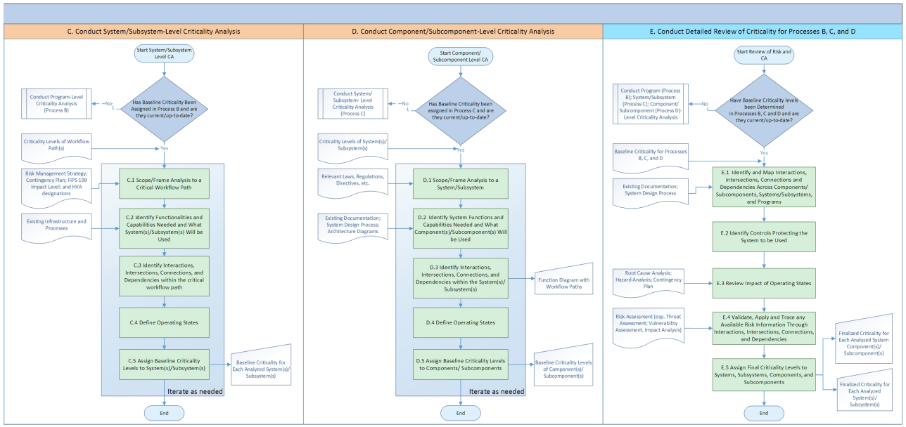

NIST IR 8179 日本語訳
英語タイトル : Criticality Analysis Process Model: Prioritizing Systems and Components日本語タイトル : 重要度分析プロセスモデル：システムおよびコンポーネントの優先順位付け
公開日 : 2018-04-09
原文URL : https://csrc.nist.gov/pubs/ir/8179/final
翻訳編集 : 自動生成（有志による非公式の日本語訳）, 原文取得日 : 2026-10-31, 訳文 : 626 / 629 ブロック
[要約] NIST IR 8179 は、組織の目標に対する重要性と、その不適切な運用または喪失が目標に及ぼしうる影響に基づいて、プログラム、システム、コンポーネントに優先順位を付ける体系的な方法である、重要度分析プロセスモデルを説明する刊行物です。本モデルは、リスク管理、システムエンジニアリング、サイバーサプライチェーンリスク管理などに関する刊行物の概念を採用し、適応させています。全体的かつ包括的なリスク管理アプローチの構成要素として使用でき、ISO/IEC 27000 ファミリーや NIST SP 群などのリスク管理の標準・ガイドラインとともに使えるとされています。本書は、モデルの概要、プロセスとサブプロセスの説明、手法、使用例を示しています。
NISTIR 8179
NISTIR 8179
Criticality Analysis Process Model
重要度分析プロセスモデル
Prioritizing Systems and Components
システムおよびコンポーネントの優先順位付け
Celia Paulsen
Jon Boyens
Nadya Bartol
Kris Winkler
Celia Paulsen
Jon Boyens
Nadya Bartol
Kris Winkler
This publication is available free of charge from: https://doi.org/10.6028/NIST.IR.8179
本刊行物は次の URL から無料で入手できます: https://doi.org/10.6028/NIST.IR.8179
［NIST のロゴ。公的な標章のため、この非公式サイトには掲載していません。原本 PDF を参照してください。］
NISTIR 8179
NISTIR 8179
Criticality Analysis Process Model
重要度分析プロセスモデル
Prioritizing Systems and Components
システムおよびコンポーネントの優先順位付け
Celia Paulsen
John Boyens
Computer Security Division
Information Technology Laboratory
Celia Paulsen
John Boyens
Computer Security Division
Information Technology Laboratory
Nadya Bartol
Boston Consulting Group
Bethesda, MD
Nadya Bartol
Boston Consulting Group
Bethesda, MD
Kris Winkler
Boston Consulting Group
Denver, CO
Kris Winkler
Boston Consulting Group
Denver, CO
This publication is available free of charge from: https://doi.org/10.6028/NIST.IR.8179
本刊行物は次の URL から無料で入手できます: https://doi.org/10.6028/NIST.IR.8179
April 2018
2018 年 4 月
U.S. Department of Commerce Wilbur L. Ross, Jr., Secretary
米国商務省 Wilbur L. Ross, Jr. 長官
National Institute of Standards and Technology
National Institute of Standards and Technology
Walter Copan, NIST Director and Under Secretary of Commerce for Standards and Technology
Walter Copan、NIST 所長兼商務次官（標準・技術担当）
National Institute of Standards and Technology Internal Report 8179
94 pages (April 2018)
National Institute of Standards and Technology Internal Report 8179
94 ページ（2018 年 4 月）
This publication is available free of charge from: https://doi.org/10.6028/NIST.IR.8179
本刊行物は次の URL から無料で入手できます: https://doi.org/10.6028/NIST.IR.8179
Certain commercial entities, equipment, or materials may be identified in this document in order to describe an experimental procedure or concept adequately. Such identification is not intended to imply recommendation or endorsement by NIST, nor is it intended to imply that the entities, materials, or equipment are necessarily the best available for the purpose.
本書では、実験手順または概念を適切に説明するために、特定の商業事業者、機器、または資材を挙げている場合があります。そのような記載は、NIST による推奨や推薦を意味するものではなく、挙げられた事業者、資材、または機器がその目的に最適であるとは限らないことも意味しません。
There may be references in this publication to other publications currently under development by NIST in accordance with its assigned statutory responsibilities. The information in this publication, including concepts and methodologies, may be used by federal agencies even before the completion of such companion publications. Thus, until each publication is completed, current requirements, guidelines, and procedures, where they exist, remain operative. For planning and transition purposes, federal agencies may wish to closely follow the development of these new publications by NIST.
本刊行物では、NIST が法令で定められた責務に従って現在策定中の他の刊行物に言及している場合があります。概念や方法論を含む本刊行物の情報は、そうした関連刊行物の完成前であっても、連邦機関が利用してもよいです。したがって、各刊行物が完成するまでは、現行の要件、ガイドライン、手順が存在する場合は、それらが引き続き有効です。計画および移行のため、連邦機関は、NIST によるこれらの新しい刊行物の策定状況を注意深く追うことを検討してもよいです。
Organizations are encouraged to review all draft publications during public comment periods and provide feedback to NIST. Many NIST cybersecurity publications, other than the ones noted above, are available at https://csrc.nist.gov/publications.
組織は、公開意見募集期間中にすべての刊行物の草案を確認し、NIST にフィードバックを提供することが推奨されます。上記以外にも、NIST のサイバーセキュリティ関連刊行物の多くが https://csrc.nist.gov/publications で入手できます。
Comments on this publication may be submitted to:
本刊行物に関する意見の提出先
National Institute of Standards and Technology
Attn: Computer Security Division, Information Technology Laboratory
100 Bureau Drive (Mail Stop 8930) Gaithersburg, MD 20899-8930
Email: scrm-nist@nist.gov
National Institute of Standards and Technology
Attn: Computer Security Division, Information Technology Laboratory
100 Bureau Drive (Mail Stop 8930) Gaithersburg, MD 20899-8930
Email: scrm-nist@nist.gov
All comments are subject to release under the Freedom of Information Act (FOIA).
すべての意見は、情報自由法（FOIA）に基づく公開の対象となります。
Reports on Computer Systems Technology
コンピュータシステム技術に関する報告書
The Information Technology Laboratory (ITL) at the National Institute of Standards and Technology (NIST) promotes the U.S. economy and public welfare by providing technical leadership for the Nation’s measurement and standards infrastructure. ITL develops tests, test methods, reference data, proof of concept implementations, and technical analyses to advance the development and productive use of information technology. ITL’s responsibilities include the development of management, administrative, technical, and physical standards and guidelines for the cost-effective security and privacy of other than national security-related information in federal information systems.
National Institute of Standards and Technology（NIST）の Information Technology Laboratory（ITL）は、米国の測定・標準基盤に対する技術的リーダーシップを提供することにより、米国経済と公共の福祉を促進しています。ITL は、情報技術の発展と生産的な利用を推進するために、テスト、テスト方法、参照データ、概念実証の実装、および技術分析を開発しています。ITL の責務には、連邦情報システムにおける国家安全保障関連以外の情報について、費用対効果の高いセキュリティとプライバシーを実現するための管理上、運用上、技術上、物理上の標準およびガイドラインの策定が含まれます。
Abstract
要旨
In the modern world, where complex systems and systems-of-systems are integral to the functioning of society and businesses, it is increasingly important to be able to understand and manage risks that these systems and components may present to the missions that they support. However, in the world of finite resources, it is not possible to apply equal protection to all assets. This publication describes a comprehensive Criticality Analysis Process Model – a structured method of prioritizing programs, systems, and components based on their importance to the goals of an organization and the impact that their inadequate operation or loss may present to those goals. A criticality analysis can help organizations identify and better understand the systems, subsystems, components, and subcomponents that are most essential to their operations and the environment in which they operate. That understanding facilitates better decision making related to the management of an organization’s information assets, including information security and privacy risk management, project management, acquisition, maintenance, and upgrade decisions. The Model is structured to logically follow how organizations design and implement projects and systems, can be used as a component of a holistic and comprehensive risk management approach that considers all risks, and can be used with a variety of risk management standards and guidelines.
現代社会では、複雑なシステムやシステムのシステム（systems-of-systems）が社会や企業の機能に不可欠となっており、これらのシステムやコンポーネントが、それらが支えるミッションにもたらしうるリスクを理解し管理することが、ますます重要になっています。しかし、資源に限りがある世界では、すべての資産に等しい保護を適用することはできません。本刊行物は、包括的な重要度分析プロセスモデル（Criticality Analysis Process Model）を説明します。これは、組織の目標に対する重要性と、その不適切な運用または喪失がそれらの目標に及ぼしうる影響に基づいて、プログラム、システム、コンポーネントに優先順位を付ける体系的な方法です。重要度分析は、組織が、自らの業務と、その業務を行う環境にとって最も不可欠なシステム、サブシステム、コンポーネント、サブコンポーネントを特定し、よりよく理解するのに役立ちます。この理解は、情報セキュリティとプライバシーのリスク管理、プロジェクト管理、調達、保守、アップグレードの判断を含め、組織の情報資産の管理に関するよりよい意思決定を促進します。本モデルは、組織がプロジェクトやシステムを設計・実装する流れに論理的に沿うように構成されており、すべてのリスクを考慮する全体的かつ包括的なリスク管理アプローチの構成要素として使用でき、さまざまなリスク管理の標準やガイドラインとともに使用できます。
Keywords
キーワード
Baseline criticality; criticality; criticality analysis; critical components; critical programs; critical systems; information security; prioritizing components; prioritizing programs; prioritizing systems; prioritization; privacy.
ベースライン重要度（baseline criticality）、重要度（criticality）、重要度分析（criticality analysis）、重要コンポーネント（critical components）、重要プログラム（critical programs）、重要システム（critical systems）、情報セキュリティ、コンポーネントの優先順位付け、プログラムの優先順位付け、システムの優先順位付け、優先順位付け、プライバシー。
Supplemental Content
補足資料
An image file of the Criticality Analysis Process Model is available at: https://csrc.nist.gov/publications/detail/nistir/8179/final
重要度分析プロセスモデルの画像ファイルは次の URL で入手できます: https://csrc.nist.gov/publications/detail/nistir/8179/final
Acknowledgments
謝辞
The authors, Jon Boyens, National Institute of Standards and Technology (NIST), Celia Paulsen (NIST), Nadya Bartol (Boston Consulting Group), and Kristina Winkler (Boston Consulting Group) would like to acknowledge and thank a number of individuals who provided valuable insights and helped to improve this publication. We would especially like to thank Kelley Dempsey (NIST), Victoria Pillitteri (NIST), Dr. Ron Ross (NIST), Maureen Moore (NIST), Paul Black (NIST), Elizabeth Lennon (NIST), Dr. Carol Woody (SEI CERT), and John Peterson (Redhorse Corporation) for their contribution to the content during the document development and review.
著者の Jon Boyens（National Institute of Standards and Technology（NIST））、Celia Paulsen（NIST）、Nadya Bartol（Boston Consulting Group）、Kristina Winkler（Boston Consulting Group）は、貴重な知見を提供し、本刊行物の改善に協力してくださった多くの方々に感謝いたします。とりわけ、文書の作成およびレビューの過程で内容に貢献してくださった Kelley Dempsey（NIST）、Victoria Pillitteri（NIST）、Dr. Ron Ross（NIST）、Maureen Moore（NIST）、Paul Black（NIST）、Elizabeth Lennon（NIST）、Dr. Carol Woody（SEI CERT）、John Peterson（Redhorse Corporation）に深く感謝いたします。
Note to Readers
読者への注記
This document is meant to help its users prioritize critical programs, systems, and components. It is not meant as a stand-alone process, rather it is meant to integrate into already existing processes, such as risk management, information security, security engineering, system and software engineering, privacy engineering, safety, quality, and other related disciplines. The model as described represents an idealized process and may not match every organization’s existing processes; readers are encouraged to adapt and integrate the process model described in this publication in a way that best fits the needs and current operations of their organization(s).
本書は、利用者が重要なプログラム、システム、コンポーネントに優先順位を付けるのを支援することを目的としています。単独で完結するプロセスとして意図されたものではなく、リスク管理、情報セキュリティ、セキュリティエンジニアリング、システム・ソフトウェアエンジニアリング、プライバシーエンジニアリング、安全性、品質、その他の関連分野など、既存のプロセスに統合して使うことを意図しています。ここに記述するモデルは理想化されたプロセスであり、すべての組織の既存のプロセスに一致するとは限りません。読者は、本刊行物に記述するプロセスモデルを、自組織のニーズと現在の運用に最も適した形に調整し、統合することが推奨されます。
Executive Summary
エグゼクティブサマリー
NISTIR 8179 describes a Criticality Analysis Process Model – a structured method of prioritizing programs, systems, and components based on their importance to the mission and the risk that their ineffective or unsatisfactory operation or loss may present to the mission. The Criticality Analysis Process Model presented in this document adopts and adapts concepts presented in risk management, system engineering, software engineering, security engineering, privacy engineering, safety applications, business analysis, systems analysis, acquisition guidance, and cyber supply chain risk management publications.
NISTIR 8179 は、重要度分析プロセスモデルを説明します。これは、ミッションに対する重要性と、その非効果的または不十分な運用あるいは喪失がミッションにもたらしうるリスクに基づいて、プログラム、システム、コンポーネントに優先順位を付ける体系的な方法です。本書で示す重要度分析プロセスモデルは、リスク管理、システムエンジニアリング、ソフトウェアエンジニアリング、セキュリティエンジニアリング、プライバシーエンジニアリング、安全性の応用、ビジネス分析、システム分析、調達ガイダンス、サイバーサプライチェーンリスク管理に関する刊行物で示された概念を採用し、適応させています。
The Criticality Analysis Process Model can be used as a component of a holistic and comprehensive risk management approach that considers all risks, including information security and privacy risks. The Model can be used with a variety of risk management standards and guidelines including the International Organization for Standardization/International Electrotechnical Commission (ISO/IEC) 27000 family of standards and the suite of National Institute of Standards and Technology (NIST) Special Publications (SPs). The Model can also be used with systems and software engineering frameworks.
重要度分析プロセスモデルは、情報セキュリティとプライバシーのリスクを含むすべてのリスクを考慮する、全体的かつ包括的なリスク管理アプローチの構成要素として使用できます。本モデルは、International Organization for Standardization/International Electrotechnical Commission（ISO/IEC）27000 ファミリーの標準や National Institute of Standards and Technology（NIST）の Special Publication（SP）群を含む、さまざまなリスク管理の標準およびガイドラインとともに使用できます。また、システム・ソフトウェアエンジニアリングのフレームワークとともに使用することもできます。
The need for criticality analysis within information security emerged as systems have become more complex and supply chains used to create software, hardware, and services have become extended, geographically distributed, and vast. The first mention of criticality analysis in NIST publications is in NIST SP 800-53 Revision 4 (Rev 4), Security and Privacy Controls for Federal Information Systems and Organizations. Today, criticality analysis is referenced in several NIST special publications including those addressing risk management, system security engineering, and supply chain risk management.
情報セキュリティにおいて重要度分析が必要となったのは、システムがより複雑になり、ソフトウェア、ハードウェア、サービスの作成に使われるサプライチェーンが拡大し、地理的に分散し、広大になったためです。NIST の刊行物で重要度分析が初めて言及されたのは、NIST SP 800-53 Revision 4（Rev 4）、Security and Privacy Controls for Federal Information Systems and Organizations です。現在では、重要度分析は、リスク管理、システムセキュリティエンジニアリング、サプライチェーンリスク管理を扱うものを含め、NIST の複数の Special Publication で言及されています。
The Model references and uses the outputs and artifacts of risk management, information security, project management, system design, safety, privacy, and other activities that an organization may already be performing. To reduce potential redundancy and duplication, the Model identifies integration points with these existing processes.
本モデルは、組織がすでに実施している可能性のあるリスク管理、情報セキュリティ、プロジェクト管理、システム設計、安全性、プライバシーなどの活動の成果物や作業生成物を参照し、利用します。重複や冗長性を減らすため、本モデルは、これら既存のプロセスとの統合点を明らかにしています。
The Criticality Analysis Process Model is structured to logically follow how organizations design and implement projects and systems and can be adapted to fit organizations’ unique practices.
重要度分析プロセスモデルは、組織がプロジェクトやシステムを設計・実装する流れに論理的に沿うように構成されており、組織固有のやり方に合わせて調整できます。
The Model consists of five main processes:
本モデルは、次の 5 つの主要プロセスで構成されます。
A.Define Criticality Analysis Procedure(s) where the organization develops or adopts a set of procedures for performing a criticality analysis.
A.重要度分析手順の定義（Define Criticality Analysis Procedure(s)）。組織が、重要度分析を実施するための一連の手順を策定または採用します。
B.Conduct Program-Level Criticality Analysis where the program manager defines, reviews, and analyzes the program to identify key activities that are vital to reaching the objectives of the program and for reaching the overall goals of the organization.
B.プログラムレベルの重要度分析の実施（Conduct Program-Level Criticality Analysis）。プログラムマネージャーが、プログラムの目的の達成と組織全体の目標の達成に不可欠な主要活動を特定するために、プログラムを定義し、レビューし、分析します。
C.Conduct System/Subsystem-Level Criticality Analysis where the system designer reviews and analyzes the system or subsystem from the point of view of its criticality to the overall organizational goals.
C.システム／サブシステムレベルの重要度分析の実施（Conduct System/Subsystem-Level Criticality Analysis）。システム設計者が、組織全体の目標に対する重要度の観点から、システムまたはサブシステムをレビューし、分析します。
D.Conduct Component/Subcomponent-Level Criticality Analysis where the system or component engineer reviews and analyzes component or subcomponent from the point of view of its criticality to a specific system or subsystem of which these components and subcomponents are a part.
D.コンポーネント／サブコンポーネントレベルの重要度分析の実施（Conduct Component/Subcomponent-Level Criticality Analysis）。システムまたはコンポーネントのエンジニアが、コンポーネントまたはサブコンポーネントが属する特定のシステムまたはサブシステムに対する重要度の観点から、そのコンポーネントまたはサブコンポーネントをレビューし、分析します。
E.Conduct Detailed Review of Criticality for Processes B, C, and D where the program manager or a collaborative group analyzes baseline criticality analysis results to create final criticality levels for Systems/Subsystems and Components/Subcomponents.
E.プロセス B、C、D の重要度に関する詳細レビューの実施（Conduct Detailed Review of Criticality for Processes B, C, and D）。プログラムマネージャーまたは共同グループが、ベースライン重要度分析の結果を分析し、システム／サブシステムおよびコンポーネント／サブコンポーネントの最終的な重要度レベルを作成します。
Using this Criticality Analysis Process Model can help organizations to better understand the systems, subsystems, components, and subcomponents that are most essential to their operations. Having this information will facilitate holistic information security and privacy risk management and integration of security and privacy considerations into project management and acquisition. The Model can help increase robustness and granularity of the decisions made about levels of protection afforded to systems and components during system development and acquisition life cycles. It also provides a means for communicating and coordinating priorities with product and service providers.
この重要度分析プロセスモデルを使用することで、組織は、業務にとって最も不可欠なシステム、サブシステム、コンポーネント、サブコンポーネントをよりよく理解できるようになります。この情報があれば、情報セキュリティとプライバシーのリスクを全体的に管理し、セキュリティとプライバシーに関する考慮事項をプロジェクト管理や調達に組み込みやすくなります。本モデルは、システムの開発および調達のライフサイクルにおいて、システムやコンポーネントに与える保護レベルについての判断の堅牢性と粒度を高めるのに役立ちます。また、製品・サービスの提供者との間で優先事項を伝達し、調整する手段にもなります。
Table of Contents
目次
List of Appendices
付録の一覧
B.2 Related Standards & NIST Publications
B.2 関連する標準と NIST 刊行物
List of Figures
図の一覧
1 Introduction
1 はじめに
In the modern world, where complex systems and systems-of-systems are integral to the functioning of society and businesses, it is increasingly important to be able to understand and manage risks that these systems and components may present to the missions that they support. And in the world of finite resources, it is not possible to apply equal protection to all assets. Managing risk can be improved with processes, methods, and techniques to prioritize assets for a detailed risk analysis and for applying information security and privacy controls. However, existing standards and guidelines provide only high-level and fragmented guidance for how to prioritize systems and components in relation to the goals of the organization, the mission, and the environment. Additionally, these existing standards and guidelines are most often focused on prioritizing projects according to organizational goals, or prioritizing components according to system functionality, which can result in an incomplete understanding of the potentially critical nature of a component to organizational goals.
現代社会では、複雑なシステムやシステムのシステム（systems-of-systems）が社会や企業の機能に不可欠となっており、これらのシステムやコンポーネントが、それらのシステムやコンポーネントが支えるミッションにもたらす可能性のあるリスクを理解し、管理できることがますます重要になっています。また、資源が限られているため、すべての資産に等しい保護を適用することはできません。リスク管理は、詳細なリスク分析の対象とする資産や、情報セキュリティおよびプライバシーの管理策を適用する資産に優先順位を付けるためのプロセス、方法、技法によって改善できます。しかし、既存の標準やガイドラインが示すのは、組織の目標、ミッション、環境との関係においてシステムやコンポーネントにどう優先順位を付けるかについての、高レベルで断片的なガイダンスにとどまります。加えて、これらの既存の標準やガイドラインは、多くの場合、組織の目標に従ってプロジェクトに優先順位を付けること、またはシステムの機能に従ってコンポーネントに優先順位を付けることに重点を置いています。その結果、組織の目標にとってコンポーネントが重要である可能性を十分に理解できないおそれがあります。
This publication describes a comprehensive Criticality Analysis Process Model (hereafter referred to as “the Model”) – a structured method of prioritizing programs, systems, and components based on their importance to the goals of an organization and the impact that their inadequate operation or loss may present to those goals. The Model adopts and adapts concepts presented in risk management, system engineering, software engineering, security engineering, privacy engineering, safety applications, business analysis, systems analysis, acquisition guidance, and cyber supply chain risk management publications. It helps organizations to identify and prioritize information systems and components that are vital to the success of organizational goals.
本刊行物は、包括的な重要度分析プロセスモデル（Criticality Analysis Process Model。以下「本モデル」）を説明します。これは、組織の目標に対する重要性と、その不適切な運用または喪失がそれらの目標に及ぼしうる影響に基づいて、プログラム、システム、コンポーネントに優先順位を付ける体系的な方法です。本モデルは、リスク管理、システムエンジニアリング、ソフトウェアエンジニアリング、セキュリティエンジニアリング、プライバシーエンジニアリング、安全性の応用、ビジネス分析、システム分析、調達ガイダンス、サイバーサプライチェーンリスク管理に関する刊行物で示された概念を採用し、適応させています。本モデルは、組織が、組織の目標の成功に不可欠な情報システムとコンポーネントを特定し、優先順位を付けるのに役立ちます。
A criticality analysis is especially pertinent in the current technology environment where organizations rely on third-party product and service providers for the development, integration, and management of the information technology (IT) and operational technology (OT) they use.1 A criticality analysis can help organizations identify and better understand the systems, subsystems, components, and subcomponents that are most essential to their operations and the environment in which they operate. That understanding facilitates better decision making related to the management of an organization’s assets, including information security and privacy risk management, project management, acquisition, maintenance, and upgrade decisions.
重要度分析は、組織が使用する情報技術（IT）および運用技術（OT）の開発、統合、管理を第三者の製品・サービス提供者に依存している現在の技術環境において、とりわけ重要です。1重要度分析は、組織が、自らの業務と、その業務を行う環境にとって最も不可欠なシステム、サブシステム、コンポーネント、サブコンポーネントを特定し、よりよく理解するのに役立ちます。この理解は、情報セキュリティとプライバシーのリスク管理、プロジェクト管理、調達、保守、アップグレードの判断を含め、組織の資産の管理に関するよりよい意思決定を促進します。
1.1 Purpose and Scope
1.1 目的と適用範囲
The Criticality Analysis Process Model is intended to be used as a component of a holistic and comprehensive risk management approach that considers all risks, including information security and privacy risks, to prioritize and tailor controls to those risks. The Model can be used with a variety of risk management standards and guidelines including the International Organization for Standardization/International Electrotechnical Commission (ISO/IEC) 27000 family of standards and the suite of National Institute of Standards and Technology (NIST) Special Publications (SPs). It can also be used in conjunction with systems and software engineering, project management, and auditing/attestation frameworks.
重要度分析プロセスモデルは、情報セキュリティとプライバシーのリスクを含むすべてのリスクを考慮し、それらのリスクに対して管理策の優先順位付けと調整を行う、全体的かつ包括的なリスク管理アプローチの構成要素として使用されることを意図しています。本モデルは、International Organization for Standardization/International Electrotechnical Commission（ISO/IEC）27000 ファミリーの標準や National Institute of Standards and Technology（NIST）の Special Publication（SP）群を含む、さまざまなリスク管理の標準およびガイドラインとともに使用できます。また、システム・ソフトウェアエンジニアリング、プロジェクト管理、監査／アテステーションのフレームワークと併せて使用することもできます。
The Model can help increase robustness and granularity of the decisions made about levels of protection afforded to systems and components during system development and acquisition life cycles. It also provides a means for communicating and coordinating priorities with product and service providers.
本モデルは、システムの開発および調達のライフサイクルにおいて、システムやコンポーネントに与える保護レベルについての判断の堅牢性と粒度を高めるのに役立ちます。また、製品・サービスの提供者との間で優先事項を伝達し、調整する手段にもなります。
The Model uses existing artifacts, processes, and methods to a maximum extent. It references and uses the outputs of risk management, information security, privacy, project management, system design, safety, and other processes that an organization is already performing. The Model is not intended to replace any of these processes. Rather, to reduce potential redundancy and leverage existing efforts, the Model identifies integration points with these existing processes. An organization may have additional processes not listed in this publication, which may also be performed alongside and integrated with the Model.
本モデルは、既存の成果物、プロセス、方法を最大限に活用します。組織がすでに実施しているリスク管理、情報セキュリティ、プライバシー、プロジェクト管理、システム設計、安全性、その他のプロセスの出力を参照し、利用します。本モデルは、これらのプロセスのいずれかを置き換えることを意図していません。むしろ、重複の可能性を減らし、既存の取り組みを活用するために、これら既存のプロセスとの統合点を明らかにしています。本刊行物に記載されていない追加のプロセスを組織が実施している場合があり、それらも本モデルと並行して実施され、本モデルに統合されることがあります。
1.2 Background
1.2 背景
The notion of a formal criticality analysis originated from Failure Mode Effects and Criticality Analysis (FMECA), used in safety applications. The need for a criticality analysis within information security emerged as technology became more complex and supply chains used to create software, hardware, and services became extended, geographically distributed, and vast. The first mention of criticality analysis in NIST publications was in NIST SP 800-53 Revision 4 (Rev. 4), Security and Privacy Controls for Federal Information Systems and Organizations. Today, it is mentioned in several NIST special publications including those addressing risk management, system security engineering, and supply chain risk management.
正式な重要度分析という考え方は、安全性の応用で用いられる故障モード影響・致命度解析（Failure Mode Effects and Criticality Analysis。FMECA）に由来します。情報セキュリティにおける重要度分析の必要性が生じたのは、技術がより複雑になり、ソフトウェア、ハードウェア、サービスの開発に用いられるサプライチェーンが、延伸し、地理的に分散し、巨大化したためです。NIST の刊行物で重要度分析が初めて言及されたのは、NIST SP 800-53 Revision 4（Rev. 4）、Security and Privacy Controls for Federal Information Systems and Organizations です。現在では、リスク管理、システムセキュリティエンジニアリング、サプライチェーンリスク管理を扱うものを含め、複数の NIST Special Publication で言及されています。
These documents provide high-level guidance on criticality analysis, including how to integrate it into broader risk management, system engineering, or security or privacy engineering activities. However, these publications do not provide detailed guidance for how to perform the criticality analysis itself. A number of U.S. government agencies have implemented criticality analysis processes, but these processes are nonstandard and are often not formally defined. Meanwhile, the need for detailed information for how to identify what is critical and how to prioritize its protection within a system has become more acute due to how modern systems and components are designed, developed, manufactured, acquired, and deployed.
これらの文書は、重要度分析を、より広範なリスク管理、システムエンジニアリング、あるいはセキュリティまたはプライバシーのエンジニアリング活動にどう統合するかを含め、重要度分析に関する高レベルのガイダンスを示しています。しかし、これらの刊行物は、重要度分析そのものの実施方法について詳細なガイダンスを示していません。米国政府の複数の機関が重要度分析プロセスを実装していますが、これらのプロセスは標準化されておらず、正式に定義されていないことも少なくありません。一方で、現代のシステムやコンポーネントが設計、開発、製造、調達、配備される方法のために、何が重要かを特定し、システム内でその保護にどう優先順位を付けるかについての詳細な情報の必要性は、いっそう切実になっています。
Identifying the asset of greatest importance is not a new concept. A number of disciplines have well-established methods for doing so, including business risk management, project management, safety, supply chain management, supply chain risk management, critical infrastructure protection, and others. These concepts are used in a variety of industries including banking and electric utilities. The authors researched and compared these existing methods and approaches to develop the Model described in this publication; it is anchored in these existing methods and approaches and is tailored specifically to the needs of information security and privacy risk management.
最も重要な資産を特定するという考え方は、新しいものではありません。事業リスク管理、プロジェクト管理、安全性、サプライチェーン管理、サプライチェーンリスク管理、重要インフラ防護など、多くの分野に、そのための確立された方法があります。これらの考え方は、銀行業や電力事業を含むさまざまな業界で使われています。著者らは、これらの既存の方法やアプローチを調査・比較して、本刊行物に記述するモデルを開発しました。本モデルはこれらの既存の方法やアプローチに根ざしており、情報セキュリティとプライバシーのリスク管理のニーズに特化して調整されています。
1.3 Audience
1.3 対象読者
The audience for this publication is a broad set of leaders and practitioners including those engaged in cybersecurity/information security; privacy; information technology; contracting; procurement/acquisitions; system and software development/engineering; security engineering; auditors; program management; and system owners. Other personnel or entities are free to use the guidance as appropriate to their situation.
本刊行物の対象読者は、サイバーセキュリティ／情報セキュリティ、プライバシー、情報技術、契約、調達／取得、システム・ソフトウェアの開発／エンジニアリング、セキュリティエンジニアリング、監査、プログラム管理、システム所有者に携わる者を含む、幅広いリーダーと実務担当者です。その他の要員や事業体も、自らの状況に応じて、このガイダンスを自由に使用できます。
1.4 Relationship to other standards and NIST publications
1.4 他の標準および NIST 刊行物との関係
The Model can be integrated into a variety of processes including information security, risk and privacy management, system and software engineering, acquisition, auditing/attestation, and project management. It can also be used in conjunction with safety, privacy, and business analysis processes. This publication builds on a set of multidisciplinary publications, standards, and guidelines, developed by NIST, the International Organization for Standardization (ISO), and other bodies. “Criticality Analysis” is mentioned in and can be used with the following NIST SPs:2
本モデルは、情報セキュリティ、リスク・プライバシー管理、システム・ソフトウェアエンジニアリング、調達、監査／アテステーション、プロジェクト管理を含むさまざまなプロセスに統合できます。また、安全性、プライバシー、ビジネス分析のプロセスと併せて使用することもできます。本刊行物は、NIST、International Organization for Standardization（ISO）、その他の団体が策定した、複数の分野にまたがる一連の刊行物、標準、ガイドラインに基づいています。「重要度分析（Criticality Analysis）」は、次の NIST SP で言及されており、これらとともに使用できます。2
•NIST SP 800-53 Rev. 4, Security and Privacy Controls for Federal Information Systems and Organizations, which describes security control SA-14: Criticality Analysis.
•NIST SP 800-53 Rev. 4, Security and Privacy Controls for Federal Information Systems and Organizations は、セキュリティ管理策 SA-14: Criticality Analysis を記述しています。
•NIST SP 800-160 Volume 1, Systems Security Engineering: Considerations for a Multidisciplinary Approach in the Engineering of Trustworthy Secure Systems, mentions criticality analysis a part of performing control SA-2: Perform the security aspects of systems analyses, as well as in Appendix G: Engineering and Security Fundamentals.
•NIST SP 800-160 Volume 1, Systems Security Engineering: Considerations for a Multidisciplinary Approach in the Engineering of Trustworthy Secure Systems は、重要度分析が管理策 SA-2: Perform the security aspects of systems analyses の実施の一環であること、および Appendix G: Engineering and Security Fundamentals で言及しています。
•NIST SP 800-161, Supply Chain Risk Management Practices for Federal Information Systems and Organizations, mentions the concept of criticality several times:
•NIST SP 800-161, Supply Chain Risk Management Practices for Federal Information Systems and Organizations は、重要度の概念に何度か言及しています。
•“Baseline Criticality” is mentioned in Task 1-1 to be determined as a part of the Frame step of the Risk Management Process;
•「ベースライン重要度（Baseline Criticality）」は、リスク管理プロセスのフレーム（Frame）ステップの一環として決定するものとして Task 1-1 で言及されています。
•In Task 2-0, Criticality Analysis, a task is to be performed at the beginning of the Assess step in the Risk Management Process, and
•Task 2-0, Criticality Analysis は、リスク管理プロセスの評価（Assess）ステップの冒頭で実施するタスクです。
•In the supplemental guidance for control SA-14: Criticality Analysis.
•管理策 SA-14: Criticality Analysis の補足ガイダンスでも言及されています。
Through the above publications, criticality analysis is associated with, and integrated into, the broader set of related NIST publications, including:
上記の刊行物を通じて、重要度分析は、次のものを含む、関連する NIST 刊行物のより広い集合と関連づけられ、統合されています。
•Federal Information Processing Standard Publication (FIPS) 199, Standards for Security Categorization of Federal Information and Information Systems;
•Federal Information Processing Standard Publication（FIPS）199, Standards for Security Categorization of Federal Information and Information Systems;
•NIST SP 800-39, Managing Information Security Risk: Organization, Mission, and Information System View, and
•NIST SP 800-39, Managing Information Security Risk: Organization, Mission, and Information System View、および
•NIST SP 800-30 Rev. 1, Guide for Conducting Risk Assessments.
•NIST SP 800-30 Rev. 1, Guide for Conducting Risk Assessments
The Criticality Analysis Process Model presented in this document can be used in conjunction with ISO standards focused on risk management or information security in supplier relationships:
本書で示す重要度分析プロセスモデルは、リスク管理、または供給者関係における情報セキュリティに焦点を当てた ISO 規格とともに使用できます。
•ISO/IEC 27036 – Information technology – Security techniques – Information security for supplier relationships,
•ISO/IEC 27036 – Information technology – Security techniques – Information security for supplier relationships,
•ISO/IEC 27001 – Information technology – Security techniques – Information security management system,
•ISO/IEC 27001 – Information technology – Security techniques – Information security management system,
•ISO/IEC 27002 – Information technology – Security techniques – Code of practice for information security management, and
•ISO/IEC 27002 – Information technology – Security techniques – Code of practice for information security management、および
•ISO/IEC 20243 - Information technology – Open Trusted Technology Provider Standard (O-TTPS) -- Mitigating maliciously tainted and counterfeit products.
•ISO/IEC 20243 - Information technology – Open Trusted Technology Provider Standard (O-TTPS) -- Mitigating maliciously tainted and counterfeit products
The Criticality Analysis Process Model can also be used in conjunction with additional standards and publications focused on system and software engineering:
重要度分析プロセスモデルは、システム・ソフトウェアエンジニアリングに焦点を当てた追加の標準や刊行物とともに使用することもできます。
•NIST SP 800-160 Volume 1, Systems Security Engineering, and
•NIST SP 800-160 Volume 1, Systems Security Engineering、および
•ISO/IEC/IEEE 15288 – System and software lifecycle processes
International Council on Systems Engineering (INCOSE) System Engineering Handbook.
•ISO/IEC/IEEE 15288 – System and software lifecycle processes
International Council on Systems Engineering (INCOSE) System Engineering Handbook
1.5 Structure of this document
1.5 本書の構成
The rest of this publication is organized as follows:
本刊行物の以降の構成は次のとおりです。
•Chapter 2 provides an overview of the Model including the methodology used to develop it and tips for how to read the Model diagram itself.
•第 2 章では、本モデルの概要を示します。これには、モデルの策定に用いた方法論と、モデル図そのものの読み方のヒントが含まれます。
•Chapter 3 provides a deep-dive description of the Model and the processes that compose the Model.
•第 3 章では、本モデルと、モデルを構成するプロセスを詳しく説明します。
•Appendix A lists acronyms and abbreviations used in this document.
•付録 A では、本書で使用する頭字語と略語を一覧にしています。
•Appendix B provides the bibliography of sources and references used in this document.
•付録 B では、本書で使用した出典と参考文献の文献目録を示します。
•Appendix C provides a brief overview of methods mentioned in the Model.
•付録 C では、本モデルで言及している手法の概要を簡単に示します。
•Appendix D provides two illustrative examples of how the Model can be used.
•付録 D では、本モデルの使い方を示す 2 つの例を示します。
•Appendix E provides a detailed diagram of the Model.
•付録 E では、本モデルの詳細な図を示します。
2 Criticality Analysis Process Model Overview
2 重要度分析プロセスモデルの概要
This chapter provides an overview of the Criticality Analysis Process Model including:
本章では、重要度分析プロセスモデルの概要を示します。内容は次のとおりです。
•The methodology that was used to develop the Model;
•本モデルの策定に用いた方法論
•Overview of the top-level processes in the Model; and
•本モデルの最上位のプロセスの概要、および
•Guidance on how to read the process diagrams used to depict the Model, including any "rules" for interpreting those diagrams.
•本モデルを表すプロセス図の読み方に関するガイダンス（図を解釈するための「ルール」を含む）
2.1 Methodology
2.1 方法論
The Model was developed by conducting four main activities:
本モデルは、次の 4 つの主要な活動を行って策定されました。
•Environmental scan that included identification and detailed review of publications (listed in Appendix B) from different subject areas that describe methods for identifying critical assets.
•環境スキャン。重要な資産を特定する方法を記述した、さまざまな主題分野の刊行物（付録 B に一覧）を特定し、詳細にレビューする活動です。
•Comparative analysis and synthesis of the reviewed methodologies to derive a common set of steps for a criticality analysis.
•レビューした方法論の比較分析と統合を行い、重要度分析のための共通の一連のステップを導出しました。
•Identification of steps relevant to information security and privacy and potential steps not described in existing literature.
•情報セキュリティとプライバシーに関連するステップ、および既存の文献に記述されていない可能性のあるステップの特定。
•Translation and transformation of the steps into the information security and privacy practitioner language.
•ステップを情報セキュリティ・プライバシーの実務担当者の言葉に翻訳し、変換しました。
First, the authors identified and collected a number of methodologies that described a process for identifying or prioritizing critical assets. A subset of methodologies was then selected for further research, based on an initial assessment of their potential applicability to an information security and privacy criticality analysis, their comprehensiveness, uniqueness, and usability by the intended audience. The authors also contacted a small number of subject matter experts to provide insights into the various methodologies and those methodologies’ usefulness to an information security and privacy criticality analysis.
まず著者らは、重要な資産を特定または優先順位付けするプロセスを記述した多数の方法論を特定し、収集しました。次に、情報セキュリティとプライバシーの重要度分析への適用可能性、包括性、独自性、想定される利用者にとっての使いやすさについての初期評価に基づき、さらなる調査のために方法論の一部を選びました。著者らはまた、少数の分野の専門家に連絡を取り、さまざまな方法論についての知見と、それらの方法論が情報セキュリティとプライバシーの重要度分析にとってどの程度有用かについての知見を得ました。
The authors then summarized and conducted a detailed review of each methodology using a structured matrix format. The summaries included but were not limited to the following information:
続いて著者らは、構造化されたマトリクス形式を用いて、各方法論を要約し、詳細にレビューしました。要約には、次の情報が含まれますが、これらに限定されません。
•Applicability to an information security and privacy criticality analysis for projects, systems, and components;
•プロジェクト、システム、コンポーネントに対する情報セキュリティとプライバシーの重要度分析への適用可能性
•Scalability to large and small projects/organizations;
•大規模および小規模のプロジェクト／組織への拡張性
•Investment/cost considerations;
•投資／コストに関する考慮事項
•Applicability to an existing or new system;
•既存のシステムまたは新規のシステムへの適用可能性
•Inputs and outputs;
•入力と出力
•Complexity and difficulty of use; and
•複雑さと使いにくさ
•Demonstrated effectiveness in their respective domains.
•それぞれの領域で実証された有効性
Next, the authors conducted a comparative analysis and synthesis of the methodologies using another matrix to derive a common set of steps. In addition, additional steps were described that filled gaps related to the application of existing literature to an information security and privacy domain. Once the authors were satisfied with the accuracy and completeness of the comparative analysis, they validated the Model against relevant information security and privacy sources to ensure that the terminology in and the general flow of the Model was consistent with information security and privacy concepts and guidance. Next, the Model itself was constructed using commonly accepted process modeling techniques. The finalized set of steps were translated and transformed into information security and privacy practitioner language and aligned with existing NIST publications. The Model was then edited and simplified for ease of use.
次に著者らは、別のマトリクスを用いて方法論の比較分析と統合を行い、共通の一連のステップを導出しました。さらに、既存の文献を情報セキュリティとプライバシーの領域に適用する際のギャップを埋める追加のステップも記述しました。比較分析の正確さと網羅性に著者らが納得した後、本モデルの用語と全体的な流れが情報セキュリティとプライバシーの概念およびガイダンスと一貫していることを確かめるために、関連する情報セキュリティ・プライバシーの出典に照らしてモデルを検証しました。その後、広く受け入れられているプロセスモデリング手法を用いてモデル自体を構築しました。最終的な一連のステップは、情報セキュリティ・プライバシーの実務担当者の言葉に翻訳・変換され、既存の NIST 刊行物と整合させられました。その後、使いやすさのためにモデルを編集し、単純化しました。
2.2 Model Overview
2.2 モデルの概要
The Criticality Analysis Process Model is structured to logically follow how organizations design, acquire, and implement projects and systems. Traditionally, organizations establish projects and programs to accomplish mission and business objectives and to guide the performance of corresponding activities. They design and/or deploy information systems to support those activities. These systems are often a loosely defined, complex mixture of hardware, software, network infrastructure, data, humans, and other elements, and may be composed of numerous subsystems (this architecture is often called “systems of systems”). The IT/OT components and subcomponents used to construct these systems and subsystems typically come from a variety of sources and are often Commercial-off-the-Shelf (COTS) products. Different organizational units – including third parties – naturally have different roles and responsibilities with respect to these projects, systems, and components.
重要度分析プロセスモデルは、組織がプロジェクトやシステムを設計、調達、実装する流れに論理的に沿うように構成されています。従来、組織は、ミッションおよびビジネス目標を達成し、対応する活動の実施を導くために、プロジェクトやプログラムを設けます。そして、それらの活動を支援する情報システムを設計または配備、あるいはその両方を行います。これらのシステムは、ハードウェア、ソフトウェア、ネットワークインフラストラクチャ、データ、人間、その他の要素が緩く定義された複雑な混合体であることが多く、多数のサブシステムで構成される場合もあります（このアーキテクチャは「システムのシステム（systems of systems）」と呼ばれることがよくあります）。これらのシステムやサブシステムの構築に使われる IT／OT のコンポーネントやサブコンポーネントは、通常、さまざまな供給元から調達され、市販品（Commercial-off-the-Shelf。COTS）であることも少なくありません。第三者を含め、組織内の異なる部門は、これらのプロジェクト、システム、コンポーネントに関して、当然ながら異なる役割と責任を持ちます。
The structure of the Model defined in this document accommodates these dynamics and at the same time, helps to facilitate a holistic view of criticality for a collection of programs, systems/subsystems, and components/subcomponents.3 The Model combines top-down and bottom-up analysis approaches. The top-down approach in this model enables the organization to identify critical processes and then to progressively narrow the analysis to critical systems that support those processes, and then to critical components which ensure the critical functions of those systems. It follows an ideal system development process while allowing the flexibility for analyzing systems and components in a less ideal situation. The bottom-up approach progressively traces the impact of a malfunctioning or compromised critical component would have on the system, and then on the program. It allows for the identification of interactions, intersections, connections, and dependencies between components, systems, and programs that are not easily identified in a top-down approach. The combination of using top-down and bottom-up approaches ensures that the Model is thorough and complete.
本書で定義するモデルの構造は、こうした力学に対応するとともに、プログラム、システム／サブシステム、コンポーネント／サブコンポーネントの集合に対する重要度の全体的な見方を促進するのに役立ちます。3本モデルは、トップダウンとボトムアップの分析アプローチを組み合わせています。本モデルのトップダウンアプローチでは、組織は、重要なプロセスを特定し、次にそれらのプロセスを支える重要なシステムへ、さらにそれらのシステムの重要な機能を確保する重要なコンポーネントへと、分析を段階的に絞り込むことができます。これは理想的なシステム開発プロセスに従いつつ、理想的とはいえない状況でもシステムやコンポーネントを分析できる柔軟性を備えています。ボトムアップアプローチでは、誤動作した、または侵害された重要なコンポーネントがシステムに、さらにプログラムに及ぼす可能性のある影響を段階的にたどります。これにより、トップダウンアプローチでは容易に特定できない、コンポーネント、システム、プログラム間の相互作用、交錯、接続、依存関係を特定できます。トップダウンとボトムアップのアプローチを組み合わせて用いることで、本モデルは徹底的かつ完全なものになります。
The Model consists of five main processes as depicted in Figure 1:
本モデルは、図 1 に示す 5 つの主要プロセスで構成されます。
A.Define Criticality Analysis Procedure
A.重要度分析手順の定義
B.Conduct Program-Level Criticality Analysis
B.プログラムレベルの重要度分析の実施
C.Conduct System/Subsystem-Level Criticality Analysis
C.システム／サブシステムレベルの重要度分析の実施
D.Conduct Component/Subcomponent-Level Criticality Analysis
D.コンポーネント／サブコンポーネントレベルの重要度分析の実施
E.Conduct Detailed Review of Criticality for Processes B, C, and D.
E.プロセス B、C、D の重要度に関する詳細レビューの実施

流れ図です。「Start Criticality Analysis」から「A. Define Criticality Analysis Procedure」へ進みます。Aからは実線の矢印で「B. Conduct Program-Level Criticality Analysis」へ、破線の矢印で「C. Conduct System/Subsystem-Level Criticality Analysis」と「D. Conduct Component/Subcomponent-Level Criticality Analysis」へ進みます。BからC、CからDへは実線の矢印が伸びています。D（実線）とB（破線）から「E. Conduct Detailed Review of Criticality for Processes B, C, and D」へ進み、そこから「End」へ進みます。
Figure 1 – High-Level Criticality Analysis Process Model
図 1 – 高レベルの重要度分析プロセスモデル
Process A is expected to be completed before other processes. Processes B, C, and D ideally will be performed in sequence to provide a comprehensive top-down analysis, but may be performed at the same time or out of sequence (this is shown in the model with dotted lines). Different individuals typically perform these processes; process D in particular is likely to be done partially by a third party in the case of, for example, COTS products. These three processes have iterative sub-processes and can be conducted at increasing levels of detail to refine the results and accept additional inputs. Process E is a bottom-up analysis using inputs from, and cutting across, processes B, C, and D. It is performed at the very end to finalize criticality levels for programs, systems/subsystems, and components/subcomponents.
プロセス A は、ほかのプロセスより前に完了することが想定されています。プロセス B、C、D は、包括的なトップダウン分析を行うために順番に実施するのが理想的ですが、同時に、あるいは順序を変えて実施してもかまいません（これはモデル中の点線で示されています）。これらのプロセスは通常、それぞれ別の担当者が実施します。特にプロセス D は、たとえば COTS 製品の場合には、一部を第三者が実施する可能性が高いです。これら 3 つのプロセスには反復的なサブプロセスがあり、結果を洗練し、追加の入力を受け入れるために、より詳細なレベルで繰り返し実施できます。プロセス E は、プロセス B、C、D からの入力を使い、これらにまたがるボトムアップ分析です。これは最後に実施され、プログラム、システム／サブシステム、コンポーネント／サブコンポーネントの重要度レベルを確定します。
Section 3, Model Process and Sub-Process Descriptions, describes each process and sub-process in detail.
第 3 章「モデルのプロセスとサブプロセスの説明」では、各プロセスとサブプロセスを詳しく説明します。
2.3 How to Read the Model
2.3 モデルの読み方
The Criticality Analysis Process Model was developed using formal process modeling techniques and flowchart methods. This ensures maximum flexibility for organizations integrating the model and facilitates the integration of the model into existing software-based tools. Users do not need a thorough understanding of the techniques or methods to use the Model.
重要度分析プロセスモデルは、正式なプロセスモデリング手法とフローチャートの方法を用いて策定されました。これにより、モデルを統合する組織にとっての柔軟性が最大限に確保され、既存のソフトウェアベースのツールにモデルを統合しやすくなります。利用者が本モデルを使うために、これらの手法や方法を深く理解する必要はありません。
The following symbols were used:4
次の記号が使われています。4
流れ図の記号7つを上から順に縦に並べた図です。下辺が波形の文書の形、上辺が斜めの四角形、薄い青の角の丸い長方形、青いひし形、緑の長方形、左右の端近くに縦線のある長方形、縦長の薄い青の長方形です。原本では、それぞれの記号の右に、続く本文の説明が同じ順で印刷されています。
Documents within/external to the enterprise
エンタープライズ内／外の文書
Output of a sub-process
サブプロセスの出力
Start/end of process
プロセスの開始／終了
Decision point
判断点
Sub-process
サブプロセス
Previous process/sub-process
前のプロセス／サブプロセス
Iterative Feedback loop
反復フィードバックループ
The Model is intended to be read top-down and left-to-right. Boxes around a series of sub-processes indicate that these sub-processes are iterative and can be performed in a loop until an acceptable output is produced.
本モデルは、上から下、左から右へ読むことを意図しています。一連のサブプロセスを囲む枠は、これらのサブプロセスが反復的であり、許容できる出力が得られるまでループで実施できることを示します。
Each process has "start" and "end" and accepts inputs both from the Model and from other sources. Each process produces outputs that serve as inputs into subsequent processes within the Model.
各プロセスには「開始」と「終了」があり、本モデルからの入力と、それ以外の情報源からの入力の両方を受け入れます。各プロセスは、本モデル内の後続のプロセスへの入力となる出力を生成します。
Note: Feedback loops are not included in this model due to the extent of iteration and feedback required. Instead, organizations are encouraged to continuously iterate and update throughout the analysis. This is shown in the model as an “Iterative Feedback Loop box.”
注: 必要となる反復とフィードバックの度合いが大きいため、本モデルにはフィードバックループを含めていません。代わりに、組織は、分析の全体を通じて継続的に反復し、更新することが推奨されます。これは、モデル中では「反復フィードバックループ」の枠で示されています。
3 Model Process and Sub-Process Descriptions
3 モデルのプロセスとサブプロセスの説明
This chapter provides detailed descriptions of the Model’s processes and sub-processes. The five processes of the Criticality Analysis Process Model are depicted in Figure 1 in Section 2, and a more detailed version of the Model may be found in Appendix E. Each process consists of one or more sub-processes. Detailed diagrams of each process, including the associated sub-processes, are included in the sections below. Appendix D provides two examples of how the Model can be used and adapted.
本章では、本モデルのプロセスとサブプロセスを詳しく説明します。重要度分析プロセスモデルの 5 つのプロセスは第 2 章の図 1 に示しており、より詳細なバージョンのモデルは付録 E にあります。各プロセスは 1 つ以上のサブプロセスで構成されます。各プロセスの詳細な図は、関連するサブプロセスを含め、以下の各節に掲載しています。付録 D では、本モデルの使い方と調整方法を示す 2 つの例を示します。
The first process, A. Define Criticality Analysis Procedure, provides guidance, structure, and continuity for performing a criticality analysis, which is necessary due to the number of different people and groups involved in completing a criticality analysis.
最初のプロセス A「重要度分析手順の定義（Define Criticality Analysis Procedure）」は、重要度分析の実施にあたってのガイダンス、構造、継続性を提供します。これは、重要度分析の完了に多くの異なる人やグループが関与するために必要です。
The next three processes, B. Conduct Program-Level Criticality Analysis, C. Conduct System/Subsystem-Level Criticality Analysis, and D. Conduct Component/Subcomponent-Level Criticality Analysis, act as a top-down means of mapping and prioritizing activities, associated systems/subsystems, and finally, components/subcomponents of those systems. These three processes are very similar to each other conceptually, but require different methods for completion and are typically done by separate groups of people with differing areas of expertise, thus are described separately. They are iterative and can be conducted at increasing level of detail to refine the results and accept additional inputs. Ideally, these three processes would be be conducted in sequence. However, it is likely that for many use cases, they will be conducted at least partially out of sequence or in parallel to each other.
次の 3 つのプロセス、B「プログラムレベルの重要度分析の実施（Conduct Program-Level Criticality Analysis）」、C「システム／サブシステムレベルの重要度分析の実施（Conduct System/Subsystem-Level Criticality Analysis）」、D「コンポーネント／サブコンポーネントレベルの重要度分析の実施（Conduct Component/Subcomponent-Level Criticality Analysis）」は、活動、関連するシステム／サブシステム、そして最終的にそれらのシステムのコンポーネント／サブコンポーネントを、トップダウンでマッピングし、優先順位付けする手段として機能します。これら 3 つのプロセスは概念的には互いによく似ていますが、完了させるための方法が異なり、通常は専門分野の異なる別々のグループが行うため、別々に説明しています。これらは反復的であり、結果を洗練し、追加の入力を受け入れるために、より詳細なレベルで繰り返し実施できます。これら 3 つのプロセスは、順番に実施するのが理想的です。しかし、多くのユースケースでは、少なくとも部分的に順序を変えて、あるいは互いに並行して実施することになるでしょう。
The last process, E. Conduct Detailed Review of Criticality for Processes B, C, and D, is performed after Processes B, C, and D have been completed and cuts across these three processes. This process is performed in a bottom-up manner for tracing dependencies and impact/risk from subcomponents to components, components to subsystems, subsystems to systems, systems to programs, and programs to higher-level programs using the information gathered in the previous three processes. It provides connective tissue between Processes B, C, and D, and ensures that the criticality determination is consistent across all layers of the Model – program, system/subsystem, and component/subcomponent – in terms of considering impacts, dependencies, and risks across the entire program. As such, Process E requires a high level of coordination and collaboration between the actors in those other processes. Baseline Criticality levels assigned in Processes C and D are finalized in process E; the Baseline Criticality levels determined in Process B are typically sufficient for the program level and so do not need to be finalized in Process E.
最後のプロセス E「プロセス B、C、D の重要度に関する詳細レビューの実施（Conduct Detailed Review of Criticality for Processes B, C, and D）」は、プロセス B、C、D の完了後に実施され、これら 3 つのプロセスにまたがります。このプロセスは、前の 3 つのプロセスで収集した情報を用い、サブコンポーネントからコンポーネントへ、コンポーネントからサブシステムへ、サブシステムからシステムへ、システムからプログラムへ、プログラムからより上位のプログラムへと、依存関係と影響／リスクをボトムアップでたどる形で実施されます。このプロセスはプロセス B、C、D をつなぐ役割を果たし、プログラム全体にわたる影響、依存関係、リスクを考慮するうえで、重要度の判定が本モデルのすべての層（プログラム、システム／サブシステム、コンポーネント／サブコンポーネント）で一貫するようにします。そのため、プロセス E には、それらほかのプロセスの担当者間での高度な調整と協力が必要です。プロセス C と D で割り当てたベースライン重要度レベルはプロセス E で確定されます。プロセス B で決定したベースライン重要度レベルは、通常はプログラムレベルでは十分であるため、プロセス E で確定する必要はありません。
Note: Organizations do not need to complete each process or sub-process exactly as described in this document to complete a criticality analysis. Rather, organizations are expected to tailor this Model to their own needs, capabilities, and operating environment.
注: 組織は、重要度分析を完了するために、本書の記述どおりに各プロセスまたはサブプロセスを完全に実施する必要はありません。むしろ、組織は、自らのニーズ、能力、運用環境に合わせて本モデルを調整することが期待されます。
The sections below describe inputs, outputs, and methods associated with each Process of the Model. These are listed for informational purposes only, and it is expected that users will fill in these items with information specific to their organization(s) when they tailor the Model as described in process A.1. The inputs listed provide examples of the types of documents that may be useful in completing the process/sub-process. Organizations may not have all the inputs mentioned in this publication. If a specific input does not exist or is unavailable for any reason, the same type of information may exist as part of another document or in another format. Similarly, outputs described in this publication do not need to be stand-alone documents but may be part of an existing document or be available in another format than is described herein.
以下の各節では、本モデルの各プロセスに関連する入力、出力、方法を説明します。これらは情報提供のみを目的として挙げたものであり、利用者がプロセス A.1 の説明に従って本モデルを調整する際に、これらの項目に自組織固有の情報を記入することが期待されます。挙げた入力は、プロセス／サブプロセスを完了するのに役立つ可能性のある文書の種類の例です。組織は、本刊行物で言及しているすべての入力を持っているとは限りません。特定の入力が存在しない、または何らかの理由で利用できない場合でも、同じ種類の情報が別の文書の一部として、あるいは別の形式で存在する場合があります。同様に、本刊行物で説明している出力は、単独の文書である必要はなく、既存の文書の一部であってもよく、ここに記述したものとは別の形式で用意されていてもかまいません。
The methods listed are intended to provide additional guidance on how to complete the sub-processes. These methods are briefly described in Appendix C, with references for further guidance where available. In tailoring the Model, it may be useful to more fully describe or provide information on methods to be used.
挙げた方法は、サブプロセスを完了する方法についての追加のガイダンスを提供することを意図しています。これらの方法は付録 C で簡単に説明しており、利用可能な場合はさらなるガイダンスへの参照も示しています。モデルを調整する際には、使用する方法をより詳しく説明するか、その方法に関する情報を提供するのが有用な場合があります。
This chapter describes each process and the associated sub-processes in detail. Each process is described using the following template:
本章では、各プロセスと関連するサブプロセスを詳しく説明します。各プロセスは、次のテンプレートを用いて説明します。
| Process | Letter designator of the process |
|---|---|
| Process name | Name of the process |
| Process summary | Description of the process |
| Inputs | Documents that may be useful in completing the process. |
| Outputs | Documents that are created or modified as a result of completing the process. There are two types of outputs: Informal outputs that capture information passed from a sub-process to the next sub-process. Those outputs may include working documents or emails and are not depicted as outputs in the Model. Outputs that produce formal documentation, although the nature of that documentation is flexible. Each process produces at least one piece of formal documentation that is depicted in the Model. |
| Roles and Responsibilities | List of roles regarding who will be Responsible, Accountable, Consulted, or Informed of the sub-process and its outputs. Roles may vary according to size and complexity of an organization. Many of the roles listed in this publication are described in more detail in NIST SP 800-181, National Initiative for Cybersecurity Education (NICE) Cybersecurity Workforce Framework. |
| Related processes outside of criticality analysis | A sample list of publications (with link to full citation in Appendix B.2) describing security, privacy, engineering, business, etc., processes that are related to, but not directly included in, criticality analysis. Knowing how these related processes relate to criticality analysis may help identify areas where existing work may be leveraged and provide some context in understanding the criticality analysis process. |
| プロセス | プロセスを示す英字 |
|---|---|
| プロセス名 | プロセスの名称 |
| プロセスの概要 | プロセスの説明 |
| 入力 | プロセスを完了するのに役立つ可能性のある文書。 |
| 出力 | プロセスの完了の結果として作成または変更される文書。出力には 2 種類あります。 サブプロセスから次のサブプロセスへ渡される情報を記録する非公式な出力。これらの出力には作業文書や電子メールが含まれる場合があり、モデル中では出力として描かれません。 公式な文書を作成する出力（ただし、その文書の性質は柔軟です）。各プロセスは、モデル中に描かれる公式な文書を少なくとも 1 つ作成します。 |
| 役割と責任 | サブプロセスとその出力について、誰が Responsible（実行責任者）、Accountable（説明責任者）、Consulted（協議先）、Informed（報告先）となるかに関する役割の一覧。役割は組織の規模と複雑さによって異なる場合があります。本刊行物に挙げた役割の多くは、NIST SP 800-181, National Initiative for Cybersecurity Education (NICE) Cybersecurity Workforce Framework でより詳しく説明されています。 |
| 重要度分析の外にある関連プロセス | セキュリティ、プライバシー、エンジニアリング、ビジネスなどのプロセスのうち、重要度分析に関連するが直接は含まれないものを記述した刊行物の例の一覧（付録 B.2 の完全な引用へのリンク付き）。これらの関連プロセスが重要度分析とどう関係するかを知ることは、既存の作業を活用できる領域を特定するのに役立ち、重要度分析プロセスを理解するうえでの背景にもなります。 |
Each sub-process will be summarized using the following template:
各サブプロセスは、次のテンプレートを用いて要約します。
| Sub-process ID | Number designator of the sub-process |
|---|---|
| Sub-process name | Name of the sub-process |
| Sub-process description | Description of the sub-process |
| Inputs | Documents that may be useful in completing the sub-process. |
| Outputs | Documents that serve as outputs from the sub-process. There are two types of outputs: Informal outputs that capture information passed from a sub-process to the next sub-process. Those outputs may include working documents or emails and are not depicted as outputs in the Model. Outputs that produce formal documentation, although the nature of that documentation is flexible. These outputs are depicted in the Model. |
| Methods | Methods that may be used in the performance of the sub-process. |
| Related processes outside of criticality analysis | A sample list of publications (with link to full citation in Appendix B.2) describing security, privacy, engineering, business, or other processes that are related to or tie in with this sub-process, its inputs, or its outputs. Knowing how these related processes relate to the criticality analysis may help identify areas where existing work may be leveraged and provide some context in understanding the criticality analysis process. |
| サブプロセス ID | サブプロセスを示す番号 |
|---|---|
| サブプロセス名 | サブプロセスの名称 |
| サブプロセスの説明 | サブプロセスの説明 |
| 入力 | サブプロセスを完了するのに役立つ可能性のある文書。 |
| 出力 | サブプロセスの出力となる文書。出力には 2 種類あります。 サブプロセスから次のサブプロセスへ渡される情報を記録する非公式な出力。これらの出力には作業文書や電子メールが含まれる場合があり、モデル中では出力として描かれません。 公式な文書を作成する出力（ただし、その文書の性質は柔軟です）。これらの出力はモデル中に描かれます。 |
| 方法 | サブプロセスの実施に使用できる方法。 |
| 重要度分析の外にある関連プロセス | セキュリティ、プライバシー、エンジニアリング、ビジネスなどのプロセスのうち、このサブプロセス、またはその入力や出力に関連する、あるいはそれらと結び付くものを記述した刊行物の例の一覧（付録 B.2 の完全な引用へのリンク付き）。これらの関連プロセスが重要度分析とどう関係するかを知ることは、既存の作業を活用できる領域を特定するのに役立ち、重要度分析プロセスを理解するうえでの背景にもなります。 |
3.1 Process A – Define Criticality Analysis Procedure
3.1 プロセス A – 重要度分析手順の定義

流れ図です。開始「Start Criticality Analysis (CA) Procedure Definition」（重要度分析〔CA〕の手順の定義を開始）から、判断「Do adequate, documented CA procedures exist?」（適切な、文書化された CA の手順はあるか）に進みます。「Yes」なら「End」（終了）です。「No」なら処理「A.1 Define/Tailor CA Procedures」（A.1 CA の手順の定義・調整）に進みます。A.1 には入力の文書「Relevant Laws, Regulations, Directives, etc.; Strategic Plan(s); Risk Management Strategy; Budgets」（関係する法律、規則、指令など、戦略計画、リスク管理戦略、予算）が入り、出力「Documented CA Procedures」（文書化された CA の手順）が出ます。A.1 の後は「End」に進みます。
Figure 2 - Define Criticality Analysis Procedure
図 2 – 重要度分析手順の定義
Process A, Criticality Analysis Procedure Definition, depicted in Figure 2, is completed before the rest of the criticality analysis is performed. This process ensures that there is a set of documented procedures to guide the criticality analysis. It helps set up for a successful execution of the criticality analysis by providing scoping, framing, and procedural guidance for conducting a criticality analysis.
図 2 に示すプロセス A「重要度分析手順の定義（Criticality Analysis Procedure Definition）」は、重要度分析の残りの部分を実施する前に完了します。このプロセスは、重要度分析を導く文書化された手順一式が存在することを確実にします。重要度分析を実施するためのスコープ設定、フレーミング、手続き上のガイダンスを提供することで、重要度分析を成功裏に実行するための準備に役立ちます。
Process A consists of the following:
プロセス A は次の内容で構成されます。
•Check if documented procedures exist and if they are sufficient and appropriate for the needs of the criticality analysis;
•文書化された手順が存在するか、またそれらが重要度分析のニーズに対して十分かつ適切かを確認します。
•If procedures exist, then Process A can end and Process B can begin;
•手順が存在する場合は、プロセス A を終了し、プロセス B を開始できます。
•If procedures do not exist or are not sufficient or appropriate for the needs of the criticality analysis, sub-process A.1, Define/Taylor Criticality Analysis Procedures, is performed to develop or tailor procedures for the criticality analysis; and
•手順が存在しない、または重要度分析のニーズに対して十分でない、もしくは適切でない場合は、サブプロセス A.1「重要度分析手順の定義／調整（Define/Taylor Criticality Analysis Procedures）」を実施して、重要度分析の手順を策定または調整します。
•Once the procedures have been satisfactorily defined or tailored in sub-process A.1, Process A can end and Process B can begin.
•サブプロセス A.1 で手順が満足のいく形で定義または調整されたら、プロセス A を終了し、プロセス B を開始できます。
The output of this process is “Documented Criticality Analysis Procedures.” The intent of this process is to ensure there is a document that provides guidance on how to conduct a criticality analysis; a document named “Criticality Analysis Procedure” is not necessary. A project plan, program plan, program implementation plan, or other kind of plan may provide sufficient guidance.
このプロセスの出力は「文書化された重要度分析手順（Documented Criticality Analysis Procedures）」です。このプロセスの意図は、重要度分析の実施方法に関するガイダンスを示す文書が存在することを確実にすることであり、「重要度分析手順」という名前の文書が必要なわけではありません。プロジェクト計画、プログラム計画、プログラム実施計画、またはその他の種類の計画が、十分なガイダンスを提供する場合があります。
| Process number | A |
|---|---|
| Process name | Criticality Analysis Procedure Definition |
| Process summary | The organization either develops procedures that would guide the criticality analysis, or, if such procedures exist, finds them and, if needed, tailors them to the specific needs of the program. |
| Inputs | None |
| Outputs | Documented Criticality Analysis Procedures |
| Responsible persons | Responsible: Project Manager in charge of the criticality analysis Accountable: Program Manager can delegate the execution of this process to a Business Analyst or other suitable individual. Consulted: Individuals who understand the organizations’ operational environment; individuals with project management, process management, or criticality analysis experience; individuals who developed the criticality analysis model being tailored. Informed: Individuals responsible for conducting any part of the criticality analysis. |
| Related processes outside of criticality analysis | [NIST SP 800-39] – (3.1) Framing Risk [NIST SP 800-160] – (3.3.1) Project Planning Process [NIST SP 800-161] – (2.2.1) Frame |
| プロセス番号 | A |
|---|---|
| プロセス名 | 重要度分析手順の定義 |
| プロセスの概要 | 組織は、重要度分析を導く手順を策定するか、そのような手順が存在する場合はそれを見つけ、必要に応じてプログラム固有のニーズに合わせて調整します。 |
| 入力 | なし |
| 出力 | 文書化された重要度分析手順 |
| 責任者 | Responsible（実行責任者）: 重要度分析を担当するプロジェクトマネージャー Accountable（説明責任者）: プログラムマネージャーは、このプロセスの実行をビジネスアナリストまたはその他の適任者に委任できます。 Consulted（協議先）: 組織の運用環境を理解している者、プロジェクト管理、プロセス管理、重要度分析の経験を持つ者、調整対象の重要度分析モデルを策定した者。 Informed（報告先）: 重要度分析のいずれかの部分の実施を担当する者。 |
| 重要度分析の外にある関連プロセス | [NIST SP 800-39] – (3.1) Framing Risk [NIST SP 800-160] – (3.3.1) Project Planning Process [NIST SP 800-161] – (2.2.1) Frame |
A.1 – Define/Tailor Criticality Analysis Procedures
A.1 – 重要度分析手順の定義／調整
| Sub-process ID | A.1 |
|---|---|
| Sub-process name | Define/Tailor Criticality Analysis Procedures |
| Sub-process description | Develop procedures for conducting a criticality analysis by adapting this Model to the organization’s structure, environment, and existing processes. If a criticality analysis procedure has already been adapted by an organization, tailor or refine that procedure to the needs and environment of the specific criticality analysis being conducted. The criticality analysis procedure: defines the scope, describes any assumptions to be made, identifies responsible parties, and details the procedures to be used in conducting the analysis. It may be tailored to, for example, existing procedures which supersede or align closely with procedures in the model, define how specific sub-processes are to be completed, or rearrange the sub-processes to better fit organizational processes. Because the criticality analysis will likely be performed by multiple groups and individuals, ensure that the proceedure definition includes requirements as to how the groups and individuals are to communicate. Include requirements for any documents that may be transferred between individuals; ensure those individuals have appropriate permissions to review the information in those documents. Include in the procedure what events or conditions (i.e., triggers) result in the need for a criticality analysis. Some organizations may also define the events or conditions (i.e., triggers) that will launch each stage(s) of the analysis. Describe what events or conditions (i.e., triggers) necessitate a full or partial review/update of existing criticality analysis, and how those events or conditions will be monitored for and reported. For example, a review/update may be needed if a new vulnerability is discovered, the environment of operation changes, or a modification to a portion of the system is proposed. Some organizations may choose to regularly review their criticality analyses. Carefully review the scope and purpose of the review. When defining roles and responsibilities, include individuals responsible for, accountable for, consulted on, or informed about each process and sub-process in this Model. Define how and when these individuals will communicate. This is especially important in cases where different organizational units or third parties will be conducting portions of the analysis. Consider any relevant contractual requirements. |
| Inputs | Relevant Laws, Regulations, Directives, etc.; Strategic Plan(s); Risk Management Strategy; Budgets |
| Outputs | Documented Criticality Analysis Procedures |
| Methods | Project Planning; Document Review |
| Related processes outside of criticality analysis | [NIST SP 800-39] – (3.1) Framing Risk [NIST SP 800-160] – (3.3.1) Project Planning Process [NIST SP 800-161] – (2.2.1) Frame |
| サブプロセス ID | A.1 |
|---|---|
| サブプロセス名 | 重要度分析手順の定義／調整 |
| サブプロセスの説明 | 本モデルを組織の構造、環境、既存のプロセスに適合させることで、重要度分析を実施するための手順を策定します。重要度分析の手順が組織によってすでに適合されている場合は、実施する個別の重要度分析のニーズと環境に合わせて、その手順を調整または洗練します。 重要度分析手順は、次のことを行います。 スコープを定義します。 行うべき前提を記述します。 責任を負う関係者を特定します。 分析の実施に使用する手順を詳述します。 たとえば、モデル内の手順に取って代わる、あるいはそれと密接に整合する既存の手順に合わせて調整したり、個々のサブプロセスの完了方法を定義したり、組織のプロセスにより適合するようにサブプロセスの順序を並べ替えたりできます。 重要度分析は複数のグループや個人によって実施される可能性が高いため、手順の定義には、グループや個人がどのように連絡を取り合うかについての要件を含めてください。個人間で受け渡される可能性のある文書についての要件を含め、それらの個人が、文書内の情報をレビューするための適切な権限を持っていることを確認してください。 どのような事象や条件（すなわちトリガー）によって重要度分析が必要になるかを、手順に含めてください。組織によっては、分析の各段階を開始する事象や条件（すなわちトリガー）も定義する場合があります。 既存の重要度分析の全面的または部分的なレビュー／更新が必要になる事象や条件（すなわちトリガー）と、それらの事象や条件をどのように監視し、報告するかを記述してください。たとえば、新たな脆弱性が発見された場合、運用環境が変化した場合、システムの一部に対する変更が提案された場合に、レビュー／更新が必要になることがあります。組織によっては、重要度分析を定期的にレビューすることを選ぶ場合もあります。レビューのスコープと目的を慎重に検討してください。 役割と責任を定義する際には、本モデルの各プロセスとサブプロセスについて、実行責任者、説明責任者、協議先、報告先となる個人を含めてください。これらの個人がどのように、いつ連絡を取り合うかを定義してください。これは、組織内の異なる部門や第三者が分析の一部を実施する場合に特に重要です。関連する契約上の要件を考慮してください。 |
| 入力 | 関連する法律、規則、指令など、戦略計画、リスク管理戦略、予算 |
| 出力 | 文書化された重要度分析手順 |
| 方法 | プロジェクト計画、文書レビュー |
| 重要度分析の外にある関連プロセス | [NIST SP 800-39] – (3.1) Framing Risk [NIST SP 800-160] – (3.3.1) Project Planning Process [NIST SP 800-161] – (2.2.1) Frame |
3.2 Process B – Conduct Program-Level Criticality Analysis
3.2 プロセス B – プログラムレベルの重要度分析の実施
![Flow chart for Process B. "Start Program Level CA" leads to the decision "Have CA Procedures Been Defined and are they current/up-to-date?"; "No" leads to "CA Procedure Definition (Process A)"; "Yes" (with the input document "Documented CA Procedures (Process A)") leads into an "Iterate as needed" box containing the sub-processes "B.1 Define or Obtain Program-Level Needs, Goals, Objectives, Assumptions and Constraints", "B.2 Design, Document, or Obtain High-level Processes and Identify Interactions, Intersections, Connections, and Dependencies Between Processes", "B.3 Define Detailed Workflow Paths, Boundaries, and Organizational Responsibilities", "B.4 Define Operating States" and "B.5 Assign Baseline Criticality Levels to Workflow Path(s)", then "End". Input documents: "Relevant Laws, Regulations, Directives, etc.; Strategic Plan(s); Risk Management Strategy; Past Audit Reports/Recommendations; Budgets; Project Plan(s)" to B.1 and "Contingency Plan" to B.5. Outputs: "Process Description and/or Diagram" from B.3 and "Baseline Criticality Level for Each Analyzed Workflow Path" from B.5.](assets/ir-8179/p0026-figure-01.png)
プロセスBの流れ図です。「Start Program Level CA」から判断「Have CA Procedures Been Defined and are they current/up-to-date?」に進みます。「No」なら「CA Procedure Definition (Process A)」へ進みます。「Yes」なら（入力文書「Documented CA Procedures (Process A)」とともに）「Iterate as needed」の枠に入ります。枠の中にはサブプロセス「B.1 Define or Obtain Program-Level Needs, Goals, Objectives, Assumptions and Constraints」「B.2 Design, Document, or Obtain High-level Processes and Identify Interactions, Intersections, Connections, and Dependencies Between Processes」「B.3 Define Detailed Workflow Paths, Boundaries, and Organizational Responsibilities」「B.4 Define Operating States」「B.5 Assign Baseline Criticality Levels to Workflow Path(s)」が順に並び、最後に「End」に進みます。入力文書は、B.1へ「Relevant Laws, Regulations, Directives, etc.; Strategic Plan(s); Risk Management Strategy; Past Audit Reports/Recommendations; Budgets; Project Plan(s)」、B.5へ「Contingency Plan」です。出力は、B.3から「Process Description and/or Diagram」、B.5から「Baseline Criticality Level for Each Analyzed Workflow Path」です。
Figure 3 - Conduct Program-Level Criticality Analysis
図 3 – プログラムレベルの重要度分析の実施
Process B, Conduct Program-Level Criticality Analysis, depicted in Figure 3, is the first layer of the top-down portion of the criticality analysis. It is used to identify and prioritize mission/business objectives, goals, and requirements. While these priorities may be sometimes predefined, at other times, it is through this process that they may be defined or refined. This process is closely tied to Step 1 – Risk Framing described in [NIST SP 800-39] .
図 3 に示すプロセス B「プログラムレベルの重要度分析の実施（Conduct Program-Level Criticality Analysis）」は、重要度分析のトップダウン部分の最初の層です。これは、ミッション／ビジネスの目的、目標、要件を特定し、優先順位を付けるために用いられます。これらの優先事項があらかじめ定義されている場合もありますが、このプロセスを通じて定義または洗練される場合もあります。このプロセスは、[NIST SP 800-39] に記載されたステップ 1 – リスクのフレーミング（Risk Framing）と密接に結び付いています。
For this publication, a program does not necessarily mean an official government program; it may be a collection of programs, an initiative, or an idea. It is defined by a set of mission/business objectives and encompasses the activities that the organization performs to accomplish those objectives. The program may be formally defined in a mission statement, project plan, or other similar document, it may be a concept under development, or it may be a situation that the organization routinely faces but does not fall under any single program’s responsibilities. Ideally, Process B would start at the highest level of an organization and repeat iteratively with increasing granularity until the lowest hierarchy of programs is reached. In most cases, this is impractical, and so this Model allows users to begin with any program for which the information required to perform a criticality analysis is available. Appendix D provides examples of how the Model may be used both with an existing, well-defined program and one that is not as well defined.
本刊行物では、プログラムは必ずしも政府の公式プログラムを意味せず、プログラムの集合、取り組み、構想であってもかまいません。プログラムは、一連のミッション／ビジネス目的によって定義され、組織がそれらの目的を達成するために行う活動を包含します。プログラムは、ミッションステートメント、プロジェクト計画、その他の同様の文書で正式に定義されている場合もあれば、策定中の構想である場合も、組織が日常的に直面するものの、どの単一のプログラムの責任範囲にも属さない状況である場合もあります。理想的には、プロセス B は組織の最上位のレベルから開始し、プログラムの階層の最下位に到達するまで、粒度を高めながら反復的に繰り返します。ほとんどの場合、これは現実的ではないため、本モデルでは、利用者が、重要度分析の実施に必要な情報が得られる任意のプログラムから開始することを認めています。付録 D には、既存で明確に定義されたプログラムと、それほど明確に定義されていないプログラムの両方について、本モデルの使い方の例を示します。
Process B helps the user define the program and identify key activities that are necessary to ensure that the main goals and objectives of the program are met. It consists of the following:
プロセス B は、利用者がプログラムを定義し、プログラムの主要な目標と目的が確実に達成されるために必要な主要活動を特定するのを支援します。プロセス B は次の内容で構成されます。
•Obtain or define program goals and objectives, assumptions, and constraints;
•プログラムの目標と目的、前提、制約を入手または定義します。
•Obtain, design, or document a high-level process for completing the objectives of the program;
•プログラムの目的を達成するための高レベルのプロセスを入手、設計、または文書化します。
•Identify interactions, intersections, connections, and dependencies within the program process;
•プログラムのプロセス内の相互作用、交差、接続、依存関係を特定します。
•Define how the program will operate normally and and how will it operate if impacted by an adverse operating state (an operating state that is not normal); and
•プログラムが通常どのように運用されるか、また、悪影響を及ぼす運用状態（通常ではない運用状態）の影響を受けた場合にどのように運用されるかを定義します。
•Assign Baseline Criticality levels to workflow paths based on gathered information.
•収集した情報に基づいて、ワークフローパスにベースライン重要度レベルを割り当てます。
Much of this process may already be conducted as part of strategic planning or project planning efforts.
このプロセスの多くは、戦略計画やプロジェクト計画の取り組みの一環としてすでに実施されている場合があります。
| Process | B |
|---|---|
| Process name | Conduct Program-Level Criticality Analysis |
| Process summary | Define, review, and analyze the program to identify key activities that are vital to reaching the objectives of the program and for reaching the overall goals of the organization. This process ensures that that the criticality determinations for systems/subsystems and components/subcomponents can be directly traced back to the objectives of the program and the goals of the organization. |
| Inputs | Documented Criticality Analysis Procedures (from Process A); Relevant Laws, Regulations, Directives, etc.; Strategic Plan(s); Risk Management Strategy; Past Audit Reports/Recommendations; Budget; Project Plan(s); Contingency Plan |
| Outputs | Process Description and/or Diagram; Baseline Criticality Levels of Activity(ies) and/or Workflow Path(s) |
| Roles and Responsibilities | Responsible: Program Manager responsible for the performance of this process. Business Analyst and Lead Security Engineer may serve as a co-lead for sub-processes B.4, Define Operating States, and B5, Assign Baseline Criticality Levels to Workflow Path(s). Accountable: Program Manager can delegate the execution of this process to a Business Analyst or other suitable individual. Consulted: Individuals who have detailed knowledge of the activities identified by this process contribute to the identification of such activities. These individuals may include system architects and designers, system engineers, security or privacy engineers, other security or privacy professionals, acquisition/procurement professionals, business leaders, legal experts/general council, and others, as appropriate. Invite representatives of each relevant group to participate in this process. Informed: Individuals responsible for conducting any part of the criticality analysis. |
| Related processes outside of criticality analysis | [ISO 21500] [ISO/IEC 22301] [ISO/IEC 27001] [NIST SP 800-34] [NIST SP 800-39] – (3.1) Framing Risk [NIST SP 800-160] – (3.4.1) Business or Mission Analysis Process [NIST SP 800-160] – (3.4.2) Stakeholder Needs and Requirements Definition Process [NIST SP 800-161] – (2.2.1) Frame |
| プロセス | B |
|---|---|
| プロセス名 | プログラムレベルの重要度分析の実施 |
| プロセスの概要 | プログラムの目的の達成と組織全体の目標の達成に不可欠な主要活動を特定するために、プログラムを定義し、レビューし、分析します。このプロセスにより、システム／サブシステムおよびコンポーネント／サブコンポーネントの重要度の判定を、プログラムの目的と組織の目標に直接たどれるようにします。 |
| 入力 | 文書化された重要度分析手順（プロセス A から）、関連する法律、規則、指令など、戦略計画、リスク管理戦略、過去の監査報告書／勧告、予算、プロジェクト計画、コンティンジェンシープラン |
| 出力 | プロセスの記述または図（あるいはその両方）、活動またはワークフローパス（あるいはその両方）のベースライン重要度レベル |
| 役割と責任 | Responsible（実行責任者）: このプロセスの実施に責任を負うプログラムマネージャー。ビジネスアナリストと主任セキュリティエンジニアは、サブプロセス B.4「運用状態の定義」と B5「ワークフローパスへのベースライン重要度レベルの割り当て」の共同リードを務める場合があります。 Accountable（説明責任者）: プログラムマネージャーは、このプロセスの実行をビジネスアナリストまたはその他の適任者に委任できます。 Consulted（協議先）: このプロセスで特定される活動について詳細な知識を持つ者が、そうした活動の特定に貢献します。これらの者には、必要に応じて、システムアーキテクトと設計者、システムエンジニア、セキュリティまたはプライバシーのエンジニア、その他のセキュリティまたはプライバシーの専門家、調達／取得の専門家、事業部門のリーダー、法務の専門家／法律顧問などが含まれます。関連する各グループの代表者をこのプロセスへの参加に招いてください。 Informed（報告先）: 重要度分析のいずれかの部分の実施を担当する者。 |
| 重要度分析の外にある関連プロセス | [ISO 21500] [ISO/IEC 22301] [ISO/IEC 27001] [NIST SP 800-34] [NIST SP 800-39] – (3.1) Framing Risk [NIST SP 800-160] – (3.4.1) Business or Mission Analysis Process [NIST SP 800-160] – (3.4.2) Stakeholder Needs and Requirements Definition Process [NIST SP 800-161] – (2.2.1) Frame |
B.1 – Define or Obtain Program Level Needs, Goals, Objectives, Assumptions, and Constraints
B.1 – プログラムレベルのニーズ、目標、目的、前提、制約の定義または入手
| Sub-process ID | B.1 |
|---|---|
| Sub-process name | Define or Obtain Program-Level Needs, Goals, Objectives, Assumptions and Constraints |
| Sub-process description | This process helps define the program being analyzed. It lays the foundation for the criticality analysis, establishes context, and provides a common perspective on the assumptions, constraints, risk tolerances, and priorities/trade-offs used for making investment and operational decisions. Define how the success or failure of the program will be measured. Identify a high-level objective or set of related objectives. It is best if there is only one objective or if the set of objectives are closely related to focus the analysis. Measurable goals for the objective(s) are described and include any high-level organizational goals that apply. Consider security, safety, privacy, and other related goals. If there are several objectives and goals, consider their priorities and documenting these priorities. Requirements or constraints are clearly identified and may include applicable legal regulations, organizational policy, risk tolerance, budgets, and any other constraints that may impact the flexibility of the organization’s activities. Finally, any assumptions that may impact the analysis are defined. These may include environmental, legal, budgetary, or other variables that may have some degree of uncertainty. An example of an assumption could be “assuming no change in budget,” or “assuming an operating environment consistent with typical local weather.” Goals, objectives, assumptions, and constraints may be available from current documentation or may need to be developed. |
| Inputs | Documented Criticality Analysis Procedures (or project plan) from Process A; Relevant Laws, Regulations, Directives (including organizational policies), and other high-level guiding documents that may have the right information; Strategic Plan(s); any documentation that describes organizational mission/vision; needs, goals, objectives, and projects; Risk Management Strategy (including risk tolerance); Budgets and Project Plan(s) |
| Outputs | Documentation of goals, objectives, assumptions, and constraints |
| Methods | Project Plan; Document Review; Brainstorming; Process Flow Diagram; Responsible/ |
| Related processes outside of criticality analysis | [CSF] – (ID.BE-3, 4) Business Environment, (ID.GV-1, 2, 3) Governance [NIST SP 800-39] – (3.1) Framing Risk [NIST SP 800-160] – (3.4.1) Business or Mission Analysis Process [NIST SP 800-160] – (3.4.2) Stakeholder Needs and Requirements Definition Process [NIST SP 800-161] – (2.2.1) Frame |
| サブプロセス ID | B.1 |
|---|---|
| サブプロセス名 | プログラムレベルのニーズ、目標、目的、前提、制約の定義または入手 |
| サブプロセスの説明 | このプロセスは、分析対象のプログラムの定義を支援します。重要度分析の基盤を築き、文脈を確立し、投資や運用に関する意思決定に用いる前提、制約、リスク許容度、優先事項／トレードオフについての共通の見方を提供します。 プログラムの成功または失敗をどのように測定するかを定義してください。高レベルの目的、または関連する一連の目的を特定してください。分析の焦点を絞るため、目的が 1 つだけであるか、一連の目的が互いに密接に関連していることが最善です。目的についての測定可能な目標を記述し、適用される組織の高レベルの目標があればそれを含めてください。セキュリティ、安全性、プライバシー、その他の関連する目標を考慮してください。複数の目的や目標がある場合は、それらの優先順位を検討し、その優先順位を文書化することを検討してください。 要件または制約は明確に特定し、適用される法規制、組織のポリシー、リスク許容度、予算、そのほか組織の活動の柔軟性に影響しうる制約を含めることができます。最後に、分析に影響しうる前提を定義します。これには、ある程度の不確実性を伴う環境、法律、予算などの変数が含まれます。前提の例としては、「予算に変更がないと仮定する」、「その地域の典型的な天候に即した運用環境を仮定する」などがあります。 目標、目的、前提、制約は、現行の文書から入手できる場合もあれば、策定が必要な場合もあります。 |
| 入力 | プロセス A からの文書化された重要度分析手順（またはプロジェクト計画）、関連する法律、規則、指令（組織のポリシーを含む）、および適切な情報を含みうるその他の高レベルの指針文書、戦略計画、組織のミッション／ビジョン、ニーズ、目標、目的、プロジェクトを記述するあらゆる文書、リスク管理戦略（リスク許容度を含む）、予算とプロジェクト計画 |
| 出力 | 目標、目的、前提、制約の文書 |
| 方法 | プロジェクト計画、文書レビュー、ブレインストーミング、プロセスフロー図、Responsible/ |
| 重要度分析の外にある関連プロセス | [CSF] – (ID.BE-3, 4) Business Environment, (ID.GV-1, 2, 3) Governance [NIST SP 800-39] – (3.1) Framing Risk [NIST SP 800-160] – (3.4.1) Business or Mission Analysis Process [NIST SP 800-160] – (3.4.2) Stakeholder Needs and Requirements Definition Process [NIST SP 800-161] – (2.2.1) Frame |
B.2 – Design, Document, or Obtain High-level Processes and Identify Interactions, Intersections, Connections, and Dependencies Between Processes
B.2 – 高レベルプロセスの設計、文書化または入手と、プロセス間の相互作用、交差、接続、依存関係の特定
| Sub-process ID | B.2 |
|---|---|
| Sub-process name | Design, Document, or Obtain High-level Processes and Identify Interactions, Intersections, Connections, and Dependencies Between Processes |
| Sub-process description | This sub-process develops a map, diagram, or other representation of the activities or processes used to accomplish the goals and objectives defined in B.1. Loosely describe the main activities or processes that will be conducted to reach the goals and objectives defined in B.1. Include any activities that will be conducted in a regular course of events to measure the performance of the program, and activities that will be conducted in case of an adverse event (i.e., contingency plans). If possible, identify at a high level all activities regularly conducted by the organization(s) responsible for the completion of the program, including those responsible for performing the identified activities. This may include things such as inspections, maintenance, payroll processing, recruitment/training, or any other activity that may have an impact on the successful completion of the project. Consider identifying triggers that cause an activity to begin and end. Consider defining which activities directly relate to the success of the objective(s), mission(s) or goal(s), and which activities support, but do not directly impact those objective(s), mission(s) or goal(s). Consider identifying conditions or triggers which would cause an activity to be more or less vital or impactful, especially if including activities conducted as part of a contingency plan. Examine interactions between activities or processes and determine which processes rely on the outputs of other processes. Create a map, diagram, or other representation of the processes. Ensure that this representation describes connections between the activities or processes, including what processes must be completed before another can begin (e.g., a document created by one process is used in the completion of another). Consider identifying what information or types of information are used by a process or activity. Trace how that information is obtained and how it is used. |
| Inputs | Documentation of goals, objectives, assumptions, and constraints from B.1. |
| Outputs | Description of workflow paths, boundaries, and roles and responsibilities to pass to B.3. (This can be done in a document, spreadsheet, or draft process diagram.) |
| Methods | Graphs with Results and Actions Inter-related (GRAI) Integrated Methodology (GIM); Project Plan; Document Review; Brainstorming; Process Visualization; RACI Charts; Interviews; Observation; Sequence Diagrams; Scenario/Use-Case |
| Related processes outside of criticality analysis | [CSF] – (ID.AM-3, 6) Asset Management [NIST SP 800-34] [NIST SP 800-39] – (3.1) Framing Risk [NIST SP 800-160] – (3.4.1) Business or Mission Analysis Process [NIST SP 800-160] – (3.4.2) Stakeholder Needs and Requirements Definition Process [NIST SP 800-161] – (2.2.1) Frame |
| サブプロセス ID | B.2 |
|---|---|
| サブプロセス名 | 高レベルプロセスの設計、文書化または入手と、プロセス間の相互作用、交差、接続、依存関係の特定 |
| サブプロセスの説明 | このサブプロセスは、B.1 で定義した目標と目的を達成するために用いる活動またはプロセスの、マップ、図、その他の表現を作成します。 B.1 で定義した目標と目的を達成するために実施する主要な活動またはプロセスを、大まかに記述してください。通常の業務の流れの中でプログラムの実績を測定するために実施する活動と、有害事象が生じた場合に実施する活動（すなわちコンティンジェンシープラン）を含めてください。可能であれば、プログラムの完了に責任を負う組織が通常実施するすべての活動を、特定された活動の実施に責任を負う者も含めて、高レベルで特定してください。これには、検査、保守、給与処理、採用／トレーニングなど、プロジェクトの完了の成否に影響しうるあらゆる活動が含まれます。活動の開始と終了の原因となるトリガーを特定することを検討してください。 どの活動が目的、ミッション、目標の成功に直接関係し、どの活動がそれらの目的、ミッション、目標を支援するものの直接は影響しないのかを定義することを検討してください。特にコンティンジェンシープランの一環として実施される活動を含める場合は、活動をより重要に、あるいはより影響の大きいものにする、またはそうでなくする条件やトリガーを特定することを検討してください。 活動またはプロセス間の相互作用を調べ、どのプロセスがほかのプロセスの出力に依存しているかを判断してください。プロセスのマップ、図、その他の表現を作成してください。この表現が、活動またはプロセス間の接続を記述していること、たとえば、あるプロセスが開始される前にどのプロセスが完了していなければならないか（例: あるプロセスで作成された文書が別のプロセスの完了に使われる）を記述していることを確認してください。プロセスまたは活動が使用する情報または情報の種類を特定することを検討してください。その情報がどのように入手され、どのように使われるかをたどってください。 |
| 入力 | B.1 の目標、目的、前提、制約の文書。 |
| 出力 | B.3 に渡す、ワークフローパス、境界、役割と責任の記述。（これは、文書、スプレッドシート、またはプロセス図のドラフトで行えます。） |
| 方法 | Graphs with Results and Actions Inter-related（GRAI）Integrated Methodology（GIM）、プロジェクト計画、文書レビュー、ブレインストーミング、プロセスの可視化、RACI チャート、インタビュー、観察、シーケンス図、シナリオ／ユースケース |
| 重要度分析の外にある関連プロセス | [CSF] – (ID.AM-3, 6) Asset Management [NIST SP 800-34] [NIST SP 800-39] – (3.1) Framing Risk [NIST SP 800-160] – (3.4.1) Business or Mission Analysis Process [NIST SP 800-160] – (3.4.2) Stakeholder Needs and Requirements Definition Process [NIST SP 800-161] – (2.2.1) Frame |
B.3 –Define Detailed Workflow Paths, Boundaries, and Organizational Responsibilities
B.3 – 詳細なワークフローパス、境界、組織の責任の定義
| Sub-process ID | B.3 |
|---|---|
| Sub-process name | Define Detailed Workflow Paths, Boundaries, and Organizational Responsibilities |
| Sub-process description | This sub-process helps define workflow paths and identify connection points within the program that may be stressed in an adverse situation. Review the representation developed in B.2 and identify closely connected sets of activities to define a workflow. Workflows have an identifiable beginning and end. Consider including in the representation any outputs or products that will be created and transferred between activities. If the high-level program workflow path is complex or the activities within the workflow are complex, separate the workflow into different processes or workflow paths (also known as “mission threads”). Each workflow path has an identifiable beginning and end. The more detail that is put into this representation, the more specific and tailored the overall criticality analysis can be. However, very detailed diagrams are also less flexible to changes and can be time-consuming to create; it is important to define what level of detail is necessary for the criticality analysis.5 Once the activities are identified and represented in a workflow or set of workflow paths, boundaries of those activities are defined and described, and individuals or entities who will be performing those activities identified. Boundaries may be defined in terms of time, triggers, functionalities, systems, organizational units, or any system that makes sense to the user. The boundaries and responsible individuals are documented in sufficient detail to provide enough information to identify which points in the process may be critical to the organization as analyzed in sub-processes B.4 and B.5, and Process E. Examine the workflow paths and determine where they intersect and/or depend on each other. Highlight or otherwise clearly identify any activity or output that multiple workflows depend upon. Consider the boundaries defined in B.2 and identify situations where one activity is dependent on an output or activity located in a different boundary, is outside of the defined workflow path(s), or is outside the scope of the criticality analysis. Consider identifying the amount of control the organization has over certain dependencies (e.g., weather). Also, consider the individuals/ |
| Inputs | Description of workflow paths, boundaries, and roles and responsibilities from B.2. |
| Outputs | Process Description and/or Diagram; listing of interactions, intersections, connections, and dependencies to pass to B.4. |
| Methods | Document Review; Process Flow Analysis; GRAI-GIM; Interdependency Analysis; Activity Network Diagram; Gantt Chart; Scenario/Use Case; Mission Thread Analysis; Sensitivity/Uncertainty Analysis. |
| Related processes outside of criticality analysis | [CSF] – (ID.BE-4) Business Environment [NIST SP 800-39] – (3.1) Framing Risk [NIST SP 800-160] – (3.4.1) Business or Mission Analysis Process [NIST SP 800-160] – (3.4.2) Stakeholder Needs and Requirements Definition Process [NIST SP 800-161] – (2.2.1) Frame |
| サブプロセス ID | B.3 |
|---|---|
| サブプロセス名 | 詳細なワークフローパス、境界、組織の責任の定義 |
| サブプロセスの説明 | このサブプロセスは、ワークフローパスを定義し、悪条件の下で負荷がかかる可能性のある、プログラム内の接続点を特定するのを支援します。 B.2 で作成した表現をレビューし、密接に関連する一連の活動を特定して、ワークフローを定義してください。ワークフローには、特定可能な開始と終了があります。活動間で作成され、受け渡される出力や成果物を表現に含めることを検討してください。 プログラムの高レベルのワークフローパスが複雑である場合、またはワークフロー内の活動が複雑である場合は、ワークフローを複数のプロセスまたはワークフローパス（「ミッションスレッド」とも呼ばれます）に分けてください。各ワークフローパスには、特定可能な開始と終了があります。この表現に詳細を盛り込むほど、重要度分析全体をより具体的で個別事情に即したものにできます。ただし、非常に詳細な図は、変更への柔軟性も低く、作成に時間がかかる場合があります。重要度分析にどの程度の詳細さが必要かを定義することが重要です。5 活動が特定され、ワークフローまたは一連のワークフローパスで表現されたら、それらの活動の境界を定義して記述し、それらの活動を実施する個人または事業体を特定します。境界は、時間、トリガー、機能、システム、組織の部門、またはその他、利用者にとって意味をなす任意の仕組みによって定義できます。 境界と責任を負う個人は、サブプロセス B.4、B.5、およびプロセス E で分析するとおり、プロセス内のどの時点が組織にとって重要となりうるかを特定するのに十分な情報が得られる程度に、詳細に文書化します。 ワークフローパスを調べ、それらがどこで交差するか、または互いに依存するか、あるいはその両方を判断してください。複数のワークフローが依存する活動や出力があれば、強調するなどして明確に特定してください。 B.2 で定義した境界を考慮し、ある活動が、別の境界にある出力や活動、定義したワークフローパスの外にある出力や活動、あるいは重要度分析のスコープの外にある出力や活動に依存している状況を特定してください。特定の依存関係（たとえば天候）に対して組織がどの程度の制御力を持つかを特定することを検討してください。また、B |
| 入力 | B.2 のワークフローパス、境界、役割と責任の記述。 |
| 出力 | プロセスの記述または図（あるいはその両方）、B |
| 方法 | 文書レビュー、プロセスフロー分析、GRAI-GIM、相互依存性分析、アクティビティネットワーク図、ガントチャート、シナリオ／ユースケース、ミッションスレッド分析、感度／不確実性分析。 |
| 重要度分析の外にある関連プロセス | [CSF] – (ID.BE-4) Business Environment [NIST SP 800-39] – (3.1) Framing Risk [NIST SP 800-160] – (3.4.1) Business or Mission Analysis Process [NIST SP 800-160] – (3.4.2) Stakeholder Needs and Requirements Definition Process [NIST SP 800-161] – (2.2.1) Frame |
B.4 – Define Operating States
B.4 – 運用状態の定義
| Sub-process ID | B.4 |
|---|---|
| Sub-process name | Define Operating States |
| Sub-process description | This sub-process describes regular operation of the program and what might happen if the activities or workflow paths defined in B.2 are compromised. For each activity defined in B.2 and B.3, describe the condition of the activity (i.e., what the activity could look like) and the impact on the workflow if the activity is forced into different conditions, including but not limited to: Non-operational (i.e., the activity does not occur); Impaired (i.e., the activity operates at a reduced pace or in an unsafe/ Normal operation (i.e., how the activity operates under typical or ideal circumstances); Increased operations (i.e., the activity performs quicker or with more output than normal); or Unintended operations (i.e., the activity performs but with additional outputs or actions that are not part of the expected routine). Determine the severity of the operating states other than normal (adverse operating states) on the workflow. This could be a ranking (e.g., low, moderate, high) or measure (e.g., time lost; cost in time/resources). Consider defining what types of scenarios would lead to such situations. Examples of scenarios to consider include reduced performance (e.g., lower bandwidth), security breach, privacy problems, physical accident, or any other similar event (often described as an “adverse event” in security and privacy risk assessment models). Consider the time frame of an operating state– often long-term adverse operating states have greater impact than short-term states. Consider how long an adverse operating state must last before it becomes severe. Consider security, safety, and privacy ramifications. Examples of potential ramifications include (but are not limited to): determination of what information is made vulnerable if the activity is performed more slowly than expected, potential physical damages if an activity is performed too quickly, and privacy implications for personally identifiable information if unintended operations are performed. Also consider any contractual, statutory, or other obligations which may be impacted by the operating state. Then, using the Process Description and/or Diagram created in B.3, identify specific interactions, intersections, connections, and dependencies in the workflow paths that would be impacted by each adverse operating state. The purpose is to identify how the adverse operating states of the activity impact other activities in the process and in turn, which interactions or dependencies have the most influence on normal operation of the program and thus are more critical. |
| Inputs | Process Description and/or Diagram; listing of interactions, intersections, connections, and dependencies from B3. |
| Outputs | Description of Operating States |
| Methods | Document Review; Brainstorming; Interviews; Group Decision Making |
| Related processes outside of criticality analysis | [NIST SP 800-39] – (3.1) Framing Risk [NIST SP 800-160] – (3.4.1) Business or Mission Analysis Process [NIST SP 800-160] – (3.4.2) Stakeholder Needs and Requirements Definition Process [NIST SP 800-161] – (2.2.1) Frame |
| サブプロセス ID | B.4 |
|---|---|
| サブプロセス名 | 運用状態の定義 |
| サブプロセスの説明 | このサブプロセスは、プログラムの通常の運用と、B B.2 と B.3 で定義した各活動について、活動の状態（すなわち、その活動がどのように見えうるか）と、活動がさまざまな状態に置かれた場合のワークフローへの影響を記述してください。状態には次のものが含まれますが、これらに限定されません。 非稼働（すなわち、活動が行われない）。 機能低下（すなわち、活動が低下したペースで、または安全でない／セキュアでない／プライバシーを侵害する方法で動作する）。 通常運用（すなわち、典型的または理想的な状況での活動の動作）。 運用の増大（すなわち、活動が通常より速く、またはより多くの出力で実行される）。 意図しない運用（すなわち、活動は実行されますが、想定される定常業務に含まれない追加の出力や動作を伴う）。 通常以外の運用状態（悪影響を及ぼす運用状態）がワークフローに及ぼす深刻度を判定してください。これは、順位付け（たとえば低、中、高）でも、尺度（たとえば失われた時間、時間／資源での費用）でもかまいません。 そうした状況につながるシナリオの種類を定義することを検討してください。検討すべきシナリオの例には、性能の低下（たとえば帯域幅の減少）、セキュリティ侵害、プライバシーの問題、物理的な事故、その他の同様の事象（セキュリティおよびプライバシーのリスクアセスメントモデルではしばしば「有害事象」と記述されます）があります。 運用状態の時間枠を考慮してください。長期にわたる悪影響を及ぼす運用状態は、短期の状態よりも影響が大きいことがよくあります。悪影響を及ぼす運用状態が、どれだけ続くと深刻になるかを考慮してください。 セキュリティ、安全性、プライバシーへの波及を考慮してください。想定される波及の例には、次のものが含まれます（ただし、これらに限定されません）。活動が想定より遅く実施された場合にどの情報が脆弱になるかの判断、活動が速すぎる場合に生じうる物理的損害、意図しない運用が行われた場合の個人を特定できる情報に対するプライバシー上の影響。 また、運用状態によって影響を受ける可能性のある契約上、法令上、その他の義務も考慮してください。 次に、B.3 で作成したプロセスの記述または図を用いて、各悪影響を及ぼす運用状態によって影響を受ける、ワークフローパス内の具体的な相互作用、交差、接続、依存関係を特定してください。その目的は、活動の悪影響を及ぼす運用状態がプロセス内のほかの活動にどう影響するかを特定し、その結果として、どの相互作用や依存関係がプログラムの通常の運用に最も大きな影響を与え、したがってより重要であるかを特定することです。 |
| 入力 | B3 のプロセスの記述または図（あるいはその両方）、相互作用、交差、接続、依存関係の一覧。 |
| 出力 | 運用状態の記述 |
| 方法 | 文書レビュー、ブレインストーミング、インタビュー、グループ意思決定 |
| 重要度分析の外にある関連プロセス | [NIST SP 800-39] – (3.1) Framing Risk [NIST SP 800-160] – (3.4.1) Business or Mission Analysis Process [NIST SP 800-160] – (3.4.2) Stakeholder Needs and Requirements Definition Process [NIST SP 800-161] – (2.2.1) Frame |
B.5 – Assign Baseline Criticality Levels to Workflow Path(s)
B.5 – ワークフローパスへのベースライン重要度レベルの割り当て
| Sub-process ID | B.5 |
|---|---|
| Sub-process name | Assign Baseline Criticality Levels to Workflow Path(s) |
| Sub-process description | This sub-process determines criticality levels of workflow paths defined in B.3 against operating states defined in B5. Using the Process Description and/or Diagram created in B.2 and B.3, consider how the program would be affected by each of the operating states defined in B.4. Rank the activities, workflow paths, and/or bounded areas according to how vital they are to the success of the objectives/goals defined in B.1 and how strongly an adverse operating state will affect the program objectives and goals. The user creates a way to measure or rank the workflow paths according to how important they are to the success of the program. This could be a ranking (e.g., low, moderate, high), or measure (e.g., time lost; cost in time/resources; probability of being able to complete activity). The user could also use ranges and thresholds to define such rankings.6 Consider the life cycle of the activities and workflow paths in relation to the project. Considerations may include end dates of activities or workflow paths, and conditions that influence the criticality of activities. |
| Inputs | Process Description and/or Diagram from B.3; Listing of interactions, intersections, connections, and dependencies from B.3; Listing of operating states from B.4; Contingency Plan |
| Outputs | Baseline Criticality for each analyzed workflow path. |
| Methods | Document Review; Group Decision Making |
| Related processes outside of criticality analysis | [FIPS 199] [NIST SP 800-39] – (3.1) Framing Risk [NIST SP 800-160] – (3.4.1) Business or Mission Analysis Process [NIST SP 800-160] – (3.4.2) Stakeholder Needs and Requirements Definition Process [NIST SP 800-161] – (2.2.1) Frame |
| サブプロセス ID | B.5 |
|---|---|
| サブプロセス名 | ワークフローパスへのベースライン重要度レベルの割り当て |
| サブプロセスの説明 | このサブプロセスは、B.3 で定義したワークフローパスの重要度レベルを、B5 で定義した運用状態に照らして判定します。 B.2 と B.3 で作成したプロセスの記述または図を用いて、B.4 で定義した各運用状態によってプログラムがどのような影響を受けるかを検討してください。活動、ワークフローパス、または境界で区切られた領域（あるいはこれらの組み合わせ）を、B 利用者は、プログラムの成功にとってどれだけ重要かに応じてワークフローパスを測定または順位付けする方法を作成します。これは、順位付け（たとえば低、中、高）でも、尺度（たとえば失われた時間、時間／資源での費用、活動を完了できる確率）でもかまいません。利用者は、そうした順位付けを定義するために範囲としきい値を使うこともできます。6 プロジェクトとの関係における活動とワークフローパスのライフサイクルを検討してください。考慮事項には、活動やワークフローパスの終了日や、活動の重要度に影響する条件が含まれる場合があります。 |
| 入力 | B.3 のプロセスの記述または図、B.3 の相互作用、交差、接続、依存関係の一覧、B.4 の運用状態の一覧、コンティンジェンシープラン |
| 出力 | 分析した各ワークフローパスのベースライン重要度。 |
| 方法 | 文書レビュー、グループ意思決定 |
| 重要度分析の外にある関連プロセス | [FIPS 199] [NIST SP 800-39] – (3.1) Framing Risk [NIST SP 800-160] – (3.4.1) Business or Mission Analysis Process [NIST SP 800-160] – (3.4.2) Stakeholder Needs and Requirements Definition Process [NIST SP 800-161] – (2.2.1) Frame |
3.3 Process C– Conduct System/Subsystem-Level Criticality Analysis
3.3 プロセス C – システム／サブシステムレベルの重要度分析の実施
![Flow chart for Process C. "Start System/Subsystem Level CA" leads to the decision "Has Baseline Criticality Been Assigned in Process B and are they current/up-to-date?"; "No" leads to "Conduct Program-Level Criticality Analysis (Process B)"; "Yes" (with the input document "Criticality Levels of Workflow Path(s)") leads into an "Iterate as needed" box containing "C.1 Scope/Frame Analysis to a Critical Workflow Path", "C.2 Identify Functionalities and Capabilities Needed and What System(s)/Subsystem(s) Will be Used", "C.3 Identify Interactions, Intersections, Connections, and Dependencies within the critical workflow path", "C.4 Define Operating States" and "C.5 Assign Baseline Criticality Levels to System(s)/Subsystem(s)", then "End". Input documents: "Risk Management Strategy; Contingency Plan; FIPS 199 Impact Level; and HVA designations" to C.1 and "Existing Infrastructure and Processes" to C.2. Output: "Baseline Criticality for Each Analyzed System(s)/ Subsystem(s)" from C.5.](assets/ir-8179/p0037-figure-01.png)
プロセスCの流れ図です。「Start System/Subsystem Level CA」から判断「Has Baseline Criticality Been Assigned in Process B and are they current/up-to-date?」に進みます。「No」なら「Conduct Program-Level Criticality Analysis (Process B)」へ進みます。「Yes」なら（入力文書「Criticality Levels of Workflow Path(s)」とともに）「Iterate as needed」の枠に入ります。枠の中には「C.1 Scope/Frame Analysis to a Critical Workflow Path」「C.2 Identify Functionalities and Capabilities Needed and What System(s)/Subsystem(s) Will be Used」「C.3 Identify Interactions, Intersections, Connections, and Dependencies within the critical workflow path」「C.4 Define Operating States」「C.5 Assign Baseline Criticality Levels to System(s)/Subsystem(s)」が順に並び、最後に「End」に進みます。入力文書は、C.1へ「Risk Management Strategy; Contingency Plan; FIPS 199 Impact Level; and HVA designations」、C.2へ「Existing Infrastructure and Processes」です。出力は、C.5から「Baseline Criticality for Each Analyzed System(s)/ Subsystem(s)」です。
Figure 4 - System/Subsystem-Level Criticality Analysis
図 4 – システム／サブシステムレベルの重要度分析
Process C, Conduct System/Subsystem-Level Criticality Analysis, depicted in Figure 4, is ideally performed after Process B, Conduct Program-Level Criticality Analysis, is complete. The process may be repeated at increasingly granular levels to break a complex system down into its smallest parts, until the lowest hierarchical level of subsystem is analyzed. A system or subsystem7 may include multiple components or subcomponents, often COTS products, each of which may require its own criticality analysis to be performed in Process D. Similarly, one system may support numerous programs; this will be discussed and analyzed in Process E.
図 4 に示すプロセス C「システム／サブシステムレベルの重要度分析の実施（Conduct System/Subsystem-Level Criticality Analysis）」は、プロセス B「プログラムレベルの重要度分析の実施」が完了した後に実施するのが理想的です。このプロセスは、複雑なシステムを最小の部分に分解するために、サブシステムの階層の最下位のレベルが分析されるまで、粒度を高めながら繰り返し実施してもかまいません。システムまたはサブシステム7には、複数のコンポーネントまたはサブコンポーネント（多くは COTS 製品）が含まれる場合があり、それぞれについて、プロセス D で個別の重要度分析の実施が必要になる場合があります。同様に、1 つのシステムが多数のプログラムを支える場合があります。これについてはプロセス E で議論し、分析します。
Process C consists of the following:
プロセス C は次の内容で構成されます。
•Scope or frame the analysis to a critical workflow path or paths;
•重要なワークフローパスに、分析のスコープを設定する、またはフレーミングします。
•Identify functionalities/capabilities needed;
•必要な機能／能力を特定します。
•Identify systems/subsystems to be used;
•使用するシステム／サブシステムを特定します。
•Define what the system/subsystem will look like when it is operating normally or impacted by an adverse event, that is referred to as an adverse operating state; and
•システム／サブシステムが通常どおり運用されている場合、または有害事象の影響を受けた場合（悪影響を及ぼす運用状態と呼ぶ）に、どのような状態になるかを定義します。
•Assign Baseline Criticality to the workflow paths identified earlier.
•先に特定したワークフローパスにベースライン重要度を割り当てます。
Much of this process may be conducted as part of project planning, system design, and acquisition processes.
このプロセスの多くは、プロジェクト計画、システム設計、調達のプロセスの一環として実施される場合があります。
| Process | C |
|---|---|
| Process name | Conduct System/Subsystem-Level Criticality Analysis |
| Process summary | This process reviews and analyzes the system or subsystem from the point of view of its criticality to the overall organizational goals. |
| Inputs | Documented Criticality Analysis Procedures (Process A); Final Criticality Levels of Activity(ies) and/or Workflow Path(s) of Program (Process B); Risk Management Strategy; Contingency Plan; Federal Information Processing Standard (FIPS) 199 Impact Level; High Value Asset (HVA) designations; Existing Infrastructure and Processes |
| Outputs | Baseline Criticality for Each Analyzed System/Subsystem |
| Roles and Responsibilities | Responsible: Lead System Architect or a similar role is responsible for the performance of this sub-process. Lead Security Engineer serves as a co-lead for sub-processes C.4, Define Operating States, and C.5, Assign Baseline Criticality Levels to System(s)/Subsystem(s). Accountable: Lead System Architect can delegate the execution of this process to another suitable individual, e.g., Business Analyst or systems analyst. Consulted: Individuals who have detailed knowledge of the activities identified by this process contributes to the identification of critical activities. These individuals may include system architects and designers, system engineers, security or privacy engineers, and other security or privacy professionals, acquisition/procurement professionals, business leaders, legal experts/general counsel, third-party supplier representatives, and others, as appropriate. Invite representatives of each relevant group to participate in this process. Informed: Individuals responsible for conducting any part of the criticality analysis. |
| Related processes outside of criticality analysis | [ISO/IEC/IEEE 15288] [NIST SP 800-39] – (3.1) Framing Risk [NIST SP 800-160] – (3.4.1) Business or Mission Analysis Process [NIST SP 800-160] – (3.4.2) Stakeholder Needs and Requirements Definition Process [NIST SP 800-161] – (2.2.1) Frame |
| プロセス | C |
|---|---|
| プロセス名 | システム／サブシステムレベルの重要度分析の実施 |
| プロセスの概要 | このプロセスは、組織全体の目標に対する重要度の観点から、システムまたはサブシステムをレビューし、分析します。 |
| 入力 | 文書化された重要度分析手順（プロセス A）、プログラムの活動またはワークフローパス（あるいはその両方）の最終重要度レベル（プロセス B）、リスク管理戦略、コンティンジェンシープラン、Federal Information Processing Standard（FIPS）199 の影響度レベル、High Value Asset（HVA）の指定、既存のインフラストラクチャとプロセス |
| 出力 | 分析した各システム／サブシステムのベースライン重要度 |
| 役割と責任 | Responsible（実行責任者）: 主任システムアーキテクトまたは同様の役割の者が、このサブプロセスの実施に責任を負います。主任セキュリティエンジニアは、サブプロセス C.4「運用状態の定義」と C Accountable（説明責任者）: 主任システムアーキテクトは、このプロセスの実行を、たとえばビジネスアナリストやシステムアナリストなど、ほかの適任者に委任できます。 Consulted（協議先）: このプロセスで特定される活動について詳細な知識を持つ者が、重要な活動の特定に貢献します。これらの者には、必要に応じて、システムアーキテクトと設計者、システムエンジニア、セキュリティまたはプライバシーのエンジニア、その他のセキュリティまたはプライバシーの専門家、調達／取得の専門家、事業部門のリーダー、法務の専門家／法律顧問、第三者の供給者の代表者などが含まれます。関連する各グループの代表者をこのプロセスへの参加に招いてください。 Informed（報告先）: 重要度分析のいずれかの部分の実施を担当する者。 |
| 重要度分析の外にある関連プロセス | [ISO/IEC/IEEE 15288] [NIST SP 800-39] – (3.1) Framing Risk [NIST SP 800-160] – (3.4.1) Business or Mission Analysis Process [NIST SP 800-160] – (3.4.2) Stakeholder Needs and Requirements Definition Process [NIST SP 800-161] – (2.2.1) Frame |
Note 1: There are many types of systems. Examples include: general and special-purpose information systems; command, control, and communication systems; crypto modules; central processing unit and graphics processor boards; industrial/process control systems; flight control systems; weapons, targeting, and fire control systems; medical devices and treatment systems; financial, banking, and merchandising transaction systems; and social networking systems.
Note 2: The interacting elements in the definition of system include hardware, software, data, humans, processes, facilities, materials, and naturally occurring physical entities.
Note 3: System of systems is included in the definition of system. (SOURCE: [ISO/IEC/IEEE 15288])
注 1: システムには多くの種類があります。例として、汎用および特定目的の情報システム、指揮・統制・通信システム、暗号モジュール、中央処理装置およびグラフィックスプロセッサのボード、産業用／プロセス制御システム、飛行制御システム、兵器・照準・射撃管制システム、医療機器および治療システム、金融・銀行・商取引のトランザクションシステム、ソーシャルネットワーキングシステムがあります。
注 2: システムの定義における相互作用する要素には、ハードウェア、ソフトウェア、データ、人間、プロセス、施設、資材、自然に存在する物理的実体が含まれます。
注 3: システムのシステム（system of systems）は、システムの定義に含まれます。（出典: [ISO/IEC/IEEE 15288]）
C.1 – Scope/Frame Analysis to a Critical Workflow Path
C.1 – 重要なワークフローパスへの分析のスコープ設定／フレーミング
| Sub-process ID | C.1 |
|---|---|
| Sub-process name | Scope/Frame Analysis to Critical Workflow Path |
| Sub-process description | This sub-process involves identifying which critical process path will be examined further and is necessary for performing a criticality analysis for systems/subsystems. Ideally, it is performed once Baseline Criticality Levels of Activity(ies) and/or Workflow Path(s) have been determined. If criticality levels have not been determined, strongly consider returning to Process B, Conduct Program-Level Criticality Analysis. Use the documentation and Criticality Levels developed in Process B, along with any other relevant laws, policies, directives, etc., to identify which critical activities or workflows are to be further analyzed. If more than one workflow path or set of related activities are determined to be critical in Process B, analyze them separately in Process C unless they are very similar. If there are many activities in one workflow, identify similar types of activities or activities grouped by the boundaries defined in Process B. Ensure that the scope of process C is limited to a set of closely related activities. If Process B was not completed, if the organization wishes to focus on a certain type of system, or if the organization wishes to focus on a particular function, documents such as the Risk Management Strategy, Contingency Plans, FIPS 199 Impact Level, and High Value Asset (HVA) designations, it may be useful to help identify systems that may be further analyzed to scope the analysis. Ensure that the scope has definitive boundaries. Define any assumptions or constraints that will help limit the analysis. |
| Inputs | Criticality Levels of Activity(ies) and/or Workflow Path(s) from Process B. Other inputs: Risk Management Strategy; Contingency Plan; FIPS 199 Impact Level; and HVA designations |
| Outputs | Scope of analysis to pass to C.2. |
| Methods | Document Review; Context Diagram; Decision Analysis |
| Related processes outside of criticality analysis | [NIST SP 800-39] – (3.1) Framing Risk [NIST SP 800-60] [NIST SP 800-160] – (3.4.1) Business or Mission Analysis Process [NIST SP 800-160] – (3.4.2) Stakeholder Needs and Requirements Definition Process [NIST SP 800-161] – (2.2.1) Frame |
| サブプロセス ID | C.1 |
|---|---|
| サブプロセス名 | 重要なワークフローパスへの分析のスコープ設定／フレーミング |
| サブプロセスの説明 | このサブプロセスは、どの重要なプロセスパスをさらに調べるかを特定するものであり、システム／サブシステムの重要度分析を実施するために必要です。理想的には、活動またはワークフローパス（あるいはその両方）のベースライン重要度レベルが決定された後に実施します。重要度レベルが決定されていない場合は、プロセス B「プログラムレベルの重要度分析の実施」に戻ることを強く検討してください。 プロセス B で作成した文書と重要度レベルを、そのほかの関連する法律、ポリシー、指令などとともに用いて、どの重要な活動またはワークフローをさらに分析するかを特定してください。プロセス B で複数のワークフローパスまたは一連の関連する活動が重要と判断された場合は、それらが非常によく似ているのでない限り、プロセス C で個別に分析してください。1 つのワークフローに多数の活動がある場合は、類似した種類の活動、またはプロセス B で定義した境界ごとにまとめた活動を特定してください。プロセス C のスコープが、密接に関連する一連の活動に限定されていることを確認してください。 プロセス B が完了していない場合、組織が特定の種類のシステムに焦点を当てたい場合、または特定の機能に焦点を当てたい場合には、リスク管理戦略、コンティンジェンシープラン、FIPS 199 の影響度レベル、High Value Asset（HVA）の指定などの文書が、さらに分析する可能性のあるシステムを特定し、分析のスコープを設定するのに役立つことがあります。 スコープに明確な境界があることを確認してください。分析を限定するのに役立つ前提や制約を定義してください。 |
| 入力 | プロセス B の活動またはワークフローパス（あるいはその両方）の重要度レベル。 その他の入力: リスク管理戦略、コンティンジェンシープラン、FIPS 199 の影響度レベル、HVA の指定 |
| 出力 | C.2 に渡す分析のスコープ。 |
| 方法 | 文書レビュー、コンテキスト図、意思決定分析 |
| 重要度分析の外にある関連プロセス | [NIST SP 800-39] – (3.1) Framing Risk [NIST SP 800-60] [NIST SP 800-160] – (3.4.1) Business or Mission Analysis Process [NIST SP 800-160] – (3.4.2) Stakeholder Needs and Requirements Definition Process [NIST SP 800-161] – (2.2.1) Frame |
C.2 – Identify Functionalities and Capabilities Needed and What System(s)/Subsystem(s) will be Used
C.2 – 必要な機能と能力、および使用するシステム／サブシステムの特定
| Sub-process ID | C.2 |
|---|---|
| Sub-process name | Identify Functionalities and Capabilities Needed and What System(s)/Subsystem(s) Will be Used |
| Sub-process description | This sub-process defines those functionalities and capabilities that are critical for successful operation of the system/subsystem. Review the activities identified in C.1; list the functionalities and capabilities that are needed to support that activity. Consider what information or type of information is needed for the activity: how it will be processed and secured (covering the full data life cycle8). Consider how the activity or related activities are currently conducted and identify any capabilities or tools that are used. Specifically identify functionalities and capabilities that are required by law, regulation, or policy. Also, identify any functionalities that directly support any security, safety, privacy, or similar goals. Consider identifying the frequency of use of functions and capabilities and describing end-of-life conditions such as when the functions/capabilities are expected to no longer be needed, in respect to the workflow or project. Determine whether there is available existing infrastructure sufficient to support the functions and capabilities described in C.2. Identify any functions or capabilities that are not supported by existing infrastructure. Determine what (if any) functions or capabilities will be supported by new systems/subsystems. Consider selecting a range of systems/subsystems that meet the functions and capabilities needed for the program, and rank them according to systems/subsystems that best provide the functions and capabilities noted as necessary. |
| Inputs | Scope from C.1; Existing Infrastructure and Processes; Existing Contractual Obligations |
| Outputs | List of functionalities and capabilities to pass to C.3. |
| Methods | Document Analysis; Brainstorming; Requirements Definition; Architecture Definition; Data Modeling; Data Flow Diagrams; Survey/Questionnaire. |
| Related processes outside of criticality analysis | [CSF] – (ID.AM-1, 2, 4) Asset Management [NIST SP 800-39] – (3.1) Framing Risk [NIST SP 800-160] – (3.4.3) System Requirements Definition Process [NIST SP 800-160] – (3.4.4) Architecture Definition Process [NIST SP 800-161] – (2.2.1) Frame |
| サブプロセス ID | C.2 |
|---|---|
| サブプロセス名 | 必要な機能と能力、および使用するシステム／サブシステムの特定 |
| サブプロセスの説明 | このサブプロセスは、システム／サブシステムの運用を成功させるうえで重要な機能と能力を定義します。 C.1 で特定した活動をレビューし、その活動を支援するために必要な機能と能力を一覧にしてください。その活動にどのような情報または情報の種類が必要か、それをどのように処理し、保護するか（データのライフサイクル全体8を対象とする）を検討してください。その活動または関連する活動が現在どのように実施されているかを検討し、使用されている能力やツールがあれば特定してください。 法律、規則、ポリシーによって求められる機能と能力を、特に明確に特定してください。また、セキュリティ、安全性、プライバシー、または同様の目標を直接支援する機能があれば特定してください。 機能と能力の使用頻度を特定し、ワークフローまたはプロジェクトとの関係で、それらの機能／能力がいつ不要になると想定されるかといった、寿命終了時の条件を記述することを検討してください。 C.2 で記述した機能と能力を支えるのに十分な既存のインフラストラクチャが利用可能かどうかを判断してください。既存のインフラストラクチャでは支えられない機能や能力があれば特定してください。新しいシステム／サブシステムでどの機能や能力が（もしあれば）支えられるかを判断してください。 プログラムに必要な機能と能力を満たす一連のシステム／サブシステムを選定し、必要と記載された機能と能力を最もよく提供するシステム／サブシステムの順に順位付けすることを検討してください。 |
| 入力 | C.1 のスコープ、既存のインフラストラクチャとプロセス、既存の契約上の義務 |
| 出力 | C.3 に渡す機能と能力の一覧。 |
| 方法 | 文書分析、ブレインストーミング、要件定義、アーキテクチャ定義、データモデリング、データフロー図、調査／質問票。 |
| 重要度分析の外にある関連プロセス | [CSF] – (ID.AM-1, 2, 4) Asset Management [NIST SP 800-39] – (3.1) Framing Risk [NIST SP 800-160] – (3.4.3) System Requirements Definition Process [NIST SP 800-160] – (3.4.4) Architecture Definition Process [NIST SP 800-161] – (2.2.1) Frame |
C.3 – Identify Interactions, Intersections, Connections, and Dependencies Within the Critical Workflow Path
C.3 – 重要なワークフローパス内の相互作用、交差、接続、依存関係の特定
| Sub-process ID | C.3 |
|---|---|
| Sub-process name | Identify Interactions, Intersections, Connections, and Dependencies Within the Critical Workflow Path |
| Sub-process description | This sub-process identifies the interactions, intersections, connections, and dependencies between functions and between systems/subsystems. Identify interactions, intersections, connections, and dependencies between functionalities and between system(s)/subsystem(s). Consider assigning initial values to each of the functionalities and capabilities to determine their relationship to a critical workflow path. Identify whether they directly perform tasks to complete an activity on a critical workflow path, perform tasks which support but do not directly complete an activity, or if they are useful to the activity but not vital. Consider under what conditions the functionality or capability would become more or less impactful or valuable. Identify any constraints within the existing infrastructure. Consider identifying the amount of control the organization has over certain dependencies and constraints (e.g., weather). Document this information in a matrix, system diagram, or other representation. Consider grouping or connecting similar or related functions. |
| Inputs | List of functionalities and capabilities from C.2; Existing Infrastructure and Processes |
| Outputs | List of interactions, intersections, connections, and dependencies to pass to C.4. |
| Methods | Document Review; Brainstorming; Questionnaire; Observation; Sensitivity/Uncertainty Analysis |
| Related processes outside of criticality analysis | [CSF] – (ID.AM-3) Asset Management [NIST SP 800-47] [NIST SP 800-160] – (3.4.3) System Requirements Definition Process [NIST SP 800-160] – (3.4.4) Architecture Definition Process |
| サブプロセス ID | C.3 |
|---|---|
| サブプロセス名 | 重要なワークフローパス内の相互作用、交差、接続、依存関係の特定 |
| サブプロセスの説明 | このサブプロセスは、機能間、およびシステム／サブシステム間の相互作用、交差、接続、依存関係を特定します。 機能間、およびシステム／サブシステム間の相互作用、交差、接続、依存関係を特定してください。各機能と能力が重要なワークフローパスとどう関係するかを判断するために、それぞれに初期値を割り当てることを検討してください。それらが、重要なワークフローパス上の活動を完了するためのタスクを直接実行するのか、活動を直接完了させるわけではないがそれを支えるタスクを実行するのか、あるいは活動に役立つものの不可欠ではないのかを特定してください。どのような条件の下で、その機能や能力の影響や価値が大きくなる、または小さくなるかを検討してください。 既存のインフラストラクチャ内の制約があれば特定してください。特定の依存関係や制約（たとえば天候）に対して組織がどの程度の制御力を持つかを特定することを検討してください。 この情報を、マトリクス、システム図、その他の表現に文書化してください。類似または関連する機能をグループ化する、または接続することを検討してください。 |
| 入力 | C.2 の機能と能力の一覧、既存のインフラストラクチャとプロセス |
| 出力 | C.4 に渡す相互作用、交差、接続、依存関係の一覧。 |
| 方法 | 文書レビュー、ブレインストーミング、質問票、観察、感度／不確実性分析 |
| 重要度分析の外にある関連プロセス | [CSF] – (ID.AM-3) Asset Management [NIST SP 800-47] [NIST SP 800-160] – (3.4.3) System Requirements Definition Process [NIST SP 800-160] – (3.4.4) Architecture Definition Process |
C.4 – Define Operating States
C.4 – 運用状態の定義
| Sub-process ID | C.4 |
|---|---|
| Sub-process name | Define Operating States |
| Sub-process description | This sub-process defines scenarios for how the system/subsystem would operate normally and what would constitute abnormal operations of the system/subsystem. Review the functions and capabilities defined in C.2. Describe the condition of the functions and capabilities (i.e., how will it operate). Determine the impact on both the system and the activity the system is intended to support (defined in C.2 and C.3) in each of the following conditions: Non-operational; Impaired (i.e., the function or capability operates at a reduced pace or in an unsafe/ Normal operation; Increased operations (i.e., the function or capability performs quicker or with more output than normal); and Unintended operations (i.e., the function or capability performs but with additional outputs or actions that are not part of the expected routine). Consider defining what types of scenarios would lead to such situations. Examples of scenarios to consider include reduced performance (e.g., lower bandwidth), security breach, privacy problems, physical accident, or any other similar event. Consider the security, safety, and privacy ramifications of these situations. Considerations could include, for example, determining what information would become vulnerable if the function/capability performs slower than normal, what unintended actions could create privacy problems for individuals, could there be physical damages or injury by a function performing too quickly, or how inaccurate or incomplete output caused by software or hardware defects could affect downstream activities. Also consider any contractual, statutory, or other obligations which may be impacted by the operating state. |
| Inputs | Process Description and/or Diagram; listing of interactions, intersections, connections, and dependencies from C3. |
| Outputs | Description of operating states to pass to C.5. |
| Methods | Document Review; Brainstorming; Interviews; Group Decision Making; Scenario/Use Case |
| Related processes outside of criticality analysis | [NIST SP 800-39] – (3.1) Assessing Risk [NIST SP 800-160] – (3.4.4) Architecture Definition Process [NIST SP 800-161] – (2.2.2) Assess |
| サブプロセス ID | C.4 |
|---|---|
| サブプロセス名 | 運用状態の定義 |
| サブプロセスの説明 | このサブプロセスは、システム／サブシステムが通常どのように運用されるか、また何がシステム／サブシステムの異常な運用にあたるかについてのシナリオを定義します。 C.2 で定義した機能と能力をレビューしてください。機能と能力の状態（すなわち、どのように動作するか）を記述してください。次の各状態について、システムと、そのシステムが支援することを意図した活動（C 非稼働。 機能低下（すなわち、機能または能力が低下したペースで、または安全でない／セキュアでない／プライバシーを侵害する方法で動作する）。 通常運用。 運用の増大（すなわち、機能または能力が通常より速く、またはより多くの出力で実行される）。 意図しない運用（すなわち、機能または能力は実行されますが、想定される定常業務に含まれない追加の出力や動作を伴う）。 そうした状況につながるシナリオの種類を定義することを検討してください。検討すべきシナリオの例には、性能の低下（たとえば帯域幅の減少）、セキュリティ侵害、プライバシーの問題、物理的な事故、その他の同様の事象があります。 これらの状況によるセキュリティ、安全性、プライバシーへの波及を検討してください。考慮事項には、たとえば、機能／能力が通常より遅く動作した場合にどの情報が脆弱になるかの判断、どのような意図しない動作が個人にプライバシー上の問題を生じさせうるか、機能が速すぎる動作をすることで物理的損害や負傷が生じる可能性があるか、ソフトウェアまたはハードウェアの欠陥によって生じた不正確または不完全な出力が下流の活動にどう影響しうるか、などがあります。 また、運用状態によって影響を受ける可能性のある契約上、法令上、その他の義務も考慮してください。 |
| 入力 | C3 のプロセスの記述または図（あるいはその両方）、相互作用、交差、接続、依存関係の一覧。 |
| 出力 | C.5 に渡す運用状態の記述。 |
| 方法 | 文書レビュー、ブレインストーミング、インタビュー、グループ意思決定、シナリオ／ユースケース |
| 重要度分析の外にある関連プロセス | [NIST SP 800-39] – (3.1) Assessing Risk [NIST SP 800-160] – (3.4.4) Architecture Definition Process [NIST SP 800-161] – (2.2.2) Assess |
C.5 – Assign Baseline Criticality Levels to System(s)/Subsystem(s)
C.5 – システム／サブシステムへのベースライン重要度レベルの割り当て
| Sub-process ID | C.5 |
|---|---|
| Sub-process name | Assign Baseline Criticality Levels to System(s)/Subsystem(s) |
| Sub-process description | This sub-process determines criticality levels of system(s) and subsystems identified in C.3 against adverse states defined in C.4. Determine the severity of the operating states on the activity that the function/capability is intended to support. Consider: which systems/subsystems perform vital functions and capabilities and would be most impacted by an adverse state, the potential long- or short-term impact(s) of those adverse operating states, the life cycle of the system related to the workflow (e.g. planned end of life or expected end of use for the project), and whether the system is continuously in operation or only when certain conditions are met The user may rank systems and subsystems that are on the critical workflow path. This could be a ranking (e.g., low, moderate, high) or measure (e.g., time lost; cost in time/resources; probability of being able to complete activity). The user could also use ranges and thresholds to define such rankings. |
| Inputs | Listing of interactions, intersections, connections, and dependencies from C.3; Listing of adverse states from C.4. |
| Outputs | Baseline Criticality for each analyzed system/subsystem. |
| Methods | Document Review; Group Decision Making; Root Cause Analysis; Scenario/Use Case |
| Related processes outside of criticality analysis | [FIPS 199] [NIST SP 800-39] – (3.1) Framing Risk [NIST SP 800-55] [NIST SP 800-60] [NIST SP 800-160] – (3.4.1) Business or Mission Analysis Process [NIST SP 800-160] – (3.4.2) Stakeholder Needs and Requirements Definition Process [NIST SP 800-161] – (2.2.1) Frame |
| サブプロセス ID | C.5 |
|---|---|
| サブプロセス名 | システム／サブシステムへのベースライン重要度レベルの割り当て |
| サブプロセスの説明 | このサブプロセスは、C.3 で特定したシステムとサブシステムの重要度レベルを、C 機能／能力が支援することを意図した活動に対する、運用状態の深刻度を判定してください。次の点を検討してください。 どのシステム／サブシステムが不可欠な機能と能力を果たし、悪影響を及ぼす状態の影響を最も受けますか。 それらの悪影響を及ぼす運用状態が生じうる長期または短期の影響。 ワークフローに関連するシステムのライフサイクル（たとえば、予定された寿命終了、またはプロジェクトでの使用の終了見込み）。 システムが継続的に運用されているか、特定の条件が満たされたときのみ運用されますか。 利用者は、重要なワークフローパス上のシステムとサブシステムを順位付けしてもかまいません。これは、順位付け（たとえば低、中、高）でも、尺度（たとえば失われた時間、時間／資源での費用、活動を完了できる確率）でもかまいません。利用者は、そうした順位付けを定義するために範囲としきい値を使うこともできます。 |
| 入力 | C.3 の相互作用、交差、接続、依存関係の一覧、C.4 の悪影響を及ぼす状態の一覧。 |
| 出力 | 分析した各システム／サブシステムのベースライン重要度。 |
| 方法 | 文書レビュー、グループ意思決定、根本原因分析、シナリオ／ユースケース |
| 重要度分析の外にある関連プロセス | [FIPS 199] [NIST SP 800-39] – (3.1) Framing Risk [NIST SP 800-55] [NIST SP 800-60] [NIST SP 800-160] – (3.4.1) Business or Mission Analysis Process [NIST SP 800-160] – (3.4.2) Stakeholder Needs and Requirements Definition Process [NIST SP 800-161] – (2.2.1) Frame |
3.4 Process D – Conduct Component/Subcomponent-Level Criticality Analysis
3.4 プロセス D – コンポーネント／サブコンポーネントレベルの重要度分析の実施
![Flow chart for Process D. "Start Component/ Subcomponent Level CA" leads to the decision "Has Baseline Criticality been assigned in Process C and are they current/up-to-date?"; "No" leads to "Conduct System/ Subsystem- Level Criticality Analysis (Process C)"; "Yes" (with the input document "Criticality Levels of System(s)/ Subsystem(s)") leads into an "Iterate as needed" box containing "D.1 Scope/Frame Analysis to a System/Subsystem", "D.2 Identify System Functions and Capabilities Needed and What Component(s)/Subcomponent(s) Will be Used", "D.3 Identify Interactions, Intersections, Connections, and Dependencies within the System(s)/ Subsystem(s)", "D.4 Define Operating States" and "D.5 Assign Baseline Criticality Levels to Components/ Subcomponents", then "End". Input documents: "Relevant Laws, Regulations, Directives, etc." to D.1 and "Existing Documentation; System Design Process; Architecture Diagrams" to D.2. Outputs: "Function Diagram with Workflow Paths" from D.3 and "Baseline Criticality Levels of Component(s)/ Subcomponent(s)" from D.5.](assets/ir-8179/p0046-figure-01.png)
プロセスDの流れ図です。「Start Component/ Subcomponent Level CA」から判断「Has Baseline Criticality been assigned in Process C and are they current/up-to-date?」に進みます。「No」なら「Conduct System/ Subsystem- Level Criticality Analysis (Process C)」へ進みます。「Yes」なら（入力文書「Criticality Levels of System(s)/ Subsystem(s)」とともに）「Iterate as needed」の枠に入ります。枠の中には「D.1 Scope/Frame Analysis to a System/Subsystem」「D.2 Identify System Functions and Capabilities Needed and What Component(s)/Subcomponent(s) Will be Used」「D.3 Identify Interactions, Intersections, Connections, and Dependencies within the System(s)/ Subsystem(s)」「D.4 Define Operating States」「D.5 Assign Baseline Criticality Levels to Components/ Subcomponents」が順に並び、最後に「End」に進みます。入力文書は、D.1へ「Relevant Laws, Regulations, Directives, etc.」、D.2へ「Existing Documentation; System Design Process; Architecture Diagrams」です。出力は、D.3から「Function Diagram with Workflow Paths」、D.5から「Baseline Criticality Levels of Component(s)/ Subcomponent(s)」です。
Figure 5 - System/Subsystem-Level Criticality Analysis
図 5 – システム／サブシステムレベルの重要度分析
Process D, Conduct Component/Subcomponent-Level Criticality Analysis, depicted in Figure 5, is ideally performed after Process C, Conduct System/Subsystem-Level Criticality Analysis, is complete. It is performed at the component and subcomponent levels, as defined by the user. Often, the components/subcomponents will be COTS products; as a result, this process will likely be performed out of sequence and, at least partially, by a third party. The amount of detail an organization may be able to receive from a third-party supplier regarding the criticality of components/subcomponents may be limited. In these cases, the organization may choose to obtain the information another way (e.g., through extensive testing), obtain contractual assurances that the components will meet the needs of the organization according to the system-level criticality analysis results, or assume that a component is critical and apply appropriate mitigating controls. The process may be repeated at increasingly granular levels to break a complex set of components down into their smallest parts, until the lowest hierarchical level of component is analyzed. As the components could be decomposed into extremely fine detail (e.g., raw materials), it is important to define what level of granularity is necessary for this analysis.
図 5 に示すプロセス D「コンポーネント／サブコンポーネントレベルの重要度分析の実施（Conduct Component/Subcomponent-Level Criticality Analysis）」は、プロセス C「システム／サブシステムレベルの重要度分析の実施」が完了した後に実施するのが理想的です。これは、利用者が定義するコンポーネントおよびサブコンポーネントのレベルで実施されます。コンポーネント／サブコンポーネントは COTS 製品であることが多く、その結果、このプロセスは順序を変えて、また少なくとも部分的には第三者によって実施される可能性が高いです。コンポーネント／サブコンポーネントの重要度に関して、組織が第三者の供給者から受け取れる詳細の量は限られている場合があります。そのような場合、組織は、別の方法（たとえば広範なテスト）で情報を入手する、システムレベルの重要度分析の結果に従ってコンポーネントが組織のニーズを満たすという契約上の保証を得る、またはコンポーネントが重要であると仮定して適切な緩和策としての管理策を適用する、のいずれかを選択してもかまいません。このプロセスは、コンポーネントの複雑な集合を最小の部分に分解するために、コンポーネントの階層の最下位のレベルが分析されるまで、粒度を高めながら繰り返し実施してもかまいません。コンポーネントは極めて細かい単位（たとえば原材料）にまで分解できるため、この分析にどの程度の粒度が必要かを定義することが重要です。
Process D consists of the following:
プロセス D は次の内容で構成されます。
•Scope/frame the analysis to a specific system or subsystem;
•特定のシステムまたはサブシステムに、分析のスコープを設定する、またはフレーミングします。
•Identify system functionalities, capabilities, and pathways needed to fulfill functional requirements;
•機能要件を満たすために必要なシステムの機能、能力、経路を特定します。
•Match components and subcomponents to the identified system functionalities, capabilities, and pathways;
•特定したシステムの機能、能力、経路に、コンポーネントとサブコンポーネントを対応づけます。
•Define normal operating conditions and those conditions that system/subsystem will be operating sub-optimally, referred to as adverse operating states; and
•通常の運用条件と、システム／サブシステムが最適とはいえない状態で運用される条件（悪影響を及ぼす運用状態と呼ぶ）を定義します。
•Assign Baseline Criticality to the components and subcomponents identified earlier.
•先に特定したコンポーネントとサブコンポーネントにベースライン重要度を割り当てます。
Much of this process is conducted as part of system architecture and design processes.
このプロセスの多くは、システムのアーキテクチャと設計のプロセスの一環として実施されます。
| Process | D |
|---|---|
| Process name | Conduct Component/ |
| Process summary | This process reviews and analyzes a specific system to identify critical components and/or subcomponents. |
| Inputs | Criticality Levels of System(s)/Subsystem(s); Relevant Laws, Regulations, Directives, etc.; Existing Documentation; System Design Process; Architecture Diagrams |
| Outputs | Function Diagram with Workflow Pathways; Baseline Criticality Levels of Component(s)/ |
| Roles and Responsibilities | Responsible: Lead System Engineer or a similar role is responsible for the performance of this sub-process. Lead Security Engineer serves as a co-lead for sub-processes D.4, Define Operating States, and D.5, Assign Baseline Criticality Levels to Components/ Accountable: Lead System Engineer or a similar role can delegate the execution of this process to another suitable individual, e.g., system analyst. Consulted: Individuals who have detailed knowledge of the activities identified by this process participates in this process to contribute to the identification critical activities. These individuals may include system architects and designers, system engineers, security or privacy engineers, other security or privacy professionals, acquisition/procurement professionals, business leaders, legal experts/general counsel, third-party supplier representatives, and others, as appropriate. Invite representatives of each relevant group to participate in this process. Informed: Individuals responsible for conducting any part of the criticality analysis. |
| Related processes outside of criticality analysis | [ISO/IEC 12207] [ISO/IEC/IEEE 15288] [NIST SP 800-39] – (3.1) Framing Risk [NIST SP 800-39] – (3.2) Assessing Risk [NIST SP 800-160] – (3.4.4) Architecture Definition Process [NIST SP 800-160] – (3.4.5) Design Definition Process [NIST SP 800-161] – (2.2.1) Frame [NIST SP 800-161] – (2.2.2) Assess |
| プロセス | D |
|---|---|
| プロセス名 | コンポーネント／サブコンポーネントレベルの重要度分析の実施 |
| プロセスの概要 | このプロセスは、重要なコンポーネントまたはサブコンポーネント（あるいはその両方）を特定するために、特定のシステムをレビューし、分析します。 |
| 入力 | システム／サブシステムの重要度レベル、関連する法律、規則、指令など、既存の文書、システム設計プロセス、アーキテクチャ図 |
| 出力 | ワークフロー経路を示す機能図、コンポーネント／サブコンポーネントのベースライン重要度レベル |
| 役割と責任 | Responsible（実行責任者）: 主任システムエンジニアまたは同様の役割の者が、このサブプロセスの実施に責任を負います。主任セキュリティエンジニアは、サブプロセス D.4「運用状態の定義」と D Accountable（説明責任者）: 主任システムエンジニアまたは同様の役割の者は、このプロセスの実行を、たとえばシステムアナリストなど、ほかの適任者に委任できます。 Consulted（協議先）: このプロセスで特定される活動について詳細な知識を持つ者が、重要な活動の特定に貢献するために、このプロセスに参加します。これらの者には、必要に応じて、システムアーキテクトと設計者、システムエンジニア、セキュリティまたはプライバシーのエンジニア、その他のセキュリティまたはプライバシーの専門家、調達／取得の専門家、事業部門のリーダー、法務の専門家／法律顧問、第三者の供給者の代表者などが含まれます。関連する各グループの代表者をこのプロセスへの参加に招いてください。 Informed（報告先）: 重要度分析のいずれかの部分の実施を担当する者。 |
| 重要度分析の外にある関連プロセス | [ISO/IEC 12207] [ISO/IEC/IEEE 15288] [NIST SP 800-39] – (3.1) Framing Risk [NIST SP 800-39] – (3.2) Assessing Risk [NIST SP 800-160] – (3.4.4) Architecture Definition Process [NIST SP 800-160] – (3.4.5) Design Definition Process [NIST SP 800-161] – (2.2.1) Frame [NIST SP 800-161] – (2.2.2) Assess |
D.1 – Scope/Frame Analysis to a System/Subsystem
D.1 – システム／サブシステムへの分析のスコープ設定／フレーミング
| Sub-process ID | D.1 |
|---|---|
| Sub-process name | Scope/Frame Analysis to a System/Subsystem |
| Sub-process description | This sub-process narrows the scope of the analysis to a specific system or subsystem. Ideally, it is performed once Baseline Criticality Levels of systems/subsystems have been determined. If criticality levels have not been determined, strongly consider returning to Process C, Conduct System/Subsystem-Level Criticality Analysis. In the case of COTS products, the process will likely be performed out of sequence. Using the documentation and criticality levels developed in Process C along with any other relevant laws, regulations, directives, etc., identify which critical system/subsystem are to be further analyzed. For this portion of the criticality analysis, the system/subsystem is an IT/OT product, device, or solution, although the Model will support the analysis of any well-defined system. Separate analyses are conducted for all critical systems identified in Process C, if possible. This is because the components composing systems are often varied even if the systems seem identical. Ensure that the scope has definitive boundaries. Define any assumptions or constraints, which will help limit the analysis. Components and subcomponents are sometimes guided by specific legal and regulatory requirements, such as sourcing requirements (where those can/cannot come from); take those into account. If the analysis is conducted by a third party, such as in the case of COTS, work with the COTS provider(s) to define what information is available which may serve to inform a Baseline Criticality determination, including system documentation, risk analyses performed, operating constraints, and assumptions. If a system does not exist, but is being designed or is under development, bear in mind that the system design may change frequently. It may be best to perform this analysis from a theoretical viewpoint and use the result to inform the design and development process. Then repeat the process as changes to the design occur and when the system development has been completed. |
| Inputs | Criticality Levels of Systems/Subsystems from Process C; Relevant Laws, Regulations, Directives, and other documents that may contain requirements that describe anything to do with the components that are being used in this system |
| Outputs | Determination of the system/subsystem to focus analysis |
| Methods | Document Review; Survey; Interviews |
| Related processes outside of criticality analysis | [NIST SP 800-39] – (3.1) Framing Risk [NIST SP 800-160] – (3.4.4) Architecture Definition Process [NIST SP 800-160] – (3.4.5) Design Definition Process [NIST SP 800-161] – (2.2.1) Frame |
| サブプロセス ID | D.1 |
|---|---|
| サブプロセス名 | システム／サブシステムへの分析のスコープ設定／フレーミング |
| サブプロセスの説明 | このサブプロセスは、分析のスコープを特定のシステムまたはサブシステムに絞り込みます。理想的には、システム／サブシステムのベースライン重要度レベルが決定された後に実施します。重要度レベルが決定されていない場合は、プロセス C「システム／サブシステムレベルの重要度分析の 実施」に戻ることを強く検討してください。COTS 製品の場合、このプロセスは順序を変えて実施される可能性が高いです。 プロセス C で作成した文書と重要度レベルを、そのほかの関連する法律、規則、指令などとともに用いて、どの重要なシステム／サブシステムをさらに分析するかを特定してください。重要度分析のこの部分では、システム／サブシステムは IT／OT の製品、デバイス、またはソリューションですが、本モデルは、明確に定義されたあらゆるシステムの分析を支援します。可能であれば、プロセス C で特定したすべての重要なシステムについて、個別に分析を行います。システムが同一に見えても、システムを構成するコンポーネントはしばしば異なるためです。スコープに明確な境界があることを確認してください。 分析を限定するのに役立つ前提や制約を定義してください。コンポーネントとサブコンポーネントは、調達元に関する要件（どこから調達できるか、できないか）など、特定の法的・規制上の要件に左右される場合があります。そうした要件を考慮に入れてください。 分析が、たとえば COTS の場合のように第三者によって実施される場合は、COTS の提供者と協力して、システムの文書、実施済みのリスク分析、運用上の制約、前提を含め、ベースライン重要度の判定に役立つ情報として何が利用可能かを定義してください。 システムが存在せず、設計中または開発中の場合は、システムの設計が頻繁に変わる可能性があることに留意してください。この分析は理論上の観点から実施し、その結果を設計・開発プロセスに反映させるのが最善である場合があります。その後、設計に変更が生じたとき、およびシステムの開発が完了したときに、プロセスを繰り返してください。 |
| 入力 | プロセス C のシステム／サブシステムの重要度レベル、関連する法律、規則、指令、およびこのシステムで使用されているコンポーネントに関することを記述する要件を含む可能性のあるその他の文書 |
| 出力 | 分析の焦点とするシステム／サブシステムの決定 |
| 方法 | 文書レビュー、調査、インタビュー |
| 重要度分析の外にある関連プロセス | [NIST SP 800-39] – (3.1) Framing Risk [NIST SP 800-160] – (3.4.4) Architecture Definition Process [NIST SP 800-160] – (3.4.5) Design Definition Process [NIST SP 800-161] – (2.2.1) Frame |
D.2 – Identify System Functions and Capabilities Needed and What Components/Subcomponents Will be Used
D.2 – 必要なシステム機能と能力、および使用するコンポーネント／サブコンポーネントの特定
| Sub-process ID | D.2 |
|---|---|
| Sub-process name | Identify System Functions and Capabilities Workflow Needed and What Components/Subcomponents Will be Used |
| Sub-process description | This sub-process analyzes the system to identify the components and subcomponents required to ensure that the system functions as intended. Review the activities identified in D.1. For existing systems, list the functions and capabilities of the system being analyzed. For systems under development, list functions and capabilities needed. If the system is complex, consider scoping the analysis to only the functions and capabilities determined as critical. Consider configurations, settings, routines, performance parameters, etc. Define the processes or data actions that are activated or that the system uses to perform the identified functions and capabilities. Those processes can be extracted from existing system documentation, such as functional requirements, system diagrams, process flow diagrams, system concept of operations, or any other documentation that describes what the system does. Consider defining what information/data is needed to perform a function: how will that data be processed and how it will be secured. Finally, identify components and subcomponents that are or will be used to support required functionalities and capabilities. If possible, define all of the functions and capabilities of those components and subcomponents; identify which functions or capabilities are not needed or outside the requirements for this particular application. For example, configuration settings or functions that will not be used. Consider the frequency of use of subsystem functions and capabilities and describing end-of-life conditions, such as when the functions/capabilities are expected to no longer be needed, for the system to function. |
| Inputs | Determination of the system/subsystem from D.1; Existing documentation, system design process, architecture diagrams; existing contractual obligations |
| Outputs | Listing of capabilities and pathways needed to pass to D.3. |
| Methods | Document Review; Process Analysis; Systems Analysis; Workflow Analysis; Data Flow Diagrams; Functional Decomposition; Interface Analysis |
| Related processes outside of criticality analysis | [NIST SP 800-39] – (3.1) Framing Risk [NIST SP 800-160] – (3.4.4) Architecture Definition Process [NIST SP 800-160] – (3.4.5) Design Definition Process [NIST SP 800-161] – (2.2.1) Frame |
| サブプロセス ID | D.2 |
|---|---|
| サブプロセス名 | 必要なシステム機能と能力、および使用するコンポーネント／サブコンポーネントの特定 |
| サブプロセスの説明 | このサブプロセスは、システムが意図したとおりに機能することを確実にするために必要なコンポーネントとサブコンポーネントを特定するために、システムを分析します。 D.1 で特定した活動をレビューしてください。既存のシステムの場合は、分析対象のシステムの機能と能力を一覧にしてください。開発中のシステムの場合は、必要な機能と能力を一覧にしてください。システムが複雑な場合は、重要と判断された機能と能力のみに分析のスコープを絞ることを検討してください。構成、設定、ルーチン、性能パラメータなどを検討してください。 特定した機能と能力を実行するために起動される、またはシステムが使用するプロセスやデータ操作を定義してください。これらのプロセスは、機能要件、システム図、プロセスフロー図、システムの運用コンセプト、またはシステムが何をするかを記述するその他の文書など、既存のシステム文書から抽出できます。機能を実行するためにどのような情報／データが必要か、そのデータをどのように処理し、どのように保護するかを定義することを検討してください。 最後に、必要な機能と能力を支えるために使われている、または使われる予定のコンポーネントとサブコンポーネントを特定してください。可能であれば、それらのコンポーネントとサブコンポーネントのすべての機能と能力を定義し、どの機能や能力が不要であるか、またはこの特定の用途の要件の範囲外であるかを特定してください。たとえば、使用されない構成設定や機能があります。サブシステムの機能と能力の使用頻度を検討し、システムが機能するうえで、それらの機能／能力がいつ不要になると想定されるかといった、寿命終了時の条件を記述することを検討してください。 |
| 入力 | D.1 のシステム／サブシステムの決定、既存の文書、システム設計プロセス、アーキテクチャ図、既存の契約上の義務 |
| 出力 | D.3 に渡す、必要な能力と経路の一覧。 |
| 方法 | 文書レビュー、プロセス分析、システム分析、ワークフロー分析、データフロー図、機能分解、インタフェース分析 |
| 重要度分析の外にある関連プロセス | [NIST SP 800-39] – (3.1) Framing Risk [NIST SP 800-160] – (3.4.4) Architecture Definition Process [NIST SP 800-160] – (3.4.5) Design Definition Process [NIST SP 800-161] – (2.2.1) Frame |
D.3 – Identify Interactions, Intersections, Connections, and Dependencies Within the System(s)/Subsystem(s)
D.3 – システム／サブシステム内の相互作用、交差、接続、依存関係の特定
| Sub-process ID | D.3 |
|---|---|
| Sub-process name | Identify Interactions, Intersections, Connections, and Dependencies Within the System(s)/Subsystem(s) |
| Sub-process description | This sub-process identifies interactions, intersections, connections, and dependencies between components/subcomponents and associated functionalities/ The way the system uses components and subcomponents to execute a specific function or capability is described as a workflow path. Defined workflow paths may be extremely detailed, including the individual processes used by subcomponents. Note that detailed workflow paths allow for a more accurate and complete criticality analysis, but may not be feasible in many instances. Identify all workflow paths required to execute each system function or, if the system is complex, each critical function. In many cases, a single component, or identical components, will be used to support multiple workflow paths. Document these components matched to workflow paths in a matrix, spreadsheet, database, function diagram, or a similar tool. Identify interactions, intersections, connections, and dependencies between the components. Identify any constraints within the existing infrastructure. Consider identifying the amount of control the organization has over certain dependencies and constraints (e.g., weather). Consider defining triggers or conditions which activate/deactivate the use of a component or which impact how a component is used. |
| Inputs | Listing of capabilities and pathways from D.2. Existing documentation, system design, lists of components, bill of materials, or other documentation that somehow describes components and subcomponents. |
| Outputs | Listing of components and subcomponents matched to workflow paths to pass to D.4 and D.5; Function Diagram with Workflow Paths |
| Methods | Document Review; Systems Analysis; Brainstorming; Sensitivity/Uncertainty Analysis |
| Related processes outside of criticality analysis | [NIST SP 800-39] – (3.1) Framing Risk [NIST SP 800-160] – (3.4.4) Architecture Definition Process [NIST SP 800-160] – (3.4.5) Design Definition Process [NIST SP 800-161] – (2.2.1) Frame |
| サブプロセス ID | D.3 |
|---|---|
| サブプロセス名 | システム／サブシステム内の相互作用、交差、接続、依存関係の特定 |
| サブプロセスの説明 | このサブプロセスは、コンポーネント／サブコンポーネント間、および関連する機能／能力との間の、相互作用、交差、接続、依存関係を特定します。 システムが特定の機能または能力を実行するためにコンポーネントとサブコンポーネントを使用する方法は、ワークフローパスとして記述されます。定義するワークフローパスは、サブコンポーネントが使用する個別のプロセスを含め、極めて詳細なものになりえます。詳細なワークフローパスは、より正確で完全な重要度分析を可能にしますが、多くの場合は実現が困難な場合があります。 各システム機能、またはシステムが複雑な場合は各重要な機能を実行するために必要なすべてのワークフローパスを特定してください。多くの場合、1 つのコンポーネント、または同一のコンポーネントが、複数のワークフローパスを支えるために使われます。ワークフローパスと対応づけたこれらのコンポーネントを、マトリクス、スプレッドシート、データベース、機能図、または同様のツールに文書化してください。 コンポーネント間の相互作用、交差、接続、依存関係を特定してください。既存のインフラストラクチャ内の制約があれば特定してください。特定の依存関係や制約（たとえば天候）に対して組織がどの程度の制御力を持つかを特定することを検討してください。コンポーネントの使用を有効化／無効化する、またはコンポーネントの使われ方に影響するトリガーや条件を定義することを検討してください。 |
| 入力 | D.2 の能力と経路の一覧。 既存の文書、システム設計、コンポーネントの一覧、部品表、またはコンポーネントとサブコンポーネントを何らかの形で記述するその他の文書。 |
| 出力 | D.4 と D.5 に渡す、ワークフローパスと対応づけたコンポーネントとサブコンポーネントの一覧、ワークフローパスを示す機能図 |
| 方法 | 文書レビュー、システム分析、ブレインストーミング、感度／不確実性分析 |
| 重要度分析の外にある関連プロセス | [NIST SP 800-39] – (3.1) Framing Risk [NIST SP 800-160] – (3.4.4) Architecture Definition Process [NIST SP 800-160] – (3.4.5) Design Definition Process [NIST SP 800-161] – (2.2.1) Frame |
D.4 – Define Operating States
D.4 – 運用状態の定義
| Sub-process ID | D.4 |
|---|---|
| Sub-process name | Define Operating States |
| Sub-process description | This sub-process defines normal operational states, as well as the states in which the system will be operating abnormally. Review the outputs of D.3. Describe operation of the components and/or workflow paths. Then determine the impact of the various operating states of the component on the workflow path(s), and consequently on the system function/capability that path supports. Consider each of the following operating states: Non-operational; Impaired (i.e., the component/subcomponent operates at a reduced capability or in an unsafe/ Normal operation; Increased operations (i.e., the function or capability performs quicker or with more output than normal); and Unintended operations (i.e., the function or capability performs but with additional outputs or actions that are not part of the expected routine). Consider defining what types of scenarios would lead to such situations. Examples of scenarios to consider include reduced performance (e.g., lower bandwidth), security breach, physical accident, insertion of counterfeit part, or any other similar event. Using the Function Diagram with Workflow Paths, identify specific points within the workflow paths where the system will be particularly stressed as a result of any of these operating states. This would include any points that would exacerbate the situation. Define the severity of the impact of the operating states. This may be a ranking (e.g., low, moderate, high) or measure (e.g., processing speed; downtime; percentage of remaining functionality). Consider the security, safety, and privacy ramifications of these situations; for example, what information is made vulnerable if the components/subcomponents fail? Could the data processing create privacy problems for individuals? Also consider any contractual, statutory, or other obligations which may be impacted by the operating state. Consider the lifetime of the component/subcomponent and the duration of an adverse operating state. Often, the impact of an adverse operating state is more severe over a longer time frame. |
| Inputs | Listing of components and subcomponents matched to workflow paths from D.3; Function Diagram with Workflow Paths |
| Outputs | Description of operating states to pass to D.5. |
| Methods | Document Review; Systems Analysis; Workflow Analysis; Brainstorming; Group Decision Making; Scenario/Use Case |
| Related processes outside of criticality analysis | [NIST SP 800-39] – (3.2) Assessing Risk [NIST SP 800-160] – (3.4.5) Design Definition Process [NIST SP 800-161] – (2.2.2) Assess |
| サブプロセス ID | D.4 |
|---|---|
| サブプロセス名 | 運用状態の定義 |
| サブプロセスの説明 | このサブプロセスは、通常の運用状態と、システムが異常に運用される状態を定義します。 D.3 の出力をレビューしてください。コンポーネントまたはワークフローパス（あるいはその両方）の動作を記述してください。次に、コンポーネントのさまざまな運用状態がワークフローパスに及ぼす影響、ひいてはそのパスが支えるシステムの機能／能力に及ぼす影響を判定してください。次の各運用状態を検討してください。 非稼働。 機能低下（すなわち、コンポーネント／サブコンポーネントが低下した能力で、または安全でない／セキュアでない／プライバシーを侵害する方法で動作する）。 通常運用。 運用の増大（すなわち、機能または能力が通常より速く、またはより多くの出力で実行される）。 意図しない運用（すなわち、機能または能力は実行されますが、想定される定常業務に含まれない追加の出力や動作を伴う）。 そうした状況につながるシナリオの種類を定義することを検討してください。検討すべきシナリオの例には、性能の低下（たとえば帯域幅の減少）、セキュリティ侵害、物理的な事故、偽造部品の混入、その他の同様の事象があります。 ワークフローパスを示す機能図を用いて、これらの運用状態のいずれかの結果として、システムに特に負荷がかかるワークフローパス内の具体的な箇所を特定してください。これには、状況を悪化させる箇所も含まれます。 運用状態の影響の深刻度を定義してください。これは、順位付け（たとえば低、中、高）でも、尺度（たとえば処理速度、ダウンタイム、残存する機能の割合）でもかまいません。 これらの状況によるセキュリティ、安全性、プライバシーへの波及を検討してください。たとえば、コンポーネント／サブコンポーネントが故障した場合に、どの情報が脆弱になりますか。データ処理が個人にプライバシー上の問題を生じさせる可能性がありますか。 また、運用状態によって影響を受ける可能性のある契約上、法令上、その他の義務も考慮してください。 コンポーネント／サブコンポーネントの寿命と、悪影響を及ぼす運用状態の継続期間を検討してください。悪影響を及ぼす運用状態の影響は、時間枠が長いほど深刻になることがよくあります。 |
| 入力 | D.3 の、ワークフローパスと対応づけたコンポーネントとサブコンポーネントの一覧、ワークフローパスを示す機能図 |
| 出力 | D.5 に渡す運用状態の記述。 |
| 方法 | 文書レビュー、システム分析、ワークフロー分析、ブレインストーミング、グループ意思決定、シナリオ／ユースケース |
| 重要度分析の外にある関連プロセス | [NIST SP 800-39] – (3.2) Assessing Risk [NIST SP 800-160] – (3.4.5) Design Definition Process [NIST SP 800-161] – (2.2.2) Assess |
D.5 – Assign Baseline Criticality Levels to Components/Subcomponents
D.5 – コンポーネント／サブコンポーネントへのベースライン重要度レベルの割り当て
| Sub-process ID | D.5 |
|---|---|
| Sub-process name | Assign Baseline Criticality Levels to Components/Subcomponents |
| Sub-process description | This sub-process assigns criticality levels to components and subcomponents identified in D.3 based on the impact of the operating states defined in D.4. Rank the components and subcomponents in a way that gives the highest ranking to components and subcomponents that are on the critical workflow path, perform vital functions and capabilities, and would be most impacted by adverse operating states. The user can create a ranking schema that would, for example, rank those activities and workflow paths that are impacted by the highest number of scenarios as “High Criticality” and those that are impacted by the lowest number of scenarios as “Low Criticality.” The user could also use ranges and thresholds to define such rankings. |
| Inputs | Listing of components and subcomponents matched to workflow paths from D.3; Function Diagram with Workflow Paths; Description of operating states from D.4. |
| Outputs | Baseline Criticality Levels of Component(s)/ |
| Methods | Document Review; Systems Analysis; Process Flow Analysis; Group Decision Making; Root Cause Analysis; Scenario/Use Case |
| Related processes outside of criticality analysis | [FIPS 199] [NIST SP 800-39] – (3.1) Framing Risk [NIST SP 800-161] – (2.2.1) Frame |
| サブプロセス ID | D.5 |
|---|---|
| サブプロセス名 | コンポーネント／サブコンポーネントへのベースライン重要度レベルの割り当て |
| サブプロセスの説明 | このサブプロセスは、D.4 で定義した運用状態の影響に基づいて、D.3 で特定したコンポーネントとサブコンポーネントに重要度レベルを割り当てます。 重要なワークフローパス上にあり、不可欠な機能と能力を果たし、悪影響を及ぼす運用状態の影響を最も受けるコンポーネントとサブコンポーネントに最も高い順位を与える形で、コンポーネントとサブコンポーネントを順位付けしてください。 利用者は、たとえば、最も多くのシナリオの影響を受ける活動とワークフローパスを「高重要度」、最も少ないシナリオの影響を受けるものを「低重要度」と順位付けするような、順位付けの体系を作成できます。利用者は、そうした順位付けを定義するために範囲としきい値を使うこともできます。 |
| 入力 | D.3 の、ワークフローパスと対応づけたコンポーネントとサブコンポーネントの一覧、ワークフローパスを示す機能図、D |
| 出力 | コンポーネント／サブコンポーネントのベースライン重要度レベル |
| 方法 | 文書レビュー、システム分析、プロセスフロー分析、グループ意思決定、根本原因分析、シナリオ／ユースケース |
| 重要度分析の外にある関連プロセス | [FIPS 199] [NIST SP 800-39] – (3.1) Framing Risk [NIST SP 800-161] – (2.2.1) Frame |
3.5 Process E – Conduct Detailed Review of Criticality for Processes B, C, and D
3.5 プロセス E – プロセス B、C、D の重要度に関する詳細レビューの実施
![Flow chart for Process E. "Start Review of Risk and CA" leads to the decision "Have Baseline Criticality levels been Determined in Processes B, C and D and are they current/up-to-date?"; "No" leads to "Conduct Program (Process B); System/Subsystem (Process C); Component/ Subcomponent (Process D)- Level Criticality Analysis"; "Yes" (with the input document "Baseline Criticality for Processes B, C, and D") leads to "E.1 Identify and Map Interactions, intersections, Connections and Dependencies Across Components/ Subcomponents, Systems/Subsystems, and Programs", "E.2 Identify Controls Protecting the System to be Used", "E.3 Review Impact of Operating States", "E.4 Validate, Apply and Trace any Available Risk Information Through Interactions, Intersections, Connections, and Dependencies" and "E.5 Assign Final Criticality Levels to Systems, Subsystems, Components, and Subcomponents", then "End". Input documents: "Existing Documentation; System Design Process" to E.1, "Root Cause Analysis; Hazard Analysis; Contingency Plan" to E.3 and "Risk Assessment (esp. Threat Assessment; Vulnerability Assessment, Impact Analysis)" to E.4. Outputs from E.5: "Finalized Criticality for Each Analyzed System Component(s)/ Subcomponent(s)" and "Finalized Criticality for Each Analyzed System(s)/ Subsystem(s)".](assets/ir-8179/p0055-figure-01.png)
プロセスEの流れ図です。「Start Review of Risk and CA」から判断「Have Baseline Criticality levels been Determined in Processes B, C and D and are they current/up-to-date?」に進みます。「No」なら「Conduct Program (Process B); System/Subsystem (Process C); Component/ Subcomponent (Process D)- Level Criticality Analysis」へ進みます。「Yes」なら（入力文書「Baseline Criticality for Processes B, C, and D」とともに）「E.1 Identify and Map Interactions, intersections, Connections and Dependencies Across Components/ Subcomponents, Systems/Subsystems, and Programs」「E.2 Identify Controls Protecting the System to be Used」「E.3 Review Impact of Operating States」「E.4 Validate, Apply and Trace any Available Risk Information Through Interactions, Intersections, Connections, and Dependencies」「E.5 Assign Final Criticality Levels to Systems, Subsystems, Components, and Subcomponents」が順に並び、最後に「End」に進みます。入力文書は、E.1へ「Existing Documentation; System Design Process」、E.3へ「Root Cause Analysis; Hazard Analysis; Contingency Plan」、E.4へ「Risk Assessment (esp. Threat Assessment; Vulnerability Assessment, Impact Analysis)」です。E.5からの出力は「Finalized Criticality for Each Analyzed System Component(s)/ Subcomponent(s)」と「Finalized Criticality for Each Analyzed System(s)/ Subsystem(s)」です。
Figure 6 - Conduct Detailed Review of Criticality for Processes B, C, and D
図 6 – プロセス B、C、D の重要度に関する詳細レビューの実施
Process E, Conduct Detailed Review of Criticality for Processes B, C, and D, depicted in Figure 6, provides a bottom-up review of impacts and ensures cross-process interaction and collaboration. Process E consists of the following:
図 6 に示すプロセス E「プロセス B、C、D の重要度に関する詳細レビューの実施（Conduct Detailed Review of Criticality for Processes B, C, and D）」は、影響のボトムアップのレビューを提供し、プロセス間の相互作用と協力を確実にします。プロセス E は次の内容で構成されます。
•Identify and map interactions, intersections, connections, and dependencies across Program; System/Subsystem; or Component/Subcomponent;
•プログラム、システム／サブシステム、またはコンポーネント／サブコンポーネントをまたぐ相互作用、交差、接続、依存関係を特定し、マッピングします。
•Identify controls protecting the system to be used;
•使用するシステムを保護する管理策を特定します。
•Review impact of operating states; and
•運用状態の影響をレビューします。
•Validate, apply, and trace any available risk information through interactions, intersections, connections, and dependencies.
•利用可能なリスク情報を、相互作用、交差、接続、依存関係を通じて検証し、適用し、追跡します。
Process E is a bottom-up process where information is iteratively validated across the entire Model. Process E is performed after sub-processes B.5, C.5, and D.5. The output of these sub-processes, Baseline Criticality, is used as an input to Process E.
プロセス E は、モデル全体にわたって情報を反復的に検証するボトムアップのプロセスです。プロセス E は、サブプロセス B.5、C.5、D.5 の後に実施します。これらのサブプロセスの出力であるベースライン重要度は、プロセス E への入力として使用されます。
The information on Baseline Criticality for components/subcomponents is used to validate criticality for systems/subsystems. Please note that program-level baseline criticality does not need to be revised here and is an input only. This process iterates until the three criticalities are consistent and harmonized. When the validation is complete, the user can finalize criticality levels for systems/subsystems and components/subcomponents.
コンポーネント／サブコンポーネントのベースライン重要度の情報は、システム／サブシステムの重要度を検証するために使用されます。プログラムレベルのベースライン重要度は、ここで改訂する必要はなく、入力としてのみ使われることに注意してください。このプロセスは、3 つの重要度が一貫し、調和するまで反復されます。検証が完了したら、利用者は、システム／サブシステムおよびコンポーネント／サブコンポーネントの重要度レベルを確定できます。
| Process | E |
|---|---|
| Process name | Conduct Detailed Review of Criticality for Processes B, C, and D |
| Process summary | This is a bottom-up sub-process conducted after Baseline Criticality levels have been defined under Processes B, C and D. It is used to create final criticality levels for Systems/Subsystems and Components/ This process involves identifying interactions, intersections, connections, and dependencies across Processes B, C, and D. It considers any available risk information, including any existing mitigation strategies, to create a more precise criticality score. |
| Inputs | Baseline Criticality for B, C, and D; Existing Documentation; System Design Process; Security Requirements; Functional Requirements; Root Cause Analysis; Hazard Analysis; Risk Assessment (esp. Threat Assessment; Vulnerability Assessment, Impact Analysis, Privacy Risk Assessment) |
| Outputs | Criticality Levels of Programs, Systems/Subsystems, and Component(s)/ Subcomponent(s) |
| Roles and Responsibilities | Responsible: Lead System Architect or a similar role is responsible for the performance of this sub-process. Lead Security Engineer serves as a co-lead for this process. Accountable: Lead System Engineer should work in partnership with Lead Security or Privacy Engineer and Program Manager to ensure appropriate communication and collaboration across Processes B, C, and D. Consulted: Individuals who have detailed knowledge of the activities identified by this process should participate in this process to contribute to the identification of critical activities. These individuals may include system architects and designers, system engineers, security or privacy engineers, other security or privacy professionals, acquisition/procurement professionals, business leaders, and others, as appropriate. Identify representatives of each relevant group to participate in this process. Informed: Individuals responsible for conducting any part of the criticality analysis. |
| Related processes outside of criticality analysis | [FIPS 199] [NIST SP 800-39] – (3.2) Assessing Risk [NIST SP 800-160] – (3.4.4) Architecture Definition Process [NIST SP 800-160] – (3.4.5) Design Definition Process [NIST SP 800-161] – (2.2.2) Assess (Risk Assessment, Threat Assessment; Vulnerability Assessment, Impact Analysis) |
| プロセス | E |
|---|---|
| プロセス名 | プロセス B、C、D の重要度に関する詳細レビューの実施 |
| プロセスの概要 | これは、プロセス B、C、D でベースライン重要度レベルが定義された後に実施される、ボトムアップのサブプロセスです。システム／サブシステムおよびコンポーネント／サブコンポーネントの最終的な重要度レベルを作成するために用いられます。 このプロセスでは、プロセス B、C、D をまたぐ相互作用、交差、接続、依存関係を特定します。既存の緩和戦略を含む利用可能なリスク情報を考慮し、より精密な重要度スコアを作成します。 |
| 入力 | B、C、D のベースライン重要度、既存の文書、システム設計プロセス、セキュリティ要件、機能要件、根本原因分析、ハザード分析、リスクアセスメント（特に脅威アセスメント、脆弱性アセスメント、影響分析、プライバシーリスクアセスメント） |
| 出力 | プログラム、システム／サブシステム、コンポーネント／サブコンポーネントの重要度レベル |
| 役割と責任 | Responsible（実行責任者）: 主任システムアーキテクトまたは同様の役割の者が、このサブプロセスの実施に責任を負います。主任セキュリティエンジニアは、このプロセスの共同リードを務めます。 Accountable（説明責任者）: 主任システムエンジニアは、プロセス B、C、D をまたぐ適切なコミュニケーションと協力を確実にするために、主任セキュリティエンジニアまたは主任プライバシーエンジニア、およびプログラムマネージャーと連携して作業すべきです。 Consulted（協議先）: このプロセスで特定される活動について詳細な知識を持つ者は、重要度の高い活動の特定に貢献するため、このプロセスに参加すべきです。これらの者には、必要に応じて、システムアーキテクトと設計者、システムエンジニア、セキュリティまたはプライバシーのエンジニア、その他のセキュリティまたはプライバシーの専門家、調達の専門家、事業リーダーなどが含まれます。関連する各グループから代表者を選び、このプロセスに参加させてください。 Informed（報告先）: 重要度分析のいずれかの部分を実施する担当者。 |
| 重要度分析の外にある関連プロセス | [FIPS 199] [NIST SP 800-39] – (3.2) Assessing Risk [NIST SP 800-160] – (3.4.4) Architecture Definition Process [NIST SP 800-160] – (3.4.5) Design Definition Process [NIST SP 800-161] – (2.2.2) Assess (Risk Assessment, Threat Assessment; Vulnerability Assessment, Impact Analysis) |
E.1 – Identify and Map Interactions, Intersections, Connections, and Dependencies Across Components/ Subcomponents, Systems/Subsystems, and Programs
E.1 – コンポーネント／サブコンポーネント、システム／サブシステム、プログラムをまたぐ相互作用、交差、接続、依存関係の特定とマッピング
| Sub-process ID | E.1 |
|---|---|
| Sub-process name | Identify and Map Interactions, Intersections, Connections, and Dependencies Across Components/ Subcomponents, Systems/Subsystems, and Programs |
| Sub-process description | This sub-process uses the process diagrams, design documents, or other artifacts created in processes B, C, and D, to trace subcomponents through to program goals and objectives. One system component or type of system component may be used in multiple subsystems. Identify these by reviewing the system design documentation that was created in Process D for each system or subsystem that was identified in Process C. Similarly, one system may support multiple programs. Identify these by reviewing the systems identified in Process C for each workflow described in Process B. Identify identical or similar types of components used for critical functions of multiple systems. Also, identify components or subsystems that originate from a single supplier. Look for any other connection or dependency that may impact the success of the objective or goals if stretched by maintenance, supply chain, security, or other concerns. |
| Inputs | Baseline Criticality Levels of Program, System(s)/Subsystem(s), and Component(s)/ Subcomponent(s); Existing Documentation and System Design Process |
| Outputs | Identification and maps of interactions, intersections, connections, and dependencies across Program, System/Subsystem, and Component/Subcomponent to pass to E.2. |
| Methods | Document Review; Mission Thread Analysis; Impact Analysis; Hazard Analysis |
| Related processes outside of criticality analysis | [CSF] – (ID.AM-3) Asset Management [FIPS 199] [NIST SP 800-39] – (3.2) Assess Risk [NIST SP 800-47] [NIST SP 800-160] – (3.4.4) Architecture Definition Process [NIST SP 800-160] – (3.4.5) Design Definition Process [NIST SP 800-161] – (2.2.2) Assess (Risk Assessment, Threat Assessment; Vulnerability Assessment, Impact Analysis) |
| サブプロセス ID | E.1 |
|---|---|
| サブプロセス名 | コンポーネント／サブコンポーネント、システム／サブシステム、プログラムをまたぐ相互作用、交差、接続、依存関係の特定とマッピング |
| サブプロセスの説明 | このサブプロセスは、プロセス B、C、D で作成したプロセス図、設計文書、その他の成果物を用いて、サブコンポーネントからプログラムの目標と目的までをたどります。 1 つのシステムコンポーネント、または 1 種類のシステムコンポーネントが、複数のサブシステムで使われている場合があります。プロセス C で特定した各システムまたはサブシステムについて、プロセス D で作成したシステム設計文書をレビューすることで、これらを特定してください。 同様に、1 つのシステムが複数のプログラムを支えている場合があります。プロセス B で記述した各ワークフローについて、プロセス C で特定したシステムをレビューすることで、これらを特定してください。 複数のシステムの重要な機能に使われている、同一または類似の種類のコンポーネントを特定してください。また、単一の供給者に由来するコンポーネントやサブシステムを特定してください。保守、サプライチェーン、セキュリティ、その他の懸念によって負荷がかかった場合に、目的や目標の成功に影響しうる、そのほかの接続や依存関係がないかを探してください。 |
| 入力 | プログラム、システム／サブシステム、コンポーネント／サブコンポーネントのベースライン重要度レベル、既存の文書とシステム設計プロセス |
| 出力 | E.2 に渡す、プログラム、システム／サブシステム、コンポーネント／サブコンポーネントをまたぐ相互作用、交差、接続、依存関係の特定結果とマップ。 |
| 方法 | 文書レビュー、ミッションスレッド分析、影響分析、ハザード分析 |
| 重要度分析の外にある関連プロセス | [CSF] – (ID.AM-3) Asset Management [FIPS 199] [NIST SP 800-39] – (3.2) Assess Risk [NIST SP 800-47] [NIST SP 800-160] – (3.4.4) Architecture Definition Process [NIST SP 800-160] – (3.4.5) Design Definition Process [NIST SP 800-161] – (2.2.2) Assess (Risk Assessment, Threat Assessment; Vulnerability Assessment, Impact Analysis) |
E.2 – Identify Controls Protecting the System to Be Used
E.2 – 使用するシステムを保護する管理策の特定
| Sub-process ID | E.2 |
|---|---|
| Sub-process name | Identify controls protecting the system to be used. |
| Sub-process description | This sub-process is used to identify components, system functions, processes, or other measures that are used to ensure that the system operates within acceptable parameters. Beginning at the subcomponent level, identify all controls that ensure that the program, systems, and components operate within acceptable parameters. Identify system components that monitor or protect critical subcomponents. Then review critical components and identify any system functions that provide those same assurances. Next, identify external systems, programmatic activities, processes, procedures, and practices that serve to monitor or protect the system. Identify any programmatic activities that serve to monitor or protect the program itself. Using the interactions, intersections, connections, and dependencies identified in E.1, Identify and Map Interactions, Intersections, Connections, and Dependencies across Program, System/Subsystem, and Component/Subcomponent, identify controls that monitor and protect those interactions, intersections, connections, and dependencies. |
| Inputs | Identification and maps of interactions, intersections, connections, and dependencies across Program, System/Subsystem, and Component/Subcomponent from E.1; Security Requirements; Functional Requirements |
| Outputs | Listing of controls protecting the system to be used to pass to E.3. |
| Methods | Document Review; Security and Privacy Control Selection and Allocation (Risk Management) |
| Related processes outside of criticality analysis | [CSF] – (ID.GV) Governance; (ID.RA-6) Risk Assessment; (ID.RM) Risk Management Strategy [FIPS 199] [ISO/IEC 22301] [ISO/IEC 27001] [NIST SP 800-34] [NIST SP 800-39] – (3.2) Assess Risk [NIST SP 800-160] – (3.4.4) Architecture Definition Process [NIST SP 800-160] – (3.4.5) Design Definition Process [NIST SP 800-161] – (2.2.2) Assess (Risk Assessment, Threat Assessment; Vulnerability Assessment, Impact Analysis) |
| サブプロセス ID | E.2 |
|---|---|
| サブプロセス名 | 使用するシステムを保護する管理策の特定 |
| サブプロセスの説明 | このサブプロセスは、システムが許容可能なパラメータの範囲内で運用されることを確実にするために用いられる、コンポーネント、システム機能、プロセス、その他の対策を特定するために使われます。 サブコンポーネントのレベルから始めて、プログラム、システム、コンポーネントが許容可能なパラメータの範囲内で運用されることを確実にするすべての管理策を特定してください。重要なサブコンポーネントを監視または保護するシステムコンポーネントを特定してください。次に、重要なコンポーネントをレビューし、それと同じ保証を提供するシステム機能を特定してください。続いて、システムを監視または保護する役割を果たす、外部システム、プログラム上の活動、プロセス、手順、慣行を特定してください。プログラム自体を監視または保護する役割を果たす、プログラム上の活動を特定してください。 E |
| 入力 | E.1 の、プログラム、システム／サブシステム、コンポーネント／サブコンポーネントをまたぐ相互作用、交差、接続、依存関係の特定結果とマップ、セキュリティ要件、機能要件 |
| 出力 | E.3 に渡す、使用するシステムを保護する管理策の一覧。 |
| 方法 | 文書レビュー、セキュリティおよびプライバシーの管理策の選択と割り当て（リスク管理） |
| 重要度分析の外にある関連プロセス | [CSF] – (ID.GV) Governance; (ID.RA-6) Risk Assessment; (ID.RM) Risk Management Strategy [FIPS 199] [ISO/IEC 22301] [ISO/IEC 27001] [NIST SP 800-34] [NIST SP 800-39] – (3.2) Assess Risk [NIST SP 800-160] – (3.4.4) Architecture Definition Process [NIST SP 800-160] – (3.4.5) Design Definition Process [NIST SP 800-161] – (2.2.2) Assess (Risk Assessment, Threat Assessment; Vulnerability Assessment, Impact Analysis) |
E.3 – Review Impact of Operating States
E.3 – 運用状態の影響のレビュー
| Sub-process ID | E.3 |
|---|---|
| Sub-process name | Review Impact of Operating States |
| Sub-process description | Beginning at the subcomponent level, trace the impact of each adverse operating state at the system level (defined in C.4) would have on the operations of the activity or workflow path it is meant to support (defined in B), and what each adverse operating state at the activity level would have on the success of the program (defined in B.4). Using the controls identified in E.2, review the likelihood of the adverse operating states and associated impact(s) occurring. For example, if there are no controls monitoring and protecting a vital component, this may need to be reflected in the criticality level of the component. Consider frequency of use of components/systems and describing end-of-life conditions such as when the components/systems are expected to no longer be needed or critical to the project. |
| Inputs | Listing of controls protecting the system to be used from E.2; Descriptions of operating states from B.4, C.4, and D.4; Results of Root Cause Analysis; Results of Hazard Analysis; Contingency Plans |
| Outputs | Refined list of operating states to pass to E.4. |
| Methods | Document Analysis; Scenario/Use Case; Hazard Analysis |
| Related processes outside of criticality analysis | [CSF] – (ID.RA-4) Risk Assessment [FIPS 199] [NISTIR 8062] [NIST SP 800-39] – (3.2) Assess Risk [NIST SP 800-160] – (3.4.4) Architecture Definition Process [NIST SP 800-160] – (3.4.5) Design Definition Process [NIST SP 800-161] – (2.2.2) Assess (Risk Assessment, Threat Assessment; Vulnerability Assessment, Impact Analysis) |
| サブプロセス ID | E.3 |
|---|---|
| サブプロセス名 | 運用状態の影響のレビュー |
| サブプロセスの説明 | サブコンポーネントのレベルから始めて、システムレベルの各好ましくない運用状態（C E.2 で特定した管理策を用いて、好ましくない運用状態とそれに伴う影響が生じる可能性をレビューしてください。たとえば、不可欠なコンポーネントを監視し保護する管理策がない場合、そのことをコンポーネントの重要度レベルに反映する必要があるかもしれません。 コンポーネント／システムの使用頻度を検討し、コンポーネント／システムがいつ不要になる、またはプロジェクトにとって重要でなくなると想定されるかなど、寿命終了時の条件を記述することを検討してください。 |
| 入力 | E.2 の、使用するシステムを保護する管理策の一覧、B |
| 出力 | E.4 に渡す、精緻化した運用状態の一覧。 |
| 方法 | 文書分析、シナリオ／ユースケース、ハザード分析 |
| 重要度分析の外にある関連プロセス | [CSF] – (ID.RA-4) Risk Assessment [FIPS 199] [NISTIR 8062] [NIST SP 800-39] – (3.2) Assess Risk [NIST SP 800-160] – (3.4.4) Architecture Definition Process [NIST SP 800-160] – (3.4.5) Design Definition Process [NIST SP 800-161] – (2.2.2) Assess (Risk Assessment, Threat Assessment; Vulnerability Assessment, Impact Analysis) |
E.4 – Validate, Apply and Trace any Available Risk Information Through Interactions, Intersections, Connections, and Dependencies
E.4 – 利用可能なリスク情報の、相互作用、交差、接続、依存関係を通じた検証、適用、追跡
| Sub-process ID | E.4 |
|---|---|
| Sub-process name | Validate, Apply and Trace any Available Risk Information Through Interactions, Intersections, Connections, and Dependencies |
| Sub-process description | If available, apply any threat, vulnerability, problematic data action, or other risk information to the interactions, intersections, connections, and dependencies mapping. Include supply chain, cybersecurity, privacy, and any other applicable risks. Apply any updated criticality information from processes B, C, and D, and increase or decrease the criticality level of the system or component as appropriate. |
| Inputs | Refined list of adverse operating states from E.3; Risk Assessment (esp. Threat Assessment; Vulnerability Assessment, Impact Analysis). |
| Outputs | Detailed review results to pass to E.5, Assign Final Criticality Levels to Systems, Subsystems, Components, and Subcomponents. |
| Methods | Document Review; Risk Analysis; Brainstorming |
| Related processes outside of criticality analysis | [CSF] – (ID.RA) Risk Assessment [FIPS 199] [NIST SP 800-39] – (3.2) Assess Risk [NIST SP 800-160] – (3.4.4) Architecture Definition Process [NIST SP 800-160] – (3.4.5) Design Definition Process [NIST SP 800-161] – (2.2.2) Assess (Risk Assessment, Threat Assessment; Vulnerability Assessment, Impact Analysis) |
| サブプロセス ID | E.4 |
|---|---|
| サブプロセス名 | 利用可能なリスク情報の、相互作用、交差、接続、依存関係を通じた検証、適用、追跡 |
| サブプロセスの説明 | 利用可能な場合は、脅威、脆弱性、問題のあるデータ操作、その他のリスク情報を、相互作用、交差、接続、依存関係のマッピングに適用してください。サプライチェーン、サイバーセキュリティ、プライバシー、その他の該当するリスクを含めてください。プロセス B、C、D の更新された重要度情報があればそれを適用し、システムまたはコンポーネントの重要度レベルを適宜引き上げ、または引き下げてください。 |
| 入力 | E.3 の、洗練した悪影響を及ぼす運用状態の一覧、リスクアセスメント（特に脅威アセスメント、脆弱性アセスメント、影響分析）。 |
| 出力 | E |
| 方法 | 文書レビュー、リスク分析、ブレインストーミング |
| 重要度分析の外にある関連プロセス | [CSF] – (ID.RA) Risk Assessment [FIPS 199] [NIST SP 800-39] – (3.2) Assess Risk [NIST SP 800-160] – (3.4.4) Architecture Definition Process [NIST SP 800-160] – (3.4.5) Design Definition Process [NIST SP 800-161] – (2.2.2) Assess (Risk Assessment, Threat Assessment; Vulnerability Assessment, Impact Analysis) |
E.5 – Assign Final Criticality Levels to Systems, Subsystems, Components, and Subcomponents
E.5 – システム、サブシステム、コンポーネント、サブコンポーネントへの最終重要度レベルの割り当て
| Sub-process ID | E.5 |
|---|---|
| Sub-process name | Assign Final Criticality Levels to Systems, Subsystems, Components, and Subcomponents |
| Sub-process description | This sub-process finalizes Baseline Criticality levels determined in processes C and D. The critical nature of components and systems may be influenced by the interactions, intersections, connections, and dependencies, connections, controls, frequency of use, and impacts identified in Process E. Review the Baseline Criticality levels defined in C.5 and D.5. Considering the outputs of Process E, refine the rankings. Consider ranking: Components and subcomponents by their importance in keeping the system from entering adverse operating states or keeping the system operational while in adverse operating states; and Systems and subsystems by their importance in keeping the program from entering adverse operating states or keeping the program running while in adverse operating states. Avoid reducing the criticality scores of systems and components without carefully considering legal, regulatory, safety, security, privacy, business, and other constraints and managerial decisions. A concatenated score may be used (e.g. using a scale 1 to 5, a combined score of 1.3.2 may show that a component has a “2” rating in a “3” system in a “1” project). Note that when components support multiple systems, it can be useful to track the criticality of that component to each project in addition to its finalized criticality level. A scoring system may be defined that uses the information from Process E to refine but not alter the Baseline Criticality levels. For example, Baseline Criticality levels could be given a digit identifier from 1 to 5 while results of the review conducted in Process E could add a digit 0 to 9 to that identifier, to make the final identifier a two-digit ranking from 10 to 59. Whatever method is used to score the criticality levels, ensure that the method is sufficiently detailed so that a reasonably small number of components are given a high criticality score. The process described in this publication usually will not result in a large number of components being given a high criticality score. If this occurs, it may be assumed that many of these components are either outside the scope or control of the program or do not have highest criticality. In general, a component is not given a higher criticality level than the highest criticality of the systems it supports. Neither would a system have a higher criticality level than the highest criticality of the processes/workflow paths it supports. Determine the duration for the final criticality level to be valid. Consider the life cycle of the components, systems, and projects under evaluation. As part of the risk management process related to the system/components, define means to monitor changes to the system and component criticality levels over the life cycle of the project and over the life cycle of those components and systems. |
| Inputs | Detailed Review Results from Sub-Process E, Conduct Detailed Review of Risk and Criticality Analysis. |
| Outputs | Finalized criticality for each analyzed component/subcomponent, system/subsystem, etc. |
| Methods | Document Review; Brainstorming; Group Decision Making |
| Related processes outside of criticality analysis | [CSF] – (ID.AM-5) Asset Management [FIPS 199] [NIST SP 800-39] – (3.2) Assess Risk [NIST SP 800-160] – (3.4.1) Business or Mission Analysis Process [NIST SP 800-160] – (3.4.2) Stakeholder Needs and Requirements Definition Process [NIST SP 800-160] – (3.4.4) Architecture Definition Process [NIST SP 800-160] – (3.4.5) Design Definition Process [NIST SP 800-161] – (2.2.2) Assess |
| サブプロセス ID | E.5 |
|---|---|
| サブプロセス名 | システム、サブシステム、コンポーネント、サブコンポーネントへの最終重要度レベルの割り当て |
| サブプロセスの説明 | このサブプロセスは、プロセス C と D で決定したベースライン重要度レベルを確定します。 コンポーネントとシステムの重要な性質は、プロセス E で特定した相互作用、交差、接続、依存関係、管理策、使用頻度、影響によって左右される場合があります。C コンポーネントとサブコンポーネントは、システムが好ましくない運用状態に入るのを防ぐこと、または好ましくない運用状態にあってもシステムの運用を維持することにおける重要性に基づいて順位付けします。 システムとサブシステムは、プログラムが好ましくない運用状態に入るのを防ぐこと、または好ましくない運用状態にあってもプログラムの運用を維持することにおける重要性に基づいて順位付けします。 法的、規制上、安全性、セキュリティ、プライバシー、事業上、その他の制約と経営上の判断を慎重に考慮せずに、システムやコンポーネントの重要度スコアを引き下げることは避けてください。連結スコアを使用してもよいです（たとえば、1 から 5 の尺度を用いる場合、1.3.2 という複合スコアは、あるコンポーネントが「1」のプロジェクトにおける「3」のシステム内で「2」の評価であることを示す場合があります）。 コンポーネントが複数のシステムを支える場合、最終的な重要度レベルに加えて、そのコンポーネントの各プロジェクトに対する重要度を追跡すると有用な場合があることに注意してください。プロセス E の情報を用いて、ベースライン重要度レベルを精緻化するが変更しないスコアリング方式を定義してもよいです。たとえば、ベースライン重要度レベルに 1 から 5 の 1 桁の識別子を与え、プロセス E で実施したレビューの結果によってその識別子に 0 から 9 の 1 桁を加え、最終的な識別子を 10 から 59 の 2 桁の順位とすることができます。 重要度レベルのスコアリングにどのような方法を用いる場合でも、高い重要度スコアが与えられるコンポーネントの数が合理的に少なくなるよう、その方法が十分に詳細であることを確実にしてください。本刊行物で説明するプロセスでは、通常、多数のコンポーネントに高い重要度スコアが与えられることにはなりません。そうなった場合は、それらのコンポーネントの多くがプログラムの適用範囲または制御範囲の外にあるか、最高の重要度ではないと考えられます。 一般に、コンポーネントに与えられる重要度レベルは、それが支えるシステムの最高重要度レベルを上回りません。同様に、システムの重要度レベルも、それが支えるプロセス／ワークフローパスの最高重要度レベルを上回りません。 最終的な重要度レベルが有効である期間を判断してください。評価対象のコンポーネント、システム、プロジェクトのライフサイクルを検討してください。 システム／コンポーネントに関連するリスク管理プロセスの一環として、プロジェクトのライフサイクル、およびコンポーネントとシステムのライフサイクルを通じて、システムとコンポーネントの重要度レベルの変化を監視する手段を定義してください。 |
| 入力 | サブプロセス E「リスクと重要度の分析に関する詳細レビューの実施（Conduct Detailed Review of Risk and Criticality Analysis）」の詳細レビューの結果。 |
| 出力 | 分析した各コンポーネント／サブコンポーネント、システム／サブシステムなどの確定した重要度。 |
| 方法 | 文書レビュー、ブレインストーミング、グループ意思決定 |
| 重要度分析の外にある関連プロセス | [CSF] – (ID.AM-5) Asset Management [FIPS 199] [NIST SP 800-39] – (3.2) Assess Risk [NIST SP 800-160] – (3.4.1) Business or Mission Analysis Process [NIST SP 800-160] – (3.4.2) Stakeholder Needs and Requirements Definition Process [NIST SP 800-160] – (3.4.4) Architecture Definition Process [NIST SP 800-160] – (3.4.5) Design Definition Process [NIST SP 800-161] – (2.2.2) Assess |
Appendix A—Acronyms
付録 A — 略語
Selected acronyms and abbreviations used in this paper are defined below.
本書で使用する主な頭字語と略語を以下に定義します。
| BABOK | Business Analysis Body of Knowledge |
| CA | Criticality Analysis |
| COTS | Commercial Off-the-Shelf |
| DoD | Department of Defense |
| FIPS | Federal Information Processing Standard |
| FMECA | Failure Mode Effects and Criticality Analysis |
| GRAI-GIM | Graphs with Results and Actions Inter-related Integrated Methodology |
| HVA | High Value Asset |
| INCOSE | International Council on Systems Engineering |
| ISO | International Organization for Standardization |
| ISO/IEC | International Organization for Standardization/ |
| ISO/IEC/IEEE | International Organization for Standardization/ |
| IT | Information Technology |
| IT SCRM | Information Technology Supply Chain Risk Management |
| ITL | Information Technology Laboratory |
| IT/OT | Information Technology/Operational Technology |
| NIST | National Institute of Standards and Technology |
| NIST SP | National Institute of Standards and Technology Special Publication |
| NISTIR | National Institute of Standards and Technology Interagency Report |
| OT | Operational Technology |
| PMBOK | Project Management Body of Knowledge |
| SP | Special Publication |
| SCRM | Supply Chain Risk Management |
| SOS | System of Systems |
| US | United States |
| BABOK | Business Analysis Body of Knowledge |
| CA | Criticality Analysis |
| COTS | Commercial Off-the-Shelf |
| DoD | Department of Defense |
| FIPS | Federal Information Processing Standard |
| FMECA | Failure Mode Effects and Criticality Analysis |
| GRAI-GIM | Graphs with Results and Actions Inter-related Integrated Methodology |
| HVA | High Value Asset |
| INCOSE | International Council on Systems Engineering |
| ISO | International Organization for Standardization |
| ISO/IEC | International Organization for Standardization/ |
| ISO/IEC/IEEE | International Organization for Standardization/ |
| IT | Information Technology |
| IT SCRM | Information Technology Supply Chain Risk Management |
| ITL | Information Technology Laboratory |
| IT/OT | Information Technology/Operational Technology |
| NIST | National Institute of Standards and Technology |
| NIST SP | National Institute of Standards and Technology Special Publication |
| NISTIR | National Institute of Standards and Technology Interagency Report |
| OT | Operational Technology |
| PMBOK | Project Management Body of Knowledge |
| SP | Special Publication |
| SCRM | Supply Chain Risk Management |
| SOS | System of Systems |
| US | United States |
Appendix B—References
付録 B — 参考文献
Sources for the Model
モデルの出典
[1] International Institute of Business Analysis, A Guide to the Business Analysis Body of Knowledge (BABOK Guide) v. 3, April 15, 2015.
[1] International Institute of Business Analysis, A Guide to the Business Analysis Body of Knowledge (BABOK Guide) v. 3, April 15, 2015.
[2] Warwick Manufacturing Group, Product Excellence Using Six Sigma, Section 12: Failure Modes, Effects & Criticality Analysis, University of Warwick, Coventry, CV4 7AL, UK, 32pp, http://www2.warwick.ac.uk/fac/sci/wmg/ftmsc/modules/modulelist/peuss/slides/sect ion_12a_fmeca_Notes.pdf [accessed 4/3/2018].
[2] Warwick Manufacturing Group, Product Excellence Using Six Sigma, Section 12: Failure Modes, Effects & Criticality Analysis, University of Warwick, Coventry, CV4 7AL, UK, 32pp, http://www2.warwick.ac.uk/fac/sci/wmg/ftmsc/modules/modulelist/peuss/slides/sect ion_12a_fmeca_Notes.pdf [アクセス日: 4/3/2018].
[3] H. Salim, Cyber Safety: A Systems Thinking and Systems Theory Approach to Managing Cyber Security Risks, Working Paper CISL# 2014-07, Massachusetts Institute of Technology, Cambridge, MA, September 2014, 157 pp, http://web.mit.edu/smadnick/www/wp/2014-07.pdf [accessed 4/3/2018].
[3] H. Salim, Cyber Safety: A Systems Thinking and Systems Theory Approach to Managing Cyber Security Risks, Working Paper CISL# 2014-07, Massachusetts Institute of Technology, Cambridge, MA, September 2014, 157 pp, http://web.mit.edu/smadnick/www/wp/2014-07.pdf [アクセス日: 4/3/2018].
[4] H. Salim and S. Madnick, Cyber Safety: A Systems Theory Approach to Managing Cyber Security Risks – Applied to TJX Cyber Attack, Working Paper CISL# 2016-09, Massachusetts Institute of Technology, Cambridge, MA, August 2016, 17pp, http://web.mit.edu/smadnick/www/wp/2016-09.pdf [accessed 4/3/2018].
[4] H. Salim and S. Madnick, Cyber Safety: A Systems Theory Approach to Managing Cyber Security Risks – Applied to TJX Cyber Attack, Working Paper CISL# 2016-09, Massachusetts Institute of Technology, Cambridge, MA, August 2016, 17pp, http://web.mit.edu/smadnick/www/wp/2016-09.pdf [アクセス日: 4/3/2018].
[5] N. Leveson, An STPA Primer, Version 1, August 2013, 80pp, http://sunnyday.mit.edu/STPA-Primer-v0.pdf [accessed 4/3/2018].
[5] N. Leveson, An STPA Primer, Version 1, August 2013, 80pp, http://sunnyday.mit.edu/STPA-Primer-v0.pdf [アクセス日: 4/3/2018].
[6] N. Leveson, Engineering a Safer and More Secure World, MIT Press, June 2011, 72pp http://psas.scripts.mit.edu/home/wp-content/uploads/2016/04/STAMP-Intro-2016.pdf [accessed 4/3/2018].
[6] N. Leveson, Engineering a Safer and More Secure World, MIT Press, June 2011, 72pp http://psas.scripts.mit.edu/home/wp-content/uploads/2016/04/STAMP-Intro-2016.pdf [アクセス日: 4/3/2018].
[7] D. Reddy, “Criticality Analysis & Supply Chain: Providing Representational Assurance,” paper presented at the RSA Conference, Moscone Center, San Francisco, February 24-28, 2014, https://www.rsaconference.com/writable/presentations/file_upload/str-w04a-criticality-analysis-supply-chain_v2.pdf [accessed 4/3/2018].
[7] D. Reddy, “Criticality Analysis & Supply Chain: Providing Representational Assurance,” paper presented at the RSA Conference, Moscone Center, San Francisco, February 24-28, 2014, https://www.rsaconference.com/writable/presentations/file_upload/str-w04a-criticality-analysis-supply-chain_v2.pdf [アクセス日: 4/3/2018].
[8] D. Reddy, “Criticality analysis and the supply chain: Leveraging representational assurance,” Technovation 34(7), July 2014, pp. 362-379. https://doi.org/10.1016/j.technovation.2014.01.009.
[8] D. Reddy, “Criticality analysis and the supply chain: Leveraging representational assurance,” Technovation 34(7), July 2014, pp. 362-379. https://doi.org/10.1016/j.technovation.2014.01.009.
[9] National Electric Sector Cybersecurity Organization Resource (NESCOR), Electric Sector Failure Scenarios and Impact Analyses – Version 3.0, December 2015, http://smartgrid.epri.com/doc/NESCOR%20Failure%20Scenarios%20v3%2012-11-15.pdf [accessed 4/3/2018].
[9] National Electric Sector Cybersecurity Organization Resource (NESCOR), Electric Sector Failure Scenarios and Impact Analyses – Version 3.0, December 2015, http://smartgrid.epri.com/doc/NESCOR%20Failure%20Scenarios%20v3%2012-11-15.pdf [アクセス日: 4/3/2018].
[10] INCOSE, INCOSE Systems Engineering Handbook: A Guide for System Life Cycle Processes and Activities, 4th Edition, [New York: Wiley, 2015], Chapters 4, 6, 10.
[10] INCOSE, INCOSE Systems Engineering Handbook: A Guide for System Life Cycle Processes and Activities, 4th Edition, [New York: Wiley, 2015], Chapters 4, 6, 10.
[11] Department of Defense, Defense Acquisition Guidebook: Chapter 13 – Program Protection Plan, March 2012, 70pp.
[11] Department of Defense, Defense Acquisition Guidebook: Chapter 13 – Program Protection Plan, March 2012, 70pp.
[12] M. Reed, “System Security Engineering and Comprehensive Program Protection,” presented at the 16th Annual NDIA Systems Engineering Conference, Arlington, VA, October 30, 2013 (Revised 4/17/2104), http://www.acq.osd.mil/se/briefs/2013_10_30_NDIA-SEC-Reed-ProgramProtection-Approved.pdf [accessed 4/3/2018].
[12] M. Reed, “System Security Engineering and Comprehensive Program Protection,” presented at the 16th Annual NDIA Systems Engineering Conference, Arlington, VA, October 30, 2013 (Revised 4/17/2104), http://www.acq.osd.mil/se/briefs/2013_10_30_NDIA-SEC-Reed-ProgramProtection-Approved.pdf [アクセス日: 4/3/2018].
[13] M. Reed, “Comprehensive Program Protection Planning for the Materiel Solution Analysis (MSA) Phase,” presented at the 15th Annual NDIA Systems Engineering Conference, San Diego, CA, October 24, 2012, http://www.acq.osd.mil/se/briefs/14761-2012_10_24-NDIA-SEC-Reed-SSE-PP-MSA-Phase.pdf [accessed 4/3/2018].
[13] M. Reed, “Comprehensive Program Protection Planning for the Materiel Solution Analysis (MSA) Phase,” presented at the 15th Annual NDIA Systems Engineering Conference, San Diego, CA, October 24, 2012, http://www.acq.osd.mil/se/briefs/14761-2012_10_24-NDIA-SEC-Reed-SSE-PP-MSA-Phase.pdf [アクセス日: 4/3/2018].
[14] J.C. Franchitti, Session 1 – Sub-Topic 1Requirements Definition & Management Processes and Tools, Software Engineering, G22.2440-001, New York University, 21pp, http://www.nyu.edu/classes/jcf/g22.2440-001_sp09/slides/session2/g22_2440_001_c22.pdf [accessed 4/3/2018].
[14] J.C. Franchitti, Session 1 – Sub-Topic 1Requirements Definition & Management Processes and Tools, Software Engineering, G22.2440-001, New York University, 21pp, http://www.nyu.edu/classes/jcf/g22.2440-001_sp09/slides/session2/g22_2440_001_c22.pdf [アクセス日: 4/3/2018].
[15] A Guide to Fault Detection and Diagnosis, Greg Stanley and Associates [Website] http://gregstanleyandassociates.com/whitepapers/FaultDiagnosis/faultdiagnosis.htm [accessed 4/3/2018].
[15] A Guide to Fault Detection and Diagnosis, Greg Stanley and Associates [Website] http://gregstanleyandassociates.com/whitepapers/FaultDiagnosis/faultdiagnosis.htm [アクセス日: 4/3/2018].
[16] SAE International, ARP4761, Guidelines and Methods for Conducting the Safety Assessment Process on Civil Airborne Systems and Equipment, 331pp, December 1, 1996, http://standards.sae.org/arp4761/ [accessed 4/3/2018].
[16] SAE International, ARP4761, Guidelines and Methods for Conducting the Safety Assessment Process on Civil Airborne Systems and Equipment, 331pp, December 1, 1996, http://standards.sae.org/arp4761/ [アクセス日: 4/3/2018].
[17] Creating A Value Stream Map, Lean Manufacturing Tools [Website], http://leanmanufacturingtools.org/551/creating-a-value-stream-map/ [accessed 4/3/2018].
[17] Creating A Value Stream Map, Lean Manufacturing Tools [Website], http://leanmanufacturingtools.org/551/creating-a-value-stream-map/ [アクセス日: 4/3/2018].
[18] Value-Stream Mapping for Manufacturing, Lean Enterprise Institute [Website], https://www.lean.org/Workshops/WorkshopDescription.cfm?WorkshopId=7 [accessed 4/3/2018].
[18] Value-Stream Mapping for Manufacturing, Lean Enterprise Institute [Website], https://www.lean.org/Workshops/WorkshopDescription.cfm?WorkshopId=7 [アクセス日: 4/3/2018].
[19] Factor Analysis of Information Risk, FAIR Institute [Website], http://www.fairinstitute.org [accessed 4/3/2018].
[19] Factor Analysis of Information Risk, FAIR Institute [Website], http://www.fairinstitute.org [アクセス日: 4/3/2018].
[20] Merriam-Webster [Website], https://www.merriam-webster.com/dictionary/ [accessed 4/3/2018].
[20] Merriam-Webster [Website], https://www.merriam-webster.com/dictionary/ [アクセス日: 4/3/2018].
[21] R.K. McAllister and J. L. Coyle. “Interdependency analysis,” Proceedings of the 22nd National Information Systems Security Conference, Arlington, Virginia, October 18-21, 1999, pp. 403-414. https://csrc.nist.gov/csrc/media/publications/conference-paper/1999/10/21/proceedings-of-the-22nd-nissc-1999/documents/papers/p31.pdf, [accessed 4/3/2018].
[21] R.K. McAllister and J. L. Coyle. “Interdependency analysis,” Proceedings of the 22nd National Information Systems Security Conference, Arlington, Virginia, October 18-21, 1999, pp. 403-414. https://csrc.nist.gov/csrc/media/publications/conference-paper/1999/10/21/proceedings-of-the-22nd-nissc-1999/documents/papers/p31.pdf, [アクセス日: 4/3/2018].
[22] M. Gagliardi, W. Wood and T. Morrow, Introduction to the Mission Thread Workshop, Carnegie Mellon University, Software Engineering Institute, CMU/SEI-2013-TR-003 Software Engineering Institute, October 2013, 44 pp, http://repository.cmu.edu/cgi/viewcontent.cgi?article=1762&context=sei [accessed 4/3/2018].
[22] M. Gagliardi, W. Wood and T. Morrow, Introduction to the Mission Thread Workshop, Carnegie Mellon University, Software Engineering Institute, CMU/SEI-2013-TR-003 Software Engineering Institute, October 2013, 44 pp, http://repository.cmu.edu/cgi/viewcontent.cgi?article=1762&context=sei [アクセス日: 4/3/2018].
[23] Project Management Institute, Project Management Body of Knowledge (PMBOK Guide) 5th edition, 2014.
[23] Project Management Institute, Project Management Body of Knowledge (PMBOK Guide) 5th edition, 2014.
[24] What is a Process Flowchart?, American Society for Quality (ASQ) [Website], http://asq.org/learn-about-quality/process-analysis-tools/overview/flowchart.html [accessed 4/3/2018].
[24] What is a Process Flowchart?, American Society for Quality (ASQ) [Website], http://asq.org/learn-about-quality/process-analysis-tools/overview/flowchart.html [アクセス日: 4/3/2018].
[25] Six Sigma Daily [Website], http://www.sixsigmadaily.com/ [accessed 4/3/2018].
[25] Six Sigma Daily [Website], http://www.sixsigmadaily.com/ [アクセス日: 4/3/2018].
[26] U.S. Department of Transportation Pipeline and Hazardous Materials Safety Administration [Website], https://www.phmsa.dot.gov/ [accessed 4/3/2018].
[26] U.S. Department of Transportation Pipeline and Hazardous Materials Safety Administration [Website], https://www.phmsa.dot.gov/ [アクセス日: 4/3/2018].
[27] The Open Group, The Open Group Architecture Framework TOGAF, Version 9, 2009.
[27] The Open Group, The Open Group Architecture Framework TOGAF, Version 9, 2009.
[28] U.S. Department of Health and Human Services, Enterprise Performance Life Cycle Framework Practices Guide: Requirements Definition, [Website] https://www.hhs.gov/sites/default/files/ocio/eplc-lifecycle-framework.pdf [accessed 4/3/2018].
[28] U.S. Department of Health and Human Services, Enterprise Performance Life Cycle Framework Practices Guide: Requirements Definition, [Website] https://www.hhs.gov/sites/default/files/ocio/eplc-lifecycle-framework.pdf [アクセス日: 4/3/2018].
[29] Healthcare Information and Management Systems Society (HIMSS) [Website], http://www.himss.org/ [accessed 4/3/2018].
[29] Healthcare Information and Management Systems Society (HIMSS) [Website], http://www.himss.org/ [アクセス日: 4/3/2018].
[30] K. Eliaz, D. Ray and R. Razin, “Group decision-making in the shadow of disagreement,” Journal of Economic Theory 132(1), January 2007, pp. 236-273. https://doi.org/10.1016/j.jet.2005.07.008.
[30] K. Eliaz, D. Ray and R. Razin, “Group decision-making in the shadow of disagreement,” Journal of Economic Theory 132(1), January 2007, pp. 236-273. https://doi.org/10.1016/j.jet.2005.07.008.
[31] D. Chen and G. Doumeingts, “The GRAI-GIM reference model, architecture and methodology,” Architectures for Enterprise Integration. IFIP Advances in Information and Communication Technology, Springer: Boston, MA, 1996, pp. 102-126, https://doi.org/10.1007/978-0-387-34941-1_7.
[31] D. Chen and G. Doumeingts, “The GRAI-GIM reference model, architecture and methodology,” Architectures for Enterprise Integration. IFIP Advances in Information and Communication Technology, Springer: Boston, MA, 1996, pp. 102-126, https://doi.org/10.1007/978-0-387-34941-1_7.
[32] C. Cacuci, “Sensitivity and Uncertainty Analysis Theory,” Volume 1, Chapman & Hall/CRC (2003), http://inis.jinr.ru/sl/tot_ra/0/0/3/Cacuci-Sensitiv.pdf [accessed 4/3/2018].
[32] C. Cacuci, “Sensitivity and Uncertainty Analysis Theory,” Volume 1, Chapman & Hall/CRC (2003), http://inis.jinr.ru/sl/tot_ra/0/0/3/Cacuci-Sensitiv.pdf [アクセス日: 4/3/2018].
Related Standards and NIST Publications
関連する標準と NIST 刊行物
[CNSSI 4009] Committee on National Security Systems Instruction (CNSSI) No. 4009, Committee on National Security Systems (CNSS) Glossary, April 2015
[CNSSI 4009] Committee on National Security Systems Instruction (CNSSI) No. 4009, Committee on National Security Systems (CNSS) Glossary, April 2015
[CSF] National Institute of Standards and Technology, Framework for Improving Critical Infrastructure Cybersecurity. Version 1.0, February 12, 2014, 41pp, https://doi.org/10.6028/NIST.CSWP.02122014 .
[CSF] National Institute of Standards and Technology, Framework for Improving Critical Infrastructure Cybersecurity. Version 1.0, February 12, 2014, 41pp, https://doi.org/10.6028/NIST.CSWP.02122014 .
[FIPS 199] Federal Information Processing Standards Publication (FIPS PUB) 199, Standards for Security Categorization of Federal Information and Information Systems, National Institute of Standards and Technology, Gaithersburg, Maryland, February 2004, 13pp. https://doi.org/10.6028/NIST.FIPS.199.
[FIPS 199] Federal Information Processing Standards Publication (FIPS PUB) 199, Standards for Security Categorization of Federal Information and Information Systems, National Institute of Standards and Technology, Gaithersburg, Maryland, February 2004, 13pp. https://doi.org/10.6028/NIST.FIPS.199.
[ISO 21500] International Organization for Standardization, Guidance on Project Management, ISO 21500:2012, 2012, https://www.iso.org/standard/50003.html.
[ISO 21500] International Organization for Standardization, Guidance on Project Management, ISO 21500:2012, 2012, https://www.iso.org/standard/50003.html.
[ISO/IEC 12207] International Organization for Standardization/International Electrotechnical Commission/ Institute of Electrical and Electronics Engineers, Systems and software engineering -- Software life cycle processes, ISO/IEC 12207:2017, 2017. https://www.iso.org/standard/63712.html.
[ISO/IEC 12207] International Organization for Standardization/International Electrotechnical Commission/ Institute of Electrical and Electronics Engineers, Systems and software engineering -- Software life cycle processes, ISO/IEC 12207:2017, 2017. https://www.iso.org/standard/63712.html.
[ISO/IEC 20243] International Organization for Standardization/International Electrotechnical Commission, Information technology – Open Trusted Technology ProviderTM Standard (O-TTPS) -- Mitigating maliciously tainted and counterfeit products, ISO/IEC 20243:2015, 2015, https://www.iso.org/standard/67394.html.
[ISO/IEC 20243] International Organization for Standardization/International Electrotechnical Commission, Information technology – Open Trusted Technology ProviderTM Standard (O-TTPS) -- Mitigating maliciously tainted and counterfeit products, ISO/IEC 20243:2015, 2015, https://www.iso.org/standard/67394.html.
[ISO/IEC 22301] International Organization for Standardization, Societal security -- Business continuity management systems --- Requirements, ISO 22301:2012, 2012, https://www.iso.org/standard/50038.html.
[ISO/IEC 22301] International Organization for Standardization, Societal security -- Business continuity management systems --- Requirements, ISO 22301:2012, 2012, https://www.iso.org/standard/50038.html.
[ISO/IEC 27001] International Organization for Standardization/International Electrotechnical Commission, Information technology – Security techniques – Information security management system – Requirements, ISO/IEC 27001:2013, 2013, https://www.iso.org/standard/54534.html.
[ISO/IEC 27001] International Organization for Standardization/International Electrotechnical Commission, Information technology – Security techniques – Information security management system – Requirements, ISO/IEC 27001:2013, 2013, https://www.iso.org/standard/54534.html.
[ISO/IEC 27002] International Organization for Standardization/International Electrotechnical Commission, Information technology – Security techniques – Code of practice for information security controls, ISO/IEC 27002:2013, 2013, https://www.iso.org/standard/54533.html.
[ISO/IEC 27002] International Organization for Standardization/International Electrotechnical Commission, Information technology – Security techniques – Code of practice for information security controls, ISO/IEC 27002:2013, 2013, https://www.iso.org/standard/54533.html.
[ISO/IEC 27036] International Organization for Standardization/International Electrotechnical Commission, Information technology – Security techniques – Information security for supplier relationships – Part 1: Overview and concepts, ISO/IEC 27036-1:2014, 2014, https://www.iso.org/standard/59648.html.
[ISO/IEC 27036] International Organization for Standardization/International Electrotechnical Commission, Information technology – Security techniques – Information security for supplier relationships – Part 1: Overview and concepts, ISO/IEC 27036-1:2014, 2014, https://www.iso.org/standard/59648.html.
[ISO/IEC 29100] International Organization for Standardization/International Electrotechnical Commission, Information technology – Security techniques – Privacy Framework, ISO/IEC 29100:2011, 2011, https://www.iso.org/standard/45123.html.
[ISO/IEC 29100] International Organization for Standardization/International Electrotechnical Commission, Information technology – Security techniques – Privacy Framework, ISO/IEC 29100:2011, 2011, https://www.iso.org/standard/45123.html.
[ISO/IEC/IEEE 15288] International Organization for Standardization/International Electrotechnical Commission/ Institute of Electrical and Electronics Engineers, Information technology – System and software life cycle processes, ISO/IEC/IEEE 15288:2015, 2015, https://www.iso.org/standard/63711.html.
[ISO/IEC/IEEE 15288] International Organization for Standardization/International Electrotechnical Commission/ Institute of Electrical and Electronics Engineers, Information technology – System and software life cycle processes, ISO/IEC/IEEE 15288:2015, 2015, https://www.iso.org/standard/63711.html.
[NIST SP 800-160] NIST Special Publication (SP) 800-160 Volume 1, Systems Security Engineering Considerations for a Multidisciplinary Approach in the Engineering of Trustworthy Secure Systems, National Institute of Standards and Technology, Gaithersburg, Maryland, November 2017 (updated 3/21/2018), 260pp, https://doi.org/10.6028/NIST.SP.800-160v1.
[NIST SP 800-160] NIST Special Publication (SP) 800-160 Volume 1, Systems Security Engineering Considerations for a Multidisciplinary Approach in the Engineering of Trustworthy Secure Systems, National Institute of Standards and Technology, Gaithersburg, Maryland, November 2017 (updated 3/21/2018), 260pp, https://doi.org/10.6028/NIST.SP.800-160v1.
[NIST SP 800-161] NIST Special Publication (SP) 800-161, Supply Chain Risk Management Practices for Federal Information Systems and Organizations, National Institute of Standards and Technology, Gaithersburg, Maryland, April 2015, 282pp, https://doi.org/10.6028/NIST.SP.800-161.
[NIST SP 800-161] NIST Special Publication (SP) 800-161, Supply Chain Risk Management Practices for Federal Information Systems and Organizations, National Institute of Standards and Technology, Gaithersburg, Maryland, April 2015, 282pp, https://doi.org/10.6028/NIST.SP.800-161.
[NIST SP 800-181] NIST Special Publication (SP) 800-181, National Initiative for Cybersecurity Education (NICE) Cybersecurity Workforce Framework, National Institute of Standards and Technology, Gaithersburg, Maryland, August 2017, 135pp, https://doi.org/10.6028/NIST.SP.800-181.
[NIST SP 800-181] NIST Special Publication (SP) 800-181, National Initiative for Cybersecurity Education (NICE) Cybersecurity Workforce Framework, National Institute of Standards and Technology, Gaithersburg, Maryland, August 2017, 135pp, https://doi.org/10.6028/NIST.SP.800-181.
[NIST SP 800-30] NIST Special Publication (SP) 800-30 Revision 1, Guide for Conducting Risk Assessments, National Institute of Standards and Technology, Gaithersburg, Maryland, September 2012, 95pp, https://doi.org/10.6028/NIST.SP.800-30r1.
[NIST SP 800-30] NIST Special Publication (SP) 800-30 Revision 1, Guide for Conducting Risk Assessments, National Institute of Standards and Technology, Gaithersburg, Maryland, September 2012, 95pp, https://doi.org/10.6028/NIST.SP.800-30r1.
[NIST SP 800-34] NIST Special Publication (SP) 800-34 Revision 1, Contingency Planning Guide for Federal Information Systems, National Institute of Standards and Technology, Gaithersburg, Maryland, November 2010, 149pp, https://doi.org/10.6028/NIST.SP.800-34r1.
[NIST SP 800-34] NIST Special Publication (SP) 800-34 Revision 1, Contingency Planning Guide for Federal Information Systems, National Institute of Standards and Technology, Gaithersburg, Maryland, November 2010, 149pp, https://doi.org/10.6028/NIST.SP.800-34r1.
[NIST SP 800-37] NIST Special Publication (SP) 800-37 Revision 1, Guide for Applying the Risk Management Framework to Federal Information Systems: A Security Life Cycle Approach, National Institute of Standards and Technology, Gaithersburg, Maryland, June 2014, 102pp, https://doi.org/10.6028/NIST.SP.800-37r1.
[NIST SP 800-37] NIST Special Publication (SP) 800-37 Revision 1, Guide for Applying the Risk Management Framework to Federal Information Systems: A Security Life Cycle Approach, National Institute of Standards and Technology, Gaithersburg, Maryland, June 2014, 102pp, https://doi.org/10.6028/NIST.SP.800-37r1.
[NIST SP 800-39] NIST Special Publication (SP) 800-39, Managing Information Security Risk: Organization, Mission, and Information System View, National Institute of Standards and Technology, Gaithersburg, Maryland, March 2011, 88pp, https://doi.org/10.6028/NIST.SP.800-39.
[NIST SP 800-39] NIST Special Publication (SP) 800-39, Managing Information Security Risk: Organization, Mission, and Information System View, National Institute of Standards and Technology, Gaithersburg, Maryland, March 2011, 88pp, https://doi.org/10.6028/NIST.SP.800-39.
[NIST SP 800-47] NIST Special Publication (SP) 800-47, Security Guide for Interconnecting Information Technology Systems, National Institute of Standards and Technology, Gaithersburg, Maryland, September 2002, 58pp, https://doi.org/10.6028/NIST.SP.800-47.
[NIST SP 800-47] NIST Special Publication (SP) 800-47, Security Guide for Interconnecting Information Technology Systems, National Institute of Standards and Technology, Gaithersburg, Maryland, September 2002, 58pp, https://doi.org/10.6028/NIST.SP.800-47.
[NIST SP 800-53] NIST Special Publication (SP) 800-53 Revision 4, Security and Privacy Controls for Federal Information Systems and Organizations, National Institute of Standards and Technology, Gaithersburg, Maryland, April 2013 (updated 1/15/2014), 462pp, https://doi.org/10.6028/NIST.SP.800-53r4.
[NIST SP 800-53] NIST Special Publication (SP) 800-53 Revision 4, Security and Privacy Controls for Federal Information Systems and Organizations, National Institute of Standards and Technology, Gaithersburg, Maryland, April 2013 (updated 1/15/2014), 462pp, https://doi.org/10.6028/NIST.SP.800-53r4.
[NIST SP 800-53A] NIST Special Publication (SP) 800-53A Revision 4, Assessing Security and Privacy Controls in Federal Information Systems and Organizations: Building Effective Assessment Plans, National Institute of Standards and Technology, Gaithersburg, Maryland, December 2014 (updated 12/18/2014), 487pp, https://doi.org/10.6028/NIST.SP.800-53Ar4.
[NIST SP 800-53A] NIST Special Publication (SP) 800-53A Revision 4, Assessing Security and Privacy Controls in Federal Information Systems and Organizations: Building Effective Assessment Plans, National Institute of Standards and Technology, Gaithersburg, Maryland, December 2014 (updated 12/18/2014), 487pp, https://doi.org/10.6028/NIST.SP.800-53Ar4.
[NIST SP 800-55] NIST Special Publication (SP) 800-55 Revision 1, Performance Measurement Guide for Information Security, National Institute of Standards and Technology, Gaithersburg, Maryland, July 2008, 80pp, https://doi.org/10.6028/NIST.SP.800-55r1.
[NIST SP 800-55] NIST Special Publication (SP) 800-55 Revision 1, Performance Measurement Guide for Information Security, National Institute of Standards and Technology, Gaithersburg, Maryland, July 2008, 80pp, https://doi.org/10.6028/NIST.SP.800-55r1.
[NIST SP 800-60] NIST Special Publication (SP) 800-60 Volume 1, Revision 1, Guide for Mapping Types of Information and Information Systems to Security Categories, National Institute of Standards and Technology, Gaithersburg, Maryland, August 2008, 53pp, http://doi.org/10.6028/NIST.SP.800-60v1r1.
[NIST SP 800-60] NIST Special Publication (SP) 800-60 Volume 1, Revision 1, Guide for Mapping Types of Information and Information Systems to Security Categories, National Institute of Standards and Technology, Gaithersburg, Maryland, August 2008, 53pp, http://doi.org/10.6028/NIST.SP.800-60v1r1.
[NISTIR 8062] NISTIR 8062, An Introduction to Privacy Engineering and Risk Management in Federal Systems, National Institute of Standards and Technology, Gaithersburg, Maryland, January 2017, 49pp, https://doi.org/10.6028/NIST.IR.8062.
[NISTIR 8062] NISTIR 8062, An Introduction to Privacy Engineering and Risk Management in Federal Systems, National Institute of Standards and Technology, Gaithersburg, Maryland, January 2017, 49pp, https://doi.org/10.6028/NIST.IR.8062.
Appendix C—Methods
付録 C ― 手法
This appendix does not give detailed information on any given method, but provides a short description and reference where more information can be found on how to perform the method.
本付録は、個々の手法について詳細な情報を示すものではなく、その手法の実施方法についてさらに情報を得られる場所の簡単な説明と参照先を示します。
Activity Network Diagram – “an activity network diagram, also known as arrow diagram, pert chart, and critical path method, is used to show activities that are in parallel and/or in series. It will show the most likely times, the most pessimistic times, and the most likely times for the completion of projects.” [25]
アクティビティネットワーク図（Activity Network Diagram）– 「アクティビティネットワーク図は、矢線図、PERT 図、クリティカルパス法としても知られ、並行または直列で行われる活動を示すために用いられます。プロジェクトの完了に要する最も可能性の高い時間、最も悲観的な時間、および最も楽観的な時間を示します。」[25]
Architecture Definition – “provides a formal model of the Baseline Architecture, Target Architecture, and the gaps between the two states.” [27]
アーキテクチャ定義（Architecture Definition）– 「ベースラインアーキテクチャ、ターゲットアーキテクチャ、およびその 2 つの状態の間のギャップの正式なモデルを提供します。」[27]
Brainstorming or Brainstorming of Activities – “a team activity that seeks to produce a broad or diverse set of options through the rapid and uncritical generation of ideas.” [1]
ブレインストーミング、または活動のブレインストーミング（Brainstorming or Brainstorming of Activities）– 「アイデアを迅速かつ批判を挟まずに生み出すことで、幅広く多様な選択肢を生み出そうとするチーム活動。」[1]
Context Diagram – “an analysis model that illustrates product scope by showing the system in its environment with the external entities (people and systems) that give to and receive from the system.” [1]
コンテキスト図（Context Diagram）– 「システムを、その環境の中で、システムに与え、システムから受け取る外部の実体（人とシステム）とともに示すことで、製品のスコープを図示する分析モデル。」[1]
Security Control Selection and Allocation – A process for identifying what security measures are or will be taken. [NIST SP 800-37]
セキュリティ管理策の選択と割り当て（Security Control Selection and Allocation）– どのセキュリティ対策が講じられているか、または講じられる予定かを特定するプロセス。[NIST SP 800-37]
Critical Function Identification – method to identify critical functions in a system/subsystem [11]
重要機能の特定（Critical Function Identification）– システム／サブシステム内の重要な機能を特定する方法 [11]
Data Flow Diagrams – “an analysis model that illustrates processes that occur, along with the flows of data to and from those processes.” [1]
データフロー図（Data Flow Diagrams）– 「発生するプロセスと、それらのプロセスへ、またそれらのプロセスからのデータの流れを図示する分析モデル。」[1]
Data Modeling – describes the concepts and relationships relevant to the solution or business domain. [1]
データモデリング（Data Modeling）– ソリューションまたはビジネス領域に関連する概念と関係を記述します。[1]
Decision Analysis – “an approach to decision-making that examines and models the possible consequences of different decisions. Decision analysis assists in making an optimal decision under conditions of uncertainty.” [1]
意思決定分析（Decision Analysis）– 「異なる意思決定がもたらしうる結果を調べ、モデル化する、意思決定へのアプローチ。意思決定分析は、不確実性のある条件の下で最適な意思決定を行うのを支援します。」[1]
Document Analysis – “a means to elicit requirements of an existing system by studying available documentation and identifying relevant information.” [1]
文書分析（Document Analysis）– 「利用可能な文書を調べ、関連する情報を特定することで、既存システムの要件を引き出す手段。」[1]
Document Review – data collection method for the review of documentation received throughout the criticality analysis process(es)/sub-process(es). This may involve the review of an intranet site, document management system, or use of a librarian or other document management specialist. [1]
文書レビュー（Document Review）– 重要度分析のプロセス／サブプロセス全体を通じて受け取る文書をレビューするための、データ収集の方法。イントラネットサイトや文書管理システムのレビュー、あるいは司書やその他の文書管理の専門家の活用を伴う場合があります。[1]
Functional Decomposition – to decompose processes, functional areas, or deliverables into their component parts and allow each part to be analyzed independently. [1]
機能分解（Functional Decomposition）– プロセス、機能領域、または成果物を構成部分に分解し、各部分を独立して分析できるようにすること。[1]
Gantt Chart – a visual representation of a project schedule. A Gantt chart is a type of bar chart in which a series of horizontal lines shows the amount of work done or production completed in certain periods of time in relation to the amount planned for those periods. [23]
ガントチャート（Gantt Chart）– プロジェクトスケジュールの視覚的な表現。ガントチャートは棒グラフの一種で、一連の横線によって、特定の期間に行われた作業量または完了した生産量を、それらの期間に計画された量との関係で示します。[23]
GRAI-GIM – methodology “developed to help the designer to model a Production Management System.” [31]
GRAI-GIM – 「生産管理システムをモデル化する設計者を支援するために開発された」方法論。[31]
Group Decision Making (also known as collaborative decision-making) – “process by which a collective of individuals attempt to reach a required level of consensus on a given issue.” [30]
グループ意思決定（Group Decision Making。協調的意思決定ともいう）– 「個人の集団が、ある問題について必要なレベルの合意に達しようとするプロセス。」[30]
Hazard Analysis – “the identification of material properties, system elements, or events that lead to harm or loss. The term hazard analysis may also include evaluation of consequences from an event or incident.” [26]
ハザード分析（Hazard Analysis）– 「危害や損失につながる、物質の特性、システム要素、または事象の特定。ハザード分析という用語には、事象や事故による結果の評価も含まれる場合があります。」[26]
Interdependency Analysis – “a technique for evaluating security service strengths of combinations of security mechanisms employed to protect information. Such a technique can provide a valuable tool for assessing the security architectures and implementations of information systems.” [21]
相互依存性分析（Interdependency Analysis）– 「情報を保護するために採用されたセキュリティ機構の組み合わせについて、セキュリティサービスの強度を評価する手法。このような手法は、情報システムのセキュリティアーキテクチャと実装を評価するための貴重なツールとなりえます。」[21]
Interface Analysis – elicitation technique used “to identify interfaces between solutions and/or solution components and define requirements that describe how they will interact.” [1]
インタフェース分析（Interface Analysis）– 「ソリューションまたはソリューションのコンポーネント間のインタフェースを特定し、それらがどのように相互作用するかを記述する要件を定義する」ために用いる引き出し技法。[1]
Interviews – “a systematic approach designed to elicit information from a person or group of people in an informal or formal setting by talking to an interviewee, asking relevant questions and documenting the responses.” [1]
インタビュー（Interviews）– 「被面接者と話し、関連する質問をして回答を文書化することで、非公式または公式の場で、個人または複数人から情報を引き出すために設計された体系的なアプローチ。」[1]
Mission Thread Analysis – analysis of mission threads. [11]
ミッションスレッド分析（Mission Thread Analysis）– ミッションスレッドの分析。[11]
“Mission Thread – A sequence of end-to-end activities and events that take place to accomplish the execution an SoS capability. The context of a mission thread is defined by a vignette. A mission thread is given as a series of steps. There are three main types of mission thread: operational, development, and sustainment. Chairman of the Joint Chiefs of Staff 6212.01F defines a Joint Mission Thread (JMT) as an operational and technical description of the end-to-end set of activities and systems that accomplish the execution of a joint mission (CJCSI 2012).” [22]
「ミッションスレッド（Mission Thread）– SoS の能力の実行を達成するために行われる、エンドツーエンドの活動と事象の連なり。ミッションスレッドの文脈は、ビネット（vignette）によって定義されます。ミッションスレッドは、一連のステップとして与えられます。ミッションスレッドには、運用、開発、維持の 3 つの主な種類があります。統合参謀本部議長 6212.01F は、統合ミッションの遂行を実現するエンドツーエンドの活動とシステムの一式についての運用上および技術上の記述を、統合ミッションスレッド（JMT）と定義しています（CJCSI 2012）。」[22]
Observation – “a means to elicit requirements by conducting an assessment of the stakeholder’s work environment.” [1]
観察（Observation）– 「ステークホルダーの作業環境を評価することで、要件を引き出す手段。」[1]
Procedure Development – system of creating defined steps and tasks to complete a task performed.
手順策定（Procedure Development）– 実行するタスクを完了するための、定められたステップとタスクを作成する体系。
Process Analysis – See workflow analysis.
プロセス分析（Process Analysis）– ワークフロー分析を参照。
Process Flow Analysis – analysis of the process flow or workflow diagram.
プロセスフロー分析（Process Flow Analysis）– プロセスフローまたはワークフローの分析。
Process Flow Diagram – Also called process flowchart. “A flowchart is a picture of the separate steps of a process in sequential order. Elements that may be included are: sequence of actions, materials or services entering or leaving the process (inputs and outputs), decisions that must be made, people who become involved, time involved at each step, and/or process measurements. [24]
プロセスフロー図（Process Flow Diagram）– プロセスフローチャートとも呼ばれます。「フローチャートは、プロセスの個々のステップを順番に並べて示した図です。含まれうる要素には、行動の順序、プロセスに入る、またはプロセスから出る資材やサービス（入力と出力）、行わなければならない意思決定、関与する人々、各ステップに要する時間、プロセスの測定値などがあります。[24]
Project Plan – “a formal, approved document used to guide both project execution and project control. The primary uses of the project plan are to document planning assumptions and decisions, to facilitate communication among stakeholders, and to document approved scope, cost, and schedule baselines. A project plan may be summary or detailed.” [23]
プロジェクト計画（Project Plan）– 「プロジェクトの実行と管理の両方を導くために用いる、正式に承認された文書。プロジェクト計画の主な用途は、計画上の前提と決定を文書化すること、ステークホルダー間のコミュニケーションを促進すること、承認されたスコープ、コスト、スケジュールのベースラインを文書化することです。プロジェクト計画は、要約版でも詳細版でもよいです。」[23]
Project Planning – “development and maintenance of the project plan.” [23]
プロジェクト計画策定（Project Planning）– 「プロジェクト計画の作成と維持。」[23]
Process Visualization – See Visualization.
プロセスの可視化（Process Visualization）– 可視化（Visualization）を参照してください。
Questionnaire – See Survey.
質問票（Questionnaire）– 調査（Survey）を参照してください。
Requirements Definition – “often the main practice that serves as a bridge between project teams and business stakeholders. The practice should define both product and project requirements as well as related functional and nonfunctional requirements. Requirements definition should begin early in the analysis phase.” [28]
要件定義（Requirements Definition）– 「プロジェクトチームとビジネスのステークホルダーとの橋渡しとなる主要な実践であることが多い。この実践では、製品要件とプロジェクト要件の両方、および関連する機能要件と非機能要件を定義すべきです。要件定義は、分析フェーズの早い時期に開始すべきです。」[28]
Responsible/Accountable/Consulted/Informed (RACI) – “describes the roles of those involved in” activities. “It describes stakeholders as having one or more of the following responsibilities for a given task or deliverable:
Responsible/Accountable/Consulted/Informed（RACI）– 活動に関与する者の役割を記述します。また、ステークホルダーが特定のタスクまたは成果物について、次の責任のうち1つ以上を持つものとして記述します：
[R]esponsible - does the work,
[R]esponsible（実行責任者）– 作業を行う者、
[A]ccountable - is the decision maker (only one),
[A]ccountable（説明責任者）– 意思決定者（1人のみ）、
[C]onsulted - must be consulted prior to the work and gives input, and
[C]onsulted（協議先）– 作業前に協議を受け、意見を述べる者、
[I]nformed - means that they must be notified of the outcome.” [1]
[I]nformed（報告先）– 結果の通知を受ける者を意味します。」[1]
Review and Analysis of Process Description and/or Diagram – a way of collecting data (or additional data) by reviewing and conducting further analysis on (e.g., existing process descriptions or diagrams, listing of intersections and dependencies, relevant project plans, strategic plans, implementation plans, or any documentation that can point to critical or limiting activities for this program; process description and/or diagram against the listing of chokepoints and bottlenecks that could degrade process’s ability to fulfill the mission.)
プロセス記述または図のレビューと分析（Review and Analysis of Process Description and/or Diagram）– データ（または追加データ）を収集する方法です。既存のプロセス記述や図、交差や依存関係の一覧、関連するプロジェクト計画、戦略計画、実施計画、またはこのプログラムにとって重要な活動や制約となる活動を示しうる文書などをレビューし、さらに分析します。また、プロセスがミッションを遂行する能力を低下させうるチョークポイントやボトルネックの一覧と、プロセス記述または図を照合します。
Risk Analysis – “The process of identifying, estimating, and prioritizing risks to organizational operations (including mission, functions, image, reputation), organizational assets, individuals, other organizations, and the Nation, resulting from the operation of an information system.
リスク分析（Risk Analysis）– 「情報システムの運用に起因する、組織の業務（ミッション、機能、イメージ、評判を含む）、組織の資産、個人、他の組織および国家に対するリスクを特定し、見積もり、優先順位付けするプロセスです。
Part of risk management incorporates threat and vulnerability analyses, and considers mitigations provided by security controls planned or in place.”. [NIST SP 800-39] and [NISTIR 8062]
リスク管理の一部には、脅威分析と脆弱性分析が組み込まれ、計画済みまたは導入済みのセキュリティ管理策による緩和策も考慮されます。」[NIST SP 800-39] および [NISTIR 8062]
Root Cause Analysis – “a structured examination of an identified problem to understand the underlying causes.” [1]
根本原因分析（Root Cause Analysis）– 「根本的な原因を理解するために、特定された問題を構造的に調べること。」[1]
Scenario – “an analysis model that describes a series of actions or tasks that respond to an event.
シナリオ（Scenario）– 「事象に応答する一連の行動またはタスクを記述する分析モデル。
Each scenario is an instance of a use case.” [1]
各シナリオは、ユースケースの一つのインスタンスです。」[1]
Scope Modeling – “used to define the scope of the analysis or the scope of the solution.” [1]
スコープモデリング（Scope Modeling）– 「分析のスコープまたはソリューションのスコープを定義するために用います。」[1]
Sensitivity/Uncertainty Analysis – “process of recalculating outcomes under alternative assumptions to determine the impact of a variable.” [32]
感度／不確実性分析（Sensitivity/Uncertainty Analysis）– 「ある変数の影響を判断するために、代替の前提の下で結果を再計算するプロセス。」[32]
Sequence Diagrams – “type of diagram that shows objects participating in interactions and the messages exchanged between them.” [1]
シーケンス図（Sequence Diagrams）– 「相互作用に参加するオブジェクトと、それらの間で交換されるメッセージを示す図の一種。」[1]
Survey – “administers a set of written questions to stakeholders in order to collect responses from a large group in a relatively short period of time.” [1]
調査（Survey）– 「比較的短い期間で大勢のステークホルダーから回答を収集するため、一連の書面による質問を行うこと。」[1]
Systems Analysis – “the act, process, or profession of studying an activity (such as a procedure, a business, or a physiological function) typically by mathematical means in order to define its goals or purposes and to discover operations and procedures for accomplishing them most efficiently.” [20]
システム分析（Systems Analysis）– 「活動（手順、事業、生理機能など）を、その目標や目的を定義し、それらを最も効率的に達成するための操作や手順を発見するために、通常は数学的な手段によって研究する行為、プロセス、または職業。」[20]
Use Case – “an analysis model that describes the tasks that the system will perform for actors and the goals that the system achieves for those actors along the way.” [1]
ユースケース（Use Case）– 「システムがアクターのために実行するタスクと、その過程でシステムがそれらのアクターのために達成する目標を記述する分析モデル。」[1]
Visualization – “1: formation of mental visual images; or 2: the act or process of interpreting in visual terms or of putting into visible form.” [20]
可視化（Visualization）– 「1: 心的な視覚イメージの形成、または 2: 視覚的な言葉で解釈する、あるいは目に見える形にする行為またはプロセス。」[20]
Workflow Analysis – “entails reviewing all processes in an organization with a view toward identifying inefficiencies and recommending improvements.” [29]
ワークフロー分析（Workflow Analysis）– 「非効率を特定し改善を勧告する観点から、組織内のすべてのプロセスをレビューすること。」[29]
Appendix D—Illustrative Examples of Using Criticality Analysis Process Model
付録 D — 重要度分析プロセスモデルの使用例
D.1 Example A – Enterprise Resource Planning (ERP) System Design
D.1 例 A – エンタープライズリソースプランニング（ERP）システムの設計
Exposition/Situation
前提／状況
An organization is replacing the asset management portion of their Enterprise Resource Planning (ERP) system. The new system will process a variety of data including potentially sensitive personnel and mission data. It will connect to other portions of the ERP system, including human resources, acquisition/supply chain, and finance applications. The system will consist of a mixture of custom-built and COTS hardware and software components.
ある組織が、エンタープライズリソースプランニング（Enterprise Resource Planning。ERP）システムのうち資産管理の部分を置き換えようとしています。新しいシステムは、機微な可能性のある人事データやミッションデータを含む、さまざまなデータを処理します。このシステムは、人事、調達／サプライチェーン、財務のアプリケーションを含む、ERP システムの他の部分に接続します。システムは、独自開発と COTS のハードウェアおよびソフトウェアのコンポーネントが混在して構成されます。
The organization does not have a set of standardized security requirements for acquisition. Criticality levels for systems and components have not been established. A FIPS 199 Impact Level for the system has been established.
この組織には、調達に関する標準化されたセキュリティ要件がありません。システムとコンポーネントの重要度レベルは確立されていません。システムの FIPS 199 影響度レベルは確立されています。
Due to the complexity of the project and the potential risk involved, the Project Manager decides to use the Criticality Analysis Process Model to prioritize different subsystems, components, and subcomponents within the system to ensure that appropriate levels of care are applied to those subsystems, components, and subcomponents.
プロジェクトの複雑さと、そこに伴いうるリスクのため、プロジェクトマネージャーは、システム内のさまざまなサブシステム、コンポーネント、サブコンポーネントに優先順位を付け、それらに適切なレベルの注意が払われるようにするために、重要度分析プロセスモデルを使用することを決定します。
Action
実施内容
Process A – Criticality Analysis Procedure Definition
プロセス A – 重要度分析手順の定義
The Project Manager reviews the organization’s strategic plan, risk management plan, and other documentation and determines that the organization does not have any formal criticality analysis procedures. The Project Manager does not have the authority nor the time and ability to perform a criticality analysis of the entire organization, which would be ideal. However, it is early enough in the ERP project that an analysis can be written into the project plan prior to and concordant with system procurement and implementation.
プロジェクトマネージャーは、組織の戦略計画、リスク管理計画、その他の文書をレビューし、組織に正式な重要度分析手順がないと判断します。プロジェクトマネージャーには、理想的ではあるものの組織全体の重要度分析を行う権限も時間も能力もありません。しかし、ERP プロジェクトはまだ十分早い段階にあるため、システムの調達および実装に先立ち、それらと歩調を合わせて分析を行うことをプロジェクト計画に盛り込めます。
A.1 The Project Manager delegates to an employee with business analysis training, the process of integrating criticality analysis activities into the project plan. The Business Analyst9 uses the Criticality Analysis Process Model in this publication to determine appropriate tasks, roles, and responsibilities based on Processes B, C, D, and E of the Model. The Project Manager and Business Analyst coordinate with a legal representative to identify laws, regulations, and organizational policies which may impact the project; they discuss with the rest of the project team how the criticality analysis may align with or impact their normal activities and discuss ways to address any concerns they have. The Business Analyst works with the project team to compare the guidance in the Related Processes Outside of Criticality Analysis in each Process and Sub-process description with the organization’s existing processes to ensure that security engineering and risk management processes are appropriately integrated and planned for.
A.1 プロジェクトマネージャーは、重要度分析の活動をプロジェクト計画に統合する作業を、ビジネス分析のトレーニングを受けた従業員に委任します。ビジネスアナリスト9は、本刊行物の重要度分析プロセスモデルを用いて、モデルのプロセス B、C、D、E に基づく適切なタスク、役割、責任を決定します。プロジェクトマネージャーとビジネスアナリストは、法務担当者と連携して、プロジェクトに影響しうる法律、規則、組織のポリシーを特定します。また、重要度分析が、プロジェクトチームの他のメンバーの通常の活動とどう整合し、あるいは影響しうるかを、チームの他のメンバーと話し合い、彼らが抱く懸念への対処方法を話し合います。ビジネスアナリストは、プロジェクトチームと協力して、各プロセスとサブプロセスの説明にある「重要度分析の外にある関連プロセス」のガイダンスを組織の既存のプロセスと比較し、セキュリティエンジニアリングとリスク管理のプロセスが適切に統合され、計画されていることを確認します。
Once the Business Analyst and Project Manager determine they have designed a process that is appropriately integrated into their project plan, they meet with the rest of the project team along with others who will be participating in the criticality analysis to review and finalize the process. The plan they have designed follows the process defined in this document, with the addition of organizational-specific policies and procedures mentioned.
ビジネスアナリストとプロジェクトマネージャーは、プロジェクト計画に適切に統合されたプロセスを設計できたと判断すると、プロジェクトチームの他のメンバー、および重要度分析に参加するその他の者と会合し、プロセスをレビューして確定します。設計した計画は、本書で定義されたプロセスに従い、本書で言及されている組織固有のポリシーと手順を追加しています。
Process B - Conduct Program-Level Criticality Analysis
プロセス B – プログラムレベルの重要度分析の実施
Once the project begins, the Project Manager ensures that procedures for conducting a criticality analysis have been adequately defined and are appropriate to be used for this system integration effort. Although there have been a few changes to the project plan, none impact the criticality analysis procedure defined in Process A. The Project Manager checks with the individual responsible for the broader ERP system and individuals responsible for the programs which the system will support – mostly inventory managers - to see if Criticality Levels have been assigned to those systems/programs or the information they process/store/transmit. Although some information is labeled as sensitive to the organization (i.e. “controlled unclassified information”), criticality or priority levels have not been defined. The Project Manager works with the inventory managers to execute Process B, with the help of the Business Analyst, a legal representative, the chief ERP program manager, and others when necessary.
プロジェクトが始まると、プロジェクトマネージャーは、重要度分析を実施するための手順が十分に定義されており、このシステム統合の取り組みで使用するのに適切であることを確認します。プロジェクト計画にはいくつかの変更がありましたが、プロセス A で定義した重要度分析手順に影響するものはありません。プロジェクトマネージャーは、より広範な ERP システムに責任を負う者と、このシステムが支えるプログラムに責任を負う者（主に在庫管理者）に問い合わせ、それらのシステム／プログラム、またはそれらが処理／保存／送信する情報に重要度レベルが割り当てられているかを確認します。一部の情報には、組織にとって機微な情報であること（すなわち「管理対象の非機密情報」）を示すラベルが付いていますが、重要度や優先度のレベルは定義されていません。プロジェクトマネージャーは、在庫管理者とともに、必要に応じてビジネスアナリスト、法務担当者、ERP の統括プログラムマネージャーなどの助けを借りて、プロセス B を実行します。
B.1 As part of the project planning process, the Project Manager works with relevant stakeholders to define assumptions about the project, including the expected budget and timeline. He also defines how much detail is needed regarding goals and assumptions of the project to ensure that those are usable and appropriately inform the overall system development. Within the scope defined, the Project, ERP, and Inventory Managers collect documentation that contains organizational and program goals and objectives, such as the organizational strategic plan, mission and vision statement, shareholder reports, program board reviews, and management goals. They also identify relevant security, safety, privacy, and industry-specific laws and regulations [e.g., Federal Information Security Management Act (FISMA), North American Electric Reliability Corporation (NERC) Critical Infrastructure Protection (CIP), Federal Financial Institutions Examination Council (FFIEC) IT Handbook]. They define several program goals related to information security and safety that were not already documented.
B.1 プロジェクト計画プロセスの一環として、プロジェクトマネージャーは、関連するステークホルダーと協力して、想定される予算とスケジュールを含む、プロジェクトに関する前提を定義します。また、プロジェクトの目標と前提が使用可能であり、システム開発全体に適切に反映されるように、それらについてどの程度の詳細が必要かを定義します。定義したスコープの範囲内で、プロジェクトマネージャー、ERP マネージャー、在庫管理者は、組織の戦略計画、ミッション・ビジョン声明、株主向け報告書、プログラム委員会のレビュー、経営目標など、組織とプログラムの目標と目的を含む文書を収集します。また、関連するセキュリティ、安全性、プライバシー、業界固有の法律や規則[たとえば、Federal Information Security Management Act（FISMA）、North American Electric Reliability Corporation（NERC）Critical Infrastructure Protection（CIP）、Federal Financial Institutions Examination Council（FFIEC）IT Handbook]を特定します。彼らは、まだ文書化されていなかった、情報セキュリティと安全性に関するいくつかのプログラム目標を定義します。
B.2 The Project Manager uses the information from B.1 to develop a high-level description for how the inventory and ERP program goals and objectives are currently accomplished and how this will change with the new system. The Project Manager interviews senior managers to determine why they decided to implement a new system – their main concern was that the current system was outdated and did not allow real-time information sharing between organizational units and suppliers.
B.2 プロジェクトマネージャーは、B.1 の情報を用いて、在庫および ERP プログラムの目標と目的が現在どのように達成されているか、また新しいシステムによってそれがどう変わるかについての概要を作成します。プロジェクトマネージャーは上級管理者にインタビューし、新しいシステムの導入を決めた理由を確認します。彼らの主な懸念は、現行システムが時代遅れで、組織部門と供給業者との間でリアルタイムの情報共有ができないことでした。
The Program Manager delegates to a Business Analyst the task of developing a representation of processes. The Business Analyst interviews several personnel responsible for inventory management on how they perform their duties and how they expect to use the system, including what they would like the system to do which is not possible with the existing process. This person conducts brainstorming discussions with relevant personnel, asking the following questions (among others):
プログラムマネージャーは、プロセスの表現を作成する作業をビジネスアナリストに委任します。ビジネスアナリストは、在庫管理を担当する複数の要員に、自分の職務をどのように遂行しているか、システムをどのように使うことを想定しているか（既存のプロセスでは不可能だがシステムにしてほしいことを含む）についてインタビューします。この人物は、関連する要員とブレインストーミングの議論を行い、とりわけ次の質問をします。
•What information and tools do you use? Where do they come from? Is that information sensitive or does it have an impact/risk categorization associated with it?
•どのような情報とツールを使っていますか。それらはどこから来ますか。その情報は機微ですか、あるいは影響／リスク分類が関連付けられていますか。
•What information or tools would you require to perform the bare minimum necessary, such as during a severe weather event, even at a reduced speed or quality?
•たとえば深刻な気象事象の際など、速度や品質が低下しても、必要最低限の作業を行うために、どのような情報やツールが必要ですか。
•What information, tools, or other products do you create? Where do they go?
•どのような情報、ツール、その他の成果物を作成しますか。それらはどこへ行きますか。
•What is the biggest roadblock you face in performing your tasks?
•作業を行ううえで直面する最大の障害は何ですか。
•How long can a process be delayed before the organization is noticeably affected?
•プロセスがどれだけ遅れると、組織に目に見える影響が出ますか。
•Which processes must be completed before another process begins?
•あるプロセスが始まる前に、どのプロセスが完了していなければなりませんか。
•How do you know when a process you depend on is completed, or the information/tool you need is available?
•依存しているプロセスが完了したこと、または必要な情報／ツールが利用可能になったことを、どのように知りますか。
•How do you know that information you rely on is correct or tools you use are operating correctly?
•依存している情報が正しいこと、または使用しているツールが正しく動作していることを、どのように知りますか。
•What organizational unit(s) or personnel do you work most closely with?
•どの組織部門または要員と最も密接に連携していますか。
The Business Analyst uses the gathered information to develop a draft, high-level visual mapping of an updated inventory management process. This information will also be used in developing design requirements for the new system.
ビジネスアナリストは、収集した情報を用いて、更新後の在庫管理プロセスの高レベルの視覚的マッピングのドラフトを作成します。この情報は、新しいシステムの設計要件の作成にも使われます。
B.3 The Business Analyst analyzes the interactions, intersections, connections, and dependencies within the high-level visual mapping developed in B.2. Four main workflows in the inventory management process are identifiable – one for costly technological equipment (e.g., servers), one for costly, non-technological assets (e.g., real estate), one for raw materials used in products, and one for changes to equipment (e.g., change in location, project, owner). Several chokepoints in the process are highlighted.
B.3 ビジネスアナリストは、B.2 で作成した高レベルの視覚的マッピング内の相互作用、交差、接続、依存関係を分析します。在庫管理プロセスでは、4つの主要なワークフローを識別できます。すなわち、高価な技術機器（たとえばサーバー）用、高価な非技術的資産（たとえば不動産）用、製品に使われる原材料用、機器の変更（たとえば場所、プロジェクト、所有者の変更）用です。プロセス内のいくつかのチョークポイントが強調表示されます。
The Business Analyst reviews this information with the Project Manager who compares the information with the goals defined in B.1. With this information, the Project Manager identifies areas where the new inventory management system may help the existing process better align with organizational goals. He updates the visual mapping created in B.2 to include details related to the flow of information, show the workflow paths, and highlight concerns. The Business Analyst reviews the updated process map with the inventory management personnel to validate it, address any concerns they have, and obtain their buy-in regarding any changes to their existing processes.
ビジネスアナリストはこの情報をプロジェクトマネージャーとレビューし、プロジェクトマネージャーはその情報を B.1 で定義した目標と比較します。この情報により、プロジェクトマネージャーは、新しい在庫管理システムが既存のプロセスを組織の目標により適合させるのに役立つ可能性のある領域を特定します。彼は、B.2 で作成した視覚的マッピングを更新し、情報の流れに関する詳細を含め、ワークフローパスを示し、懸念事項を強調します。ビジネスアナリストは、更新したプロセスマップを在庫管理の要員とレビューし、検証し、彼らの懸念に対処して、既存のプロセスの変更に対する彼らの同意を得ます。
B.4 The Business Analyst conducts further interviews and brainstorming sessions with key personnel in the inventory management process along with representatives from the legal, safety, security, privacy, and acquisition departments to discuss how the planned workflow is expected to operate under both normal and abnormal conditions. The Business Analyst broadly scopes the discussion to the four identified workflow paths. The following questions (among others) are used to help the discussion:
B.4 ビジネスアナリストは、在庫管理プロセスの主要な要員と、法務、安全、セキュリティ、プライバシー、調達の各部門の代表者に対して、さらにインタビューとブレインストーミングのセッションを行い、計画したワークフローが通常の条件と異常な条件の両方でどのように運用されると想定されるかを議論します。ビジネスアナリストは、議論の範囲を、特定した 4 つのワークフローパスを対象として大まかに設定します。議論の助けとして、とりわけ次の質問を用います。
•What other processes within a workflow will be impacted if one of the processes is compromised?
•ワークフロー内のあるプロセスが損なわれた場合、ほかのどのプロセスが影響を受けますか。
•Which organizational goals and objectives will be directly affected if a workflow output is compromised?
•ワークフローの出力が損なわれた場合、組織のどの目標と目的が直接影響を受けますか。
•How much of a delay in a workflow path can occur before other processes are impacted?
•ほかのプロセスが影響を受ける前に、ワークフローパスでどれだけの遅れが生じうるでしょうか。
The Business Analyst then narrows the discussion to individual processes or activities within the workflow paths. Using the mapping developed in B.3, the Business Analyst uses the following questions to help guide the discussion:
次にビジネスアナリストは、議論をワークフローパス内の個々のプロセスまたは活動に絞り込みます。B.3 で作成したマッピングを用いて、ビジネスアナリストは、議論を導くために次の質問を使います。
•What might happen to the process if an input (e.g., information) is received early?
•入力（たとえば情報）が早く届いた場合、プロセスに何が起こりうるでしょうか。
•What might happen to the process if an input is received late?
•入力が遅れて届いた場合、プロセスに何が起こりうるでしょうか。
•What might happen to the process if an input received is noticeably incorrect or missing something?
•届いた入力が明らかに誤っている、または何かが欠けている場合、プロセスに何が起こりうるでしょうか。
•What might happen to the process if an input received is functional or has all required pieces but also has additional, unexpected pieces (e.g., extra, information that have not been requested)?
•届いた入力が機能し、必要な要素がすべてそろっているものの、予期しない追加の要素（たとえば要求していない余分な情報）も含まれている場合、プロセスに何が起こりうるでしょうか。
•How might a delay or compromise in one process impact the overall goals of the program (including safety, privacy, and security goals)?
•あるプロセスの遅れまたは侵害は、プログラムの全体的な目標（安全性、プライバシー、セキュリティの目標を含む）にどのような影響を与えうるでしょうか。
•How might a problem in the process (e.g., delay, compromise of information, corruption of information, privacy problems for individuals) be identified?
•プロセスの問題（たとえば遅れ、情報の侵害、情報の破損、個人のプライバシーの問題）は、どのように識別できるでしょうか。
B.5 Next, the Business Analyst and Project Manager use this information to rank or prioritize each of the process workflow paths from most important to least important by how vital they are to the success of the goals and objectives defined in B.1, applicable laws and regulations, and how strongly an adverse operating state will affect the program goals and objectives. They initially rank each process or activity defined in the process map in an ordinal list, but with more deliberation, decide to group the list into categories of “highly critical,” “moderately critical,” and “less critical,” which becomes the Baseline Criticality of those activities. By comparing the criticality levels of each process, the Project Manager can rank the associated workflow paths.
B.5 次に、ビジネスアナリストとプロジェクトマネージャーは、この情報を用いて、各プロセスのワークフローパスを、B.1 で定義した目標と目的の達成や、適用される法律および規則の遵守にどれだけ不可欠か、また、悪影響を及ぼす運用状態がプログラムの目標と目的にどれだけ強く影響するかに基づいて、最も重要なものから最も重要でないものへと順位付けまたは優先順位付けします。彼らはまず、プロセスマップで定義した各プロセスまたは活動を順序つきの一覧で順位付けしますが、さらに検討を重ねた結果、一覧を「重要度が高い」「重要度が中程度」「重要度が低い」のカテゴリにグループ化することにします。これがそれらの活動のベースライン重要度になります。各プロセスの重要度レベルを比較することで、プロジェクトマネージャーは、関連するワークフローパスを順位付けできます。
Process C
プロセス C
With the project goals and assumptions defined and program-level Baseline Criticality Levels completed, the Project Manager decides to hire a company to help with the system design process; the project then moves to the system design phase. This portion of the criticality analysis is delegated to the contractor in charge of systems architecture (the Lead Systems Architect). She reviews the artifacts produced so far with the Project Manager.
プロジェクトの目標と前提が定義され、プログラムレベルのベースライン重要度レベルが完成したため、プロジェクトマネージャーは、システム設計プロセスを支援する企業を雇うことにし、プロジェクトはシステム設計フェーズに移ります。重要度分析のこの部分は、システムアーキテクチャを担当する請負業者（主任システムアーキテクト）に委任されます。彼女は、これまでに作成された成果物をプロジェクトマネージャーとレビューします。
C.1 The Lead Systems Architect and Project Manager start by defining how the system being designed will support the workflow paths that were defined in Process B. Because the scope of the criticality analysis is already limited by the scope of the project to a single system (the inventory management system), they decide to make the analysis more detailed and scope the analysis to only those subsystems that support activities and workflow paths that have been designated “highly critical” in Process B. The Lead Systems Architect collects and reviews the relevant artifacts of Process B, plus more detailed documentation of the existing inventory management and ERP systems that was not included in Process B, including backup plans, the FIPS 199 impact level for the system, and relevant High Value Asset (HVA) designations. She also reviews other documentation describing the existing infrastructure, including the network topology, power requirements, etc.
C.1 主任システムアーキテクトとプロジェクトマネージャーは、設計中のシステムが、プロセス B で定義したワークフローパスをどのように支えるかを定義することから始めます。重要度分析のスコープはすでに、プロジェクトのスコープによって 1 つのシステム（在庫管理システム）に限定されているため、彼らは、分析をより詳細にし、プロセス B で「重要度が高い」と指定された活動とワークフローパスを支えるサブシステムのみに分析のスコープを絞ることにします。主任システムアーキテクトは、プロセス B の関連する成果物と、プロセス B には含まれていなかった、既存の在庫管理システムと ERP システムのより詳細な文書（バックアップ計画、システムの FIPS 199 影響度レベル、関連する High Value Asset（HVA）の指定を含む）を収集し、レビューします。彼女はまた、ネットワークトポロジー、電力要件など、既存のインフラストラクチャを記述するその他の文書もレビューします。
C.2 Early in the system design process, using documentation gathered in Process C.1 along with the map and interview results from Process B, the Lead Systems Architect works with the Project
C.2 システム設計プロセスの早い段階で、主任システムアーキテクトは、プロセス C.1 で収集した文書を、プロセス B のマップとインタビュー結果とともに用いて、プロジェクト
Manager and the team of engineers to identify functionalities and capabilities needed to support the critical processes identified in Process B. She identifies existing subsystems – hardware, software, procedures, personnel, or other tools - which may be used to provide those functionalities and capabilities. She includes existing subsystems meant to protect or monitor those subsystems (i.e., controls). She identifies those functionalities and capabilities which will require a subsystem to be developed, modified, or purchased.
マネージャーおよびエンジニアのチームと協力し、プロセス B で特定した重要なプロセスを支えるために必要な機能と能力を特定します。彼女は、それらの機能と能力を提供するために使用できる既存のサブシステム（ハードウェア、ソフトウェア、手順、要員、その他のツール）を特定します。彼女は、それらのサブシステムを保護または監視することを意図した既存のサブシステム（すなわち管理策）も含めます。彼女は、サブシステムの開発、変更、または購入が必要となる機能と能力を特定します。
C.3 Once the Lead Engineer has roughly defined all functions required for the new system and developed a draft system diagram as part of the project design process, she and her team identify interactions, intersections, connections, and dependencies between the subsystems, focusing on identifying any subsystem outside the scope of the project with which a subsystem interacts, especially in the ERP system. Their review questions may include:
C.3 主任エンジニアが、新しいシステムに必要なすべての機能を大まかに定義し、プロジェクト設計プロセスの一環としてシステム図のドラフトを作成したら、彼女とそのチームは、サブシステム間の相互作用、交差、接続、依存関係を特定します。その際、プロジェクトのスコープ外にあって、サブシステムが相互作用する（特に ERP システム内の）サブシステムの特定に重点を置きます。彼らのレビューの質問には、次のものが含まれる場合があります。
•Where do inputs to a critical process come from?
•重要なプロセスへの入力はどこから来ますか。
•Where do the outputs of a critical process go?
•重要なプロセスの出力はどこへ行きますか。
•What information/data is processed? Is that information/data sensitive or categorized? Are there special handling requirements associated with the information/data?
•どのような情報／データが処理されますか。その情報／データは機微ですか、または分類されていますか。その情報／データに関連する特別な取扱要件はありますか。
•What is required for providing the output in a timely, accurate, and complete manner?
•出力を、適時に、正確かつ完全な形で提供するために何が必要ですか。
•Which subsystem processes must be completed before the next process takes over?
•次のプロセスが引き継ぐ前に、どのサブシステムのプロセスが完了していなければなりませんか。
•What subsystems/functions/processes are used to ensure that the subsystems perform their roles as required?
•サブシステムが要求どおりの役割を果たすことを確実にするために、どのサブシステム／機能／プロセスが使われていますか。
•What subsystems/functions/processes interact with or connect to a critical subsystem?
•重要なサブシステムと相互作用する、または接続するのは、どのサブシステム／機能／プロセスですか。
Using this information, they identify those subsystems and functions which directly perform or support a highly critical process, those which indirectly support a highly critical process, and those which are immaterial to the critical process. The Lead Systems Architect uses this information to modify the draft system diagram developed in C.2 slightly and to highlight key areas of importance.
この情報を用いて、彼らは、重要度が高いプロセスを直接実行または支援するサブシステムと機能、重要度が高いプロセスを間接的に支援するもの、重要なプロセスにとって重要でないものを特定します。主任システムアーキテクトは、この情報を用いて、C.2 で作成したシステム図のドラフトを少し修正し、重要な領域を強調します。
C.4 The Lead Systems Architect works with her team of engineers to document generally the characteristics of each subsystem and how the subsystems should function when operating normally. They then analyze how each subsystem will behave under the following conditions:
C.4 主任システムアーキテクトは、エンジニアのチームと協力して、各サブシステムの特性と、サブシステムが通常運用されるときにどのように機能すべきかを、一般的な形で文書化します。続いて、各サブシステムが次の条件の下でどのように振る舞うかを分析します。
•A subsystem is given an incomplete input;
•サブシステムに不完全な入力が与えられます。
•A subsystem is given an incorrect input;
•サブシステムに誤った入力が与えられます。
•A subsystem is given an input at the wrong time or slowly;
•サブシステムに誤ったタイミングで、または遅れて入力が与えられます。
•An IT/OT subsystem is not given enough power or too much power;
•IT／OT のサブシステムへの電力供給が不足または過剰である。
•An IT/OT subsystem is given a software/firmware update.
•IT／OT のサブシステムにソフトウェア／ファームウェアの更新が適用されます。
They validate their analysis by brainstorming certain scenarios and how the system will be impacted. They consider situations such as:
彼らは、特定のシナリオと、システムがどのような影響を受けるかをブレインストーミングすることで、分析を検証します。彼らは次のような状況を検討します。
•An incorrectly applied patch;
•パッチが誤って適用されます。
•A zero-day vulnerability is discovered in a critical subsystem;
•重要なサブシステムでゼロデイ脆弱性が発見されます。
•Individuals object to operation of the system due to privacy problems arising from the processing of data
•データの処理から生じるプライバシーの問題を理由に、個人がシステムの運用に異議を唱えます。
•A subsystem spontaneously produces abnormal outputs;
•サブシステムが自発的に異常な出力を生成します。
•A key person resigns;
•キーパーソンが退職します。
•A subsystem is no longer supported by a vendor; and
•サブシステムが、ベンダーによるサポートの対象外となります。
•Adverse weather or other situations violate predefined conditions (e.g., excess heat, flooding, or power surges).
•悪天候やその他の状況によって、あらかじめ定められた条件が破られます（たとえば、過度の高温、洪水、電力サージ）。
This information helps the engineers to identify areas where additional controls are needed to protect the system. They modify the system design multiple times to include appropriate security, safety, privacy and other controls and to incorporate different types of subsystems, then repeat the analysis. In the analysis, the engineers view each control as if it were a subsystem. For example, the engineers consider the value of using a distributed or a centralized database based on the organization’s confidentiality, integrity, and availability needs. The Lead Systems Architect documents the results of this analysis in a series of descriptions of operating states.
この情報は、エンジニアが、システムを保護するために追加の管理策が必要な領域を特定するのに役立ちます。彼らは、適切なセキュリティ、安全性、プライバシー、その他の管理策を含め、また異なる種類のサブシステムを取り入れるために、システム設計を複数回修正し、その後に分析を繰り返します。分析では、エンジニアは各管理策をサブシステムであるかのように見なします。たとえば、エンジニアは、組織の機密性、完全性、可用性のニーズに基づいて、分散型または集中型のデータベースを使用することの価値を検討します。主任システムアーキテクトは、この分析の結果を、一連の運用状態の記述として文書化します。
C.5 Using this information, the Lead Systems Architect works with the Project Manager to rank the subsystems (including controls) from most important to least important. They ask the following questions (among others):
C.5 この情報を用いて、主任システムアーキテクトは、プロジェクトマネージャーと協力し、サブシステム（管理策を含む）を最も重要なものから最も重要でないものへと順位付けします。彼らはとりわけ次の質問をします。
•What will happen to the system functions and operations if a subsystem’s operating state is abnormal?
•サブシステムの運用状態が異常な場合、システムの機能と運用に何が起こりますか。
•How many connected or related subsystems would be impacted?
•接続または関連するサブシステムのうち、いくつが影響を受けますか。
•Which of the subsystems are absolutely necessary for the system to operate, even at a reduced state or slower speed?
•サブシステムのうち、機能が低下した状態や速度が遅い状態であっても、システムが運用されるために絶対に必要なのはどれですか。
The Lead Systems Architect then decides on the thresholds for grouping the subsystems into High, Moderate, and Low, which become the Baseline Criticality levels of each subsystem. She validates all the information garnered from this process with the Project Manager, who in turn reviews it with the ERP Program Manager to ensure consistency and to identify any potential concerns.
続いて主任システムアーキテクトは、サブシステムを高、中、低にグループ化するためのしきい値を決定します。これが各サブシステムのベースライン重要度レベルになります。彼女は、このプロセスから得たすべての情報をプロジェクトマネージャーと検証し、プロジェクトマネージャーはそれを ERP プログラムマネージャーとレビューして、一貫性を確保し、潜在的な懸念を特定します。
Process D
プロセス D
Based on the Baseline Criticality Levels for the subsystems, the Program Manager and Lead Engineer narrow the scope of the criticality analysis to the most critical subsystems. For the purposes of this example, two subsystems were identified for further analysis: the inventory database and the in-house application used to access and modify that database. The Lead Engineer reviews the artifacts produced so far with the Program Manager.
サブシステムのベースライン重要度レベルに基づいて、プログラムマネージャーと主任エンジニアは、重要度分析のスコープを最も重要なサブシステムに絞ります。この例では、さらに分析するために 2 つのサブシステムが特定されました。在庫データベースと、そのデータベースへのアクセスと変更に使われる社内アプリケーションです。主任エンジニアは、これまでに作成された成果物をプログラムマネージャーとレビューします。
D.1 The Lead Systems Engineer starts with identifying those subsystems that were assigned High Baseline Criticality Level in Process C: the inventory database which is stored with a cloud service provider, and a software application which has yet to be developed. The analysis for the database is led by the Project Manager as it deals with a third-party service provider’s equipment and security controls; the analysis of the application is delegated to the System Engineer in charge of the application. He reviews the artifacts of Processes B and C and discusses with a legal representative relevant laws and regulations to help provide additional information about any requirements for components and subcomponents. For each analysis, the Program Manager defines, with input from the legal representative and Lead System Engineer, the level of detail that is necessary and possible for the analysis.
D.1 主任システムエンジニアは、プロセス C でベースライン重要度レベルが高いと割り当てられたサブシステムを特定することから始めます。それは、クラウドサービス提供者に保存されている在庫データベースと、まだ開発されていないソフトウェアアプリケーションです。データベースの分析は、第三者のサービス提供者の機器とセキュリティ管理策を扱うため、プロジェクトマネージャーが主導します。アプリケーションの分析は、アプリケーションを担当するシステムエンジニアに委任されます。彼は、プロセス B と C の成果物をレビューし、法務担当者と関連する法律や規則について話し合って、コンポーネントとサブコンポーネントに対する要件に関する追加の情報を得ます。それぞれの分析について、プログラムマネージャーは、法務担当者と主任システムエンジニアの意見を取り入れて、分析に必要かつ可能な詳細さのレベルを定義します。
D.2 The Project Manager and Lead Engineer begin the process of identifying which third-party service provider they will use for hosting the inventory database, based on input from Process C. They request any documentation available related to the design of the service, including security, privacy, and availability features and how the provider will assure that the project’s needs are met.
D.2 プロジェクトマネージャーと主任エンジニアは、プロセス C の結果に基づいて、在庫データベースのホスティングにどの第三者のサービス提供者を使うかを特定するプロセスを開始します。彼らは、サービスの設計に関連して利用可能な文書（セキュリティ、プライバシー、可用性の機能、およびプロジェクトのニーズが満たされることを提供者がどのように保証するかを含む）を要求します。
The System Engineer for the software application requests any documentation available related to the design of the application, including a description of relevant processes, functions, policies, and constraints (e.g., organization-specific security requirements, types of equipment used to access the application, etc.). Using this information, the systems engineer and his team create a preliminary listing of major functionalities and capabilities that will be performed by the subsystem. Because the System Engineer’s team will be using an agile method to develop the software application, they will use this analysis to frame their initial scope of work.
ソフトウェアアプリケーションを担当するシステムエンジニアは、アプリケーションの設計に関連して利用可能な文書（関連するプロセス、機能、ポリシー、制約の説明を含みます。たとえば、組織固有のセキュリティ要件、アプリケーションへのアクセスに使う機器の種類など）を要求します。この情報を用いて、システムエンジニアと彼のチームは、サブシステムが果たす主要な機能と能力の予備的な一覧を作成します。システムエンジニアのチームはソフトウェアアプリケーションの開発にアジャイル手法を用いるため、この分析を、最初の作業範囲を設定するために使います。
D.3 The system engineers identify interactions, intersections, connections, and dependencies within the software application, including non-software components such as user input and behavior. The following questions are used but not limited to:
D.3 システムエンジニアは、ユーザー入力や挙動などの非ソフトウェアのコンポーネントを含め、ソフトウェアアプリケーション内の相互作用、交差、接続、依存関係を特定します。次の質問を用いますが、これらに限定されません。
•Which components accept data inputs, process and/or store that data, and present the data when requested as an output? What is the sensitivity level or categorization of that data?
•どのコンポーネントがデータ入力を受け付け、そのデータを処理または保存（あるいはその両方）し、要求に応じてそのデータを出力として提示しますか。そのデータの機微度または分類はどうなっていますか。
•What inputs are required for the subsystem to function as expected (timely, accurate, and complete)?
•サブシステムが想定どおりに（適時に、正確かつ完全に）機能するために、どのような入力が必要ですか。
•Who or what provides those inputs?
•それらの入力を提供するのは誰または何ですか。
•Which component must be operational or completed before another can begin?
•あるコンポーネントが始まる前に、どのコンポーネントが稼働している、または完了していなければなりませんか。
•What software language(s), software libraries, or other components will be used?
•どのソフトウェア言語、ソフトウェアライブラリ、その他のコンポーネントが使われますか。
•How will updates, upgrades, and other changes to components impact the subsystem?
•コンポーネントの更新、アップグレード、その他の変更は、サブシステムにどのような影響を与えますか。
The system engineers develop rough wireframes and flowcharts to express this information, then validates it with the lead engineer.
システムエンジニアたちは、この情報を表現するために大まかなワイヤーフレームとフローチャートを作成し、それを主任エンジニアと検証します。
D.4 The systems engineers, working with security and privacy engineers, document how each component of the subsystem will function when operating normally and abnormally. The following situations are considered but not limited to:
D.4 システムエンジニアは、セキュリティエンジニアおよびプライバシーエンジニアと協力して、サブシステムの各コンポーネントが通常運用時と異常運用時にどのように機能するかを文書化します。次の状況を検討しますが、これらに限定されません。
•Insufficient power;
•電力の不足。
•Data overload;
•データの過負荷。
•Incorrect data input;
•誤ったデータ入力。
•Operation in extreme temperatures;
•極端な温度での運用。
•Failed or malfunctioning microchip component;
•マイクロチップ部品の故障または誤動作。
•Unsuccessful or erroneous firmware update; and
•ファームウェア更新の失敗または誤り。
•Unexpected shortage of subcomponents.
•サブコンポーネントの予期しない不足。
System engineers document results of each of their analyses in a series of descriptions of operating states.
システムエンジニアは、それぞれの分析の結果を、一連の運用状態の記述として文書化します。
The Project Manager reviews the third-party cloud provider documentation to identify how the various components of their service will operate in both normal and adverse situations, and how it will impact the database. System engineers develop a high-level description of operating states focusing on the loss of confidentiality, integrity, and/or availability of the database.
プロジェクトマネージャーは、第三者のクラウド提供者の文書をレビューし、そのサービスのさまざまなコンポーネントが通常時と不利な状況の両方でどのように動作するか、またそれがデータベースにどのような影響を与えるかを特定します。システムエンジニアは、データベースの機密性、完全性、可用性の喪失（あるいはそのいずれか）に焦点を当てた、運用状態の高レベルの記述を作成します。
D.5 Both groups work with their relevant stakeholders to assign Baseline Criticality levels to components using the information developed in D.2 to D.5. The following questions are used but not limited to:
D.5 両グループは、それぞれの関連するステークホルダーと協力して、D.2 から D.5 で作成した情報を用いて、コンポーネントにベースライン重要度レベルを割り当てます。次の質問を用いますが、これらに限定されません。
•What will happen to the functions/capabilities delivered by the subsystem when components or subcomponents fail, resulting in an adverse operating state?
•コンポーネントまたはサブコンポーネントが故障し、悪影響を及ぼす運用状態になった場合、サブシステムが提供する機能／能力に何が起こりますか。
•What will be the impact to subsystem operations?
•サブシステムの運用にどのような影響がありますか。
•Which of the components are most important for the subsystem to continue operating, even at a reduced state or slower speed?
•コンポーネントのうち、機能が低下した状態や速度が遅い状態であっても、サブシステムが運用を続けるうえで最も重要なのはどれですか。
The system engineer ranks the components of the software application (including non-software components such as user behavior) from most important to least important. They use this information to determine what functions to prioritize in the development process and which may be left to later. They then decide on the thresholds grouping the components into High, Moderate, and Low groups, which become the Baseline Criticality levels for each component.
システムエンジニアは、ソフトウェアアプリケーションのコンポーネント（ユーザーの挙動などの非ソフトウェアのコンポーネントを含む）を、最も重要なものから最も重要でないものへと順位付けします。彼らは、この情報を用いて、開発プロセスでどの機能を優先し、どの機能を後回しにしてもよいかを決定します。続いて、コンポーネントを高、中、低のグループにグループ化するためのしきい値を決定します。これが各コンポーネントのベースライン重要度レベルになります。
D.1-5 (multiple iterations) Because the development of the software application is following an agile methodology, they repeat the criticality analysis in parallel with the development of the application. D.1 and D.2 are used to help scope the tasks and identify the functions which will be developed or improved and are conducted during sprint planning meetings; D.3 is completed during the sprint as part of documentation; D.4 and D.5 are done during the testing and evaluation portions of the sprint. In a few cases, the systems engineers decided to do an additional, more detailed iteration of the analysis to identify critical subcomponents of highly critical components. This was done, for example, with the user interface, and helped identify user inputs that might exploit a vulnerability resulting in an impact to the integrity or availability of the database.
D.1-5（複数回の反復）ソフトウェアアプリケーションの開発はアジャイル手法に従っているため、彼らはアプリケーションの開発と並行して重要度分析を繰り返します。D.1 と D.2 は、タスクのスコープを設定し、開発または改善される機能を特定するのに役立てるために用いられ、スプリント計画会議で実施されます。D.3 は、文書化の一環としてスプリント中に完了します。D.4 と D.5 は、スプリントのテストと評価の部分で行われます。いくつかのケースでは、システムエンジニアは、重要度が高いコンポーネントの重要なサブコンポーネントを特定するために、さらに詳細な分析の反復を追加で行うことにしました。これはたとえばユーザーインタフェースについて行われ、データベースの完全性または可用性に影響を及ぼす脆弱性を悪用しうるユーザー入力の特定に役立ちました。
Process E
プロセス E
With Baseline Criticalities assigned across the program activities/workflow paths, subsystems of the system under development, and components/subcomponents, the Project Manager, Lead Systems Architect, Lead Systems Engineer, and lead security engineer and privacy engineer begin to review baseline criticalities for consistency, interdependencies, and to develop final subsystem and component/subcomponent criticality levels. They also include the ERP program manager in this analysis as the system is closely connected to and tied with others under the ERP system umbrella.
プログラムの活動／ワークフローパス、開発中のシステムのサブシステム、コンポーネント／サブコンポーネントのすべてにベースライン重要度が割り当てられると、プロジェクトマネージャー、主任システムアーキテクト、主任システムエンジニア、主任セキュリティエンジニア、主任プライバシーエンジニアは、整合性と相互依存性についてベースライン重要度のレビューを開始し、サブシステムおよびコンポーネント／サブコンポーネントの最終的な重要度レベルを作成します。システムは ERP システムの傘下にある他のシステムと密接に接続され結び付いているため、彼らはこの分析に ERP プログラムマネージャーも加えます。
E.1 Those persons responsible for conducting processes B, C, and D, meet to review the artifacts and results from their respective processes. They identify connection points where data or information will flow between components, any components across the different subsystems which are very similar in functionality, which components or component types will be used to support more than one subsystem, groups of components supplied by the same manufacturer, and finally groups of components expected to fail around the same time frame. The group performs this same analysis for the subsystems, identifying connections, commonalities, and repetitions. The tracing of components all the way through the program activities and workflows helps to identify any interdependencies that have not been considered in the analysis up to this point. The group documents result of this analysis using diagrams of interdependencies. They determine that there was a set of interdependencies and duplications across the inventory management system and the broader ERP system related to modifying inventory information.
E.1 プロセス B、C、D の実施に責任を負う者が集まり、それぞれのプロセスの成果物と結果をレビューします。彼らは、コンポーネント間でデータや情報が流れる接続点、異なるサブシステムにまたがって機能が非常によく似ているコンポーネント、複数のサブシステムを支えるために使われるコンポーネントまたはコンポーネントの種類、同じ製造者が供給するコンポーネントのグループ、そしてほぼ同じ時期に故障すると予想されるコンポーネントのグループを特定します。グループは、サブシステムについても同じ分析を行い、接続、共通点、繰り返しを特定します。コンポーネントをプログラムの活動とワークフローのすべてを通じてたどることで、ここまでの分析では考慮されていなかった相互依存関係の特定に役立ちます。グループは、この分析の結果を相互依存関係の図を用いて文書化します。グループは、在庫情報の変更に関連する一連の相互依存関係と重複が、在庫管理システムとより広範な ERP システムとの間にあると判断します。
E.2 The group then identifies what existing controls have been designated to monitor and protect the system, subsystems, and components. These controls include traditional security controls such as access control, configuration management, secure design principles, network and system activity monitoring functions, software switches, etc., as well as privacy controls such as notices, de-identification measures, privacy-enhancing cryptographic protocols, data tags, privacy-protective sensor configurations, etc.; they may be automated, technical, or manual. These controls can be documented in a variety of places, including security and privacy requirements, security and privacy plans, risk treatment plans, etc. The group determines that some controls included in the design may be excessive and that no control existed to prevent a resource shortage with regards to the interdependencies identified in E.1. The engineers responsible for those components modify their design slightly to compensate and the group reanalyzes the impact of the operating states of the components and controls.
E.2 続いてグループは、システム、サブシステム、コンポーネントを監視し保護するために、どのような既存の管理策が指定されているかを特定します。これらの管理策には、アクセス制御、構成管理、セキュア設計原則、ネットワークおよびシステムの活動の監視機能、ソフトウェアスイッチなどの従来のセキュリティ管理策に加え、通知、非識別化の対策、プライバシー強化暗号プロトコル、データタグ、プライバシーを保護するセンサー構成などのプライバシー管理策が含まれます。これらは、自動化されたもの、技術的なもの、手作業のもののいずれでもかまいません。これらの管理策は、セキュリティ・プライバシー要件、セキュリティ・プライバシー計画、リスク対応計画など、さまざまな場所に文書化できます。グループは、設計に含まれる管理策の一部が過剰である可能性があり、E.1 で特定した相互依存関係に関してリソース不足を防ぐ管理策が存在しなかったと判断します。それらのコンポーネントに責任を負うエンジニアは、補うために設計を少し修正し、グループはコンポーネントと管理策の運用状態の影響を再分析します。
E.3 The group then traces the impact of operating states that were defined in B.4, C.4, and D.4 to determine what adverse operating states may have a cascading effect across the subsystems, system, and project processes. The group reviews the controls in place at each level and what would happen to the program if the control(s) entered an adverse operating state. The group finds that a failure in one portion of the software application could lead to a cascading failure of the broader ERP system.
E.3 続いてグループは、B.4、C.4、D.4 で定義した運用状態の影響をたどり、サブシステム、システム、プロジェクトのプロセスにまたがって連鎖的な影響を及ぼしうる、悪影響を及ぼす運用状態を判断します。グループは、各レベルで導入されている管理策と、その管理策が悪影響を及ぼす運用状態に入った場合にプログラムに何が起こるかをレビューします。グループは、ソフトウェアアプリケーションの一部の障害が、より広範な ERP システムの連鎖的な障害につながりうることを見いだします。
E.4 Next, the group reviews available security and privacy risk documentation to see if components/subcomponents, the subsystems, or the system itself should be assigned a higher criticality level than what has been assigned during the process thus far. Using existing risk assessment, threat assessment, impact analysis, or any similar documentation, the group evaluates the controls identified in E.2, the impact of operating states on those controls in E.3, and the Baseline Criticality Levels assigned in processes B, C, and D. It was determined that some of the components originally designated as lower criticality were connected to portions of the ERP system which, if an incorrect input was provided, would have significant impact. The criticality levels of these components were increased. The criticality levels of controls which may protect against such an event were also increased.
E.4 次に、グループは、利用可能なセキュリティとプライバシーのリスク文書をレビューし、コンポーネント／サブコンポーネント、サブシステム、またはシステム自体に、これまでのプロセスで割り当てたものより高い重要度レベルを割り当てるべきかどうかを確認します。既存のリスクアセスメント、脅威アセスメント、影響分析、または同様の文書を用いて、グループは、E.2 で特定した管理策、E.3 でそれらの管理策に対する運用状態の影響、プロセス B、C、D で割り当てたベースライン重要度レベルを評価します。当初は重要度が低いと指定されていたコンポーネントの一部が、ERP システムの、誤った入力が与えられると重大な影響が生じる部分に接続されていると判断されました。これらのコンポーネントの重要度レベルは引き上げられました。そのような事象から保護しうる管理策の重要度レベルも引き上げられました。
E.5 Finally, the group reviews analysis results from Process E to determine how Baseline Criticality Levels that were assigned to the system, its subsystems, and components/subcomponents should be revised to assign final Criticality Levels. This analysis considers identified interdependencies, controls, and any aspects of the system, subsystem, and component/subcomponent operations that may be vulnerable due to systems architecture and design, reliance on a single supplier, or any other factors that were discovered in the overall analysis.
E.5 最後に、グループは、プロセス E の分析結果をレビューして、システム、そのサブシステム、コンポーネント／サブコンポーネントに割り当てたベースライン重要度レベルを、最終的な重要度レベルを割り当てるためにどのように修正すべきかを判断します。この分析では、特定した相互依存関係、管理策、およびシステムアーキテクチャと設計、単一の供給者への依存、または全体の分析で発見されたその他の要因のために脆弱である可能性のある、システム、サブシステム、コンポーネント／サブコンポーネントの運用のあらゆる側面を考慮します。
Once Criticality Levels have been finalized, the program manager distributes the results to the groups performing risk analysis, threat analysis, impact analysis, contingency planning, and systems engineering activities. Criticality Levels are then used to inform these activities and help refine how they are planned and performed in the future. Criticality Levels also provide valuable inputs into the design and refinement of security requirements and controls, help shape system and component (hardware and software) testing, determine if any components should be bought in advance and stockpiled, and to inform supplier diversification decisions.
重要度レベルが確定すると、プログラムマネージャーは、リスク分析、脅威分析、影響分析、コンティンジェンシープランニング、システムエンジニアリング活動を行うグループに結果を配布します。その後、重要度レベルはこれらの活動に情報を提供し、今後それらをどのように計画し実施するかを洗練するのに役立ちます。重要度レベルはまた、セキュリティ要件と管理策の設計と洗練への貴重な入力となり、システムとコンポーネント（ハードウェアとソフトウェア）のテストを形作り、いずれかのコンポーネントを事前に購入して備蓄すべきかどうかを判断し、供給者の多様化に関する判断にも役立ちます。
Later, Criticality Levels are used to inform future system development and integration efforts, as well as future procurements and modernization efforts.
その後、重要度レベルは、将来のシステム開発と統合の取り組み、および将来の調達と近代化の取り組みに情報を提供するために使われます。
D.2 Example B – SmartCity Concept Development
D.2 例 B – SmartCity のコンセプト開発
An organization is considering developing a plot of land encompassing about 200 acres. The CEO of the organization would like to use the land to create a futuristic “smart city” (called “Smartstown, USA”). Because there is a lot of talk about privacy and cybersecurity, the CEO wants Smartstown, USA, to be safe, secure, and attractive to both businesses and residents. The organization is concerned that such a goal is unreasonable, and that this large and innovative project has a high likelihood of failure. They have spoken with many subject matter experts, both inside and outside of the organization, and found that there is little consensus regarding an approach to take; each expert views their area of expertise as being critical to the success of the project and experts are unwilling to compromise. The organization decides to conduct a high-level criticality analysis to identify key areas of risk, which they can then focus on in more depth.
ある組織が、約 200 エーカーの土地を開発することを検討しています。組織の CEO は、その土地を使って未来的な「スマートシティ」（「Smartstown, USA」と呼ばれます）を実現したいと考えています。プライバシーとサイバーセキュリティについて多くの議論があるため、CEO は、Smartstown, USA が企業と住民の双方にとって安全で安心でき、魅力的な場所になることを望んでいます。組織は、そのような目標は非現実的であり、この大規模で革新的なプロジェクトは失敗する可能性が高いのではないかと懸念しています。組織は、内外の多くの分野の専門家と話し合いましたが、取るべきアプローチについてほとんど合意がないことがわかりました。それぞれの専門家は、自分の専門分野がプロジェクトの成功にとって重要だと考えており、妥協しようとしません。組織は、重要なリスク領域を特定し、その後、より詳細に分析するため、高レベルの重要度分析を実施することにしました。
Process A
プロセス A
The organization develops a working group to brainstorm the project at a high level. This group consists of experienced urban planners as well as legal, technology, and health/safety representatives. None of the players have conducted a criticality analysis before, but some have conducted similar analyses such as project risk analyses, business process analyses, and failure/hazard analyses.
組織は、プロジェクトを高レベルでブレインストーミングするワーキンググループを設けます。このグループは、経験豊富な都市計画者と、法務、技術、健康／安全の代表者で構成されます。関係者のうち、これまでに重要度分析を行ったことのある者はいませんが、プロジェクトリスク分析、ビジネスプロセス分析、故障／ハザード分析など、同様の分析を行ったことのある者はいます。
A.1 The group reviews the criticality analysis process in this publication and tailors it to their own purposes. They define rules of behavior and a time limit for the analysis. Since much is unknown at this point, they decide that the scope, method of analysis, and participants will be defined separately at the beginning of each Process (Processes B, C, D, and E). They determine that the scope of the analysis will be limited to a thought exercise, meaning they will not commit to any specific technologies or solutions at this point. Once the project begins in earnest, they will review and revise the analysis to include specific solutions.
A.1 グループは、本刊行物の重要度分析プロセスをレビューし、自分たちの目的に合わせて調整します。行動規範と分析にかける時間を定めます。この時点では未知のことが多いため、各プロセス（プロセス B、C、D、E）の開始時に、スコープ、分析方法、参加者を個別に定めることにします。分析のスコープを思考実験に限定すること、つまり、この時点では特定の技術やソリューションに取り組むことを決めないことにします。プロジェクトが本格的に始まったら、特定のソリューションを含めるよう分析をレビューし、修正します。
Process B
プロセス B
The group decides to perform most of Process B in a two-day workshop with all the working group participants.
グループは、プロセス B の大部分を、ワーキンググループの全参加者による 2 日間のワークショップで実施することにします。
B.1 Prior to the workshop, the working group develops a high-level scope for the analysis based on input from the CEO and other key stakeholders. The plan will include commercial, living, civic, and recreational spaces. The smart city concept will utilize different types of electronic data collection sensors to help manage resources. The group will consider emerging trends such as driverless vehicles, modular building structures, automated utility management and control, alternative energy sources, electric vehicles, a large number of interconnected/Internet of Things (IoT) devices, next-generation optical fibers, high-tech waste management solutions, and other relevant trends.
B.1 ワークショップに先立ち、ワーキンググループは、CEO とその他の主要なステークホルダーからの意見に基づいて、分析の高レベルのスコープを作成します。計画には、商業空間、居住空間、市民向けの空間、レクリエーション空間が含まれます。スマートシティのコンセプトでは、資源の管理を支援するために、さまざまな種類の電子データ収集センサーを活用します。グループは、自動運転車、モジュール式建築構造、自動化された公共設備の管理・制御、代替エネルギー源、電気自動車、多数の相互接続された／Internet of Things（IoT）デバイス、次世代の光ファイバー、先端的な廃棄物管理ソリューション、その他の関連動向など、新たに現れつつある動向を考慮します。
The group gathers any relevant documents that they feel they may need.
グループは、必要になりそうな関連文書を収集します。
They decide to modify the model described in this publication by combining processes B.2 and B.3.
彼らは、プロセス B.2 と B.3 を統合することで、本刊行物で説明されているモデルを修正することにします。
B.2/B.3 During the workshop, the group brainstorms a list of everything they would like the city to have. They separate into groups to run through scenarios of the types of lives people might live in Smartstown, detailing what they would need to be happy. For example, a family with three children would need easy access to day care, schools, school buses or other transportation, grocery stores, clothing outlets, sporting good outlets, after-school activities, dental, medical, urgent care, and emergency services. The groups review surveys and research conducted on what people want in their neighborhoods. For example, they find that residents with children place an emphasis on safety, quality school systems/day care, and a place where children can safely go without the parents. They review their list and visually link the resources. They find that all the resources rely on access to transportation.
B.2/B.3 ワークショップの間、グループは、都市に備えてほしいものをすべて挙げて一覧にします。彼らはグループに分かれ、Smartstown で人々がどのような生活を送る可能性があるかというシナリオを検討し、幸せであるために必要なものを詳しく書き出します。たとえば、子どもが 3 人いる家族には、保育所、学校、スクールバスなどの交通手段、食料品店、衣料品店、スポーツ用品店、放課後の活動、歯科医療、医療、緊急診療、救急サービスへの容易なアクセスが必要になります。グループは、人々が居住地域に何を求めるかについて実施された調査や研究をレビューします。たとえば、子どものいる住民は、安全、質の高い学校制度／保育所、そして子どもが親なしで安全に行ける場所を重視することがわかります。彼らは一覧をレビューし、資源を視覚的に結び付けます。すべての資源が交通へのアクセスに依存していることがわかります。
The workshop participants create a set of workflow paths for each scenario showing what the residents do on a typical weekday, a typical weekend, on a holiday, and if something bad happens. For example, one workflow path for the family of three may look like this:
ワークショップの参加者は、各シナリオについて、住民が典型的な平日、典型的な週末、休日に何をするか、また何か悪いことが起きた場合に何をするかを示す、一連のワークフローパスを作成します。たとえば、3 人家族の 1 つのワークフローパスは次のようになります。
•Wake up, get dressed, etc.
•起床、着替えなど
•Prepare and eat breakfast
•朝食の準備と食事
•Oldest child walks to school
•一番上の子が歩いて学校へ行く
•Middle child catches school bus
•真ん中の子がスクールバスに乗る
•Youngest child taken to day care
•一番下の子が保育所に連れていかれる
•Parents go to work
•両親が仕事に行く
•Parents meet for lunch
•両親が昼食のために会う
•Oldest child goes to after-school activity
•一番上の子が放課後の活動に行く
•Middle child goes to after-school activity
•真ん中の子が放課後の活動に行く
•Parent picks up youngest child and drives to pick up oldest child
•親が一番下の子を迎えに行き、車で一番上の子を迎えに行く
•All meet at middle child’s after school activity
•全員が真ん中の子の放課後の活動の場で合流する
•All go home
•全員が帰宅する
•Prepare and eat dinner
•夕食の準備と食事
•Children do homework and go to bed
•子どもは宿題をして就寝する
•Parents watch television and go to bed
•両親はテレビを見て就寝する
The group decides to develop separate workflow paths describing events if one of the children becomes injured and in the event of adverse weather (e.g., snowstorm or hurricane).
グループは、子どもの 1 人がけがをした場合と、悪天候（たとえば吹雪やハリケーン）の場合の出来事を記述する、別個のワークフローパスを作成することにします。
The workshop participants get back together and compare the scenarios they have developed. They review how the scenarios intersect by asking the question: “At what point might these people cross paths?” They group activities into categories: travel, work, school, eating, shopping, recreation, medical/dental, and home-life. The participants find that each scenario includes a significant amount of traveling, either using public transportation, walking, or driving. During this review period, some of the groups add or modify their scenarios slightly to include things they forgot or wanted to express differently.
ワークショップの参加者は再び集まり、作成したシナリオを比較します。彼らは、「これらの人々の経路が交差するのはどの時点か」と問い、シナリオがどのように交差するかをレビューします。彼らは活動を、移動、仕事、学校、食事、買い物、レクリエーション、医療／歯科、家庭生活のカテゴリにグループ化します。参加者は、各シナリオに、公共交通機関の利用、徒歩、または運転による、かなりの移動が含まれていることを見いだします。このレビュー期間中、一部のグループは、忘れていたことや別の表現にしたかったことを含めるために、シナリオを少し追加または修正します。
B.4 On the second day of the workshop, the group again separates into sub-groups and begins defining operating states. They review each activity and how the rest of the scenario would be impacted if that activity: (1) did not happen, (2) happened slower than it should, (3) happened in an unsafe, insecure or privacy-invasive manner, (4) happened quicker than normal, and (5) happened on time but with an unexpected addition. At the same time, the groups rank the operating states in terms of severity for the scenario. For example, taking the youngest child to day care:
B.4 ワークショップの 2 日目、グループは再びサブグループに分かれ、運用状態の定義を始めます。各活動をレビューし、その活動が、(1) 実施されなかった場合、(2) 想定より遅く実施された場合、(3) 危険で、安全性が確保されず、またはプライバシーを侵害する形で実施された場合、(4) 通常より速く実施された場合、(5) 予定どおりに実施されたものの予期しないものが追加された場合に、シナリオの残りの部分がどのような影響を受けるかを検討します。同時に、グループは、シナリオに対する深刻度に応じて運用状態を順位付けします。たとえば、一番下の子を保育所に連れていく場合は次のとおりです。
(1 - moderate) If the child is not taken to day care, the parents will have to take care of it. One of them will have to stay home from work or they will need to find a baby sitter.
(1 - 中) 子どもが保育所に連れていかれない場合、両親が面倒を見なければなりません。どちらかが仕事を休むか、ベビーシッターを探す必要があります。
(2 - moderate) If the child is late to day care, one of the parents may be late to work and as a result, may be late leaving work. Also, the day care provider may limit the number of times a child can be late which may eventually result in the parents needing to find a new day care provider or pay a fine to the current day care for late pickup.
(2 - 中) 子どもが保育所に遅れて着いた場合、親の一方が仕事に遅れ、その結果、退勤も遅れる可能性があります。また、保育所の提供者が、子どもが遅刻できる回数を制限している場合があり、それによって最終的に、両親が新しい保育所の提供者を探す必要が生じたり、現在の保育所に延滞のお迎えに対する罰金を支払ったりする必要が生じる可能性があります。
(3 - high) If the child is taken to day care in an unsafe manner (for example, by a parent who is driving recklessly or the child is not properly restrained in its seat), the child may be seriously injured. For this example, the group developed a scenario where the child arrives at the day care provider with signs of whiplash. The day care provider recognizes the child is injured and calls emergency services. The child is taken by ambulance to the hospital, child protective services arrives to investigate, the parents leave work to go to the hospital, and they arrange for transportation and childcare for the other two children. Privacy as a concern was brought up at this time. The group discussed what information related to this situation may represent a privacy risk, for example the child’s healthcare records, any camera recordings of the event, and any paper or digital recording of any legal action taken.
（3 - 高）子どもが安全でない方法で保育所に連れていかれた場合（たとえば、親が無謀な運転をした場合や、子どもが座席に適切に固定されていない場合）、子どもが重傷を負う可能性があります。この例では、子どもがむち打ちの徴候を示して保育所に到着するシナリオをグループが作成しました。保育所の職員は子どもがけがをしていることに気づき、救急サービスに連絡します。子どもは救急車で病院に運ばれ、児童保護機関の職員が調査のために到着し、両親は仕事を離れて病院に向かいます。また、両親はほかの 2 人の子どもの交通手段と保育を手配します。この時点で、プライバシーが懸念事項として挙げられました。グループは、この状況に関連するどのような情報がプライバシーリスクになりうるかを議論しました。たとえば、子どもの医療記録、この出来事のカメラ映像、講じられた法的措置に関する紙またはデジタルの記録です。
(4 - low) If the child arrives at day care early, the facility may not be open yet and so the parent and child must wait in the parking lot until they open.
(4 - 低) 子どもが保育所に早く着いた場合、施設がまだ開いていない可能性があり、親と子どもは、開くまで駐車場で待たなければなりません。
(5 – moderate to high) For this example, the group devised a scenario where the child arrives at day care as planned, but is carrying a germ. The other children and adults in the day care may catch the germ. If it is something like norovirus, the day care may be shut down for a few days and will need to be sanitized.
(5 – 中から高) この例では、グループは、子どもが予定どおり保育所に着くものの、病原体を持っているというシナリオを考案しました。保育所のほかの子どもや大人が感染する可能性があります。ノロウイルスのようなものであれば、保育所は数日間閉鎖され、消毒が必要になる場合があります。
B.5 Once operating states are defined for each activity in each scenario, the groups meet again to review the results of their analysis. They use the same categories as before and use sticky-notes to put up the severity rankings developed in B.4. They roughly develop histograms of the severity rankings for each category and discuss them. As a group, they create baseline criticality levels for each category. (This is modified from the model described in this publication which recommends developing criticality levels for each workflow path. This shows one way the model may be adapted.)
B.5 各シナリオの各活動について運用状態が定義されると、グループは再び集まって分析の結果をレビューします。彼らは以前と同じカテゴリを使い、付箋を使って B.4 で作成した深刻度の順位を貼り出します。彼らは、各カテゴリの深刻度の順位のヒストグラムを大まかに作成し、それについて議論します。グループとして、各カテゴリのベースライン重要度レベルを作成します。（これは、ワークフローパスごとに重要度レベルを作成することを推奨する、本刊行物で説明するモデルからの修正です。これは、モデルを適応させる一つの方法を示しています。）
It is found that there are a lot of similarities in the operating states for the activities related to travel. Although the scenarios generally ranked the adverse operating states of travel-related activities as “moderate,” because of the number of activities relying on travel, the group decided to give the travel category an overall baseline criticality ranking of “high.” Medical/dental was also ranked “high” as many scenarios identified adverse operating states related to injury/illness and rated them between moderate and high.
移動に関連する活動の運用状態には、多くの類似点があることがわかります。シナリオでは、一般に、移動に関連する活動の悪影響を及ぼす運用状態を「中」と順位付けしていましたが、移動に依存する活動の数が多いため、グループは、移動のカテゴリに、全体のベースライン重要度の順位として「高」を与えることにしました。医療／歯科も、多くのシナリオがけがや病気に関連する悪影響を及ぼす運用状態を特定し、それらを中から高の間で評価したことから、「高」と順位付けされました。
Process C
プロセス C
Using the information garnered from Process C, the organization conducts system-level analyses. They decide that they will be performing at least two system-level analyses: one for the transportation infrastructure, and one for the medical/dental infrastructure. This example will focus on the transportation infrastructure.
プロセス C から得た情報を用いて、組織はシステムレベルの分析を実施します。彼らは、少なくとも 2 つのシステムレベルの分析を実施することにします。1 つは交通インフラ、もう 1 つは医療／歯科インフラです。この例では、交通インフラに焦点を当てます。
C-1 The organization develops working groups for each analysis. The transportation working group is composed of urban planners, legal representatives, transportation experts, automotive vehicle researchers, and others. Each workshop agrees to a set of rules. They set a time limit of ½ day for their analyses. Prior to the workshop, the participants are given information from Process B to review.
C-1 組織は、各分析のためにワーキンググループを設けます。交通のワーキンググループは、都市計画者、法務担当者、交通の専門家、自動車研究者などで構成されます。各ワークショップでは、参加者が一連のルールに合意します。分析に割り当てる時間は半日とします。ワークショップに先立ち、参加者にはプロセス B の情報が渡され、参加者はそれをレビューします。
C-2 The working group reviews the scenarios developed in Process B. They brainstorm a list of every transportation-related function and capability needed to support those scenarios. To help with this process, they ask the questions “Who uses the infrastructure?” and “How is it used?” They use both the information from Process B as well as their own expert knowledge to answer this question.
C-2 ワーキンググループは、プロセス B で作成したシナリオをレビューします。彼らは、それらのシナリオを支えるために必要な、交通に関連するすべての機能と能力をブレインストーミングして一覧にします。このプロセスを助けるために、彼らは「誰がそのインフラを使うか」「どのように使われるか」という質問をします。彼らは、この質問に答えるために、プロセス B の情報と自らの専門知識の両方を使います。
They decide that the roads should allow for smooth flow of traffic allowing residents a predictable travel time. There must be infrastructure in place to support newer vehicle types such as electric, hybrid, and autonomous vehicles. The group decides to plan for the increased use of delivery services and to ensure that delivery vehicles do not obstruct traffic. Public transportation is heavily used in the nearby metropolitan area, and so the group decides to support commuters who wish to travel to the metropolitan area by providing connecting public transportation services. During this brainstorming exercise, the group roughly prioritizes the functions and criticalities listed.
彼らは、道路は、住民が予測可能な移動時間を得られるよう、円滑な交通の流れを可能にすべきだと判断します。電気自動車、ハイブリッド車、自動運転車などの新しい車種を支えるインフラが整っていなければなりません。グループは、配送サービスの利用の増加に備えて計画し、配送車両が交通を妨げないようにすることを決めます。近隣の大都市圏では公共交通機関が多く使われているため、グループは、接続する公共交通サービスを提供することで、大都市圏へ移動したい通勤者を支援することにします。このブレインストーミングの演習の間に、グループは、一覧にした機能と重要度に大まかに優先順位を付けます。
C-3 The group begins identifying what types of systems might be used to support the functions and requirements defined in C-2. This process often results in the identification of additional requirements and functions. They list things such as roads, crosswalks/bridges, gas stations, electric vehicle charging stations, signage and painting that support automated vehicles, the vehicles themselves, and the communications systems that allow vehicles to communicate with other systems (e.g., GPS). They also identify the means to clean the streets and drains to ensure that the signage and painting remain visible, accessible transportation stations, reliable and fast train or similar system, reliable bus or tram system, school bus or other transport, support for taxi or other service, parking (public, delivery, bus, repair, long-term, etc.), bicycle and pedestrian paths/lanes, etc. They identify some technologies that are futuristic and bring in experts to identify what sort of things those technologies will need to operate to expand their list.
C-3 グループは、C-2 で定義した機能と要件を支えるために、どのような種類のシステムが使われうるかを特定し始めます。このプロセスは、追加の要件と機能の特定につながることがよくあります。彼らは、道路、横断歩道／橋、ガソリンスタンド、電気自動車の充電ステーション、自動運転車を支える標識と路面表示、車両そのもの、車両が他のシステム（たとえば GPS）と通信できるようにする通信システムなどを一覧にします。また、標識と路面表示が見え続けるようにするための道路と排水溝の清掃手段、利用しやすい交通の拠点、信頼性が高く高速な鉄道または同様のシステム、信頼性の高いバスまたは路面電車のシステム、スクールバスやその他の輸送、タクシーやその他のサービスの支援、駐車場（公共、配送、バス、修理、長期など）、自転車と歩行者の道／レーンなども特定します。彼らは、未来的な技術をいくつか特定し、それらの技術の運用に何が必要かを特定して一覧を拡張するために、専門家を招きます。
C-4 The group loosely defines a set of rules for each function/requirement by which one could tell that the system is operating at peak efficiency. For example, the drive time between point X and point Y will be 30 to 35 minutes. The group then loosely defines adverse operating states for each function and requirement defined. They also roughly assign significance levels for the operating states. For example, in the case GPS functionality:
C-4 グループは、各機能／要件について、システムが最高の効率で運用されていると判断できる一連のルールを緩やかに定義します。たとえば、地点 X と地点 Y の間の運転時間は 30 分から 35 分です。続いてグループは、定義した各機能と要件について、悪影響を及ぼす運用状態を緩やかに定義します。また、運用状態に重要度の水準を大まかに割り当てます。たとえば、GPS の機能の場合は次のとおりです。
(1-Low) If GPS does not work in the area, drivers may be unable to reach their destinations and may create congestion as they drive around trying to find places.
(1-低) その地域で GPS が機能しない場合、運転者が目的地に到達できず、場所を探して走り回ることで渋滞を引き起こす可能性があります。
(2-Low-Moderate) If GPS works sporadically or slowly in the area, it may distract or cause drivers to miss a turn, which may cause them to swerve and potentially cause an accident.
(2-低から中) その地域で GPS の動作が断続的または遅い場合、GPS によって運転者の注意がそらされたり、曲がり角を見逃したりすることがあり、その結果、急ハンドルを切って事故を引き起こす可能性があります。
(3-Moderate-High) If GPS in the area is compromised, it could result in the theft of personally identifiable information (PII) and potentially the modification of GPS data, and aggregation of travel points could permit the tracking of persons (including high-profile persons and children) and could reveal sensitive information, including health information, religious activity, and other personal habits.
(3-中から高) その地域の GPS が危殆化した場合、個人を特定できる情報（PII）の窃取や、GPS データの改ざんにつながる可能性があり、移動地点の集約によって（著名人や子どもを含む）人物の追跡が可能になり、健康情報、宗教的活動、その他の個人の習慣を含む機微な情報が明らかになる可能性があります。
(4-Low) GPS operating more efficiently than needed would waste resources.
(4-低) GPS が必要以上に効率的に運用されると、資源が無駄になります。
(5-Low) If GPS in the area has extraneous information, it could cause confusion.
(5-低) その地域の GPS に余分な情報が含まれていると、混乱を招く可能性があります。
C-5 The group reviews the operation states of each function/requirement and ranks them in terms of impact. The group finds that communications between vehicles and the transportation infrastructure is by far the most impactful element, whether it is the drivers reading road signs or autonomous vehicles registering an approaching emergency vehicle.
C-5 グループは、各機能／要件の運用状態をレビューし、影響の観点から順位付けします。グループは、運転者が道路標識を読む場合でも、自動運転車が接近する緊急車両を認識する場合でも、車両と交通インフラの間の通信が、圧倒的に影響の大きい要素であることを見いだします。
Process D
プロセス D
The organization decides to narrow the analysis further to identify critical components of the system. They tailor this analysis to their organization and to the scope of the analysis. They perform step D-4 prior to step D-3 (for this example, the steps are numbered as in the model, but are rearranged). A group is formed consisting of experts in the fields of transportation, including urban planners, automated vehicle researchers, network and vehicle designers/engineers, and cybersecurity and privacy professionals.
組織は、システムの重要なコンポーネントを特定するために、分析をさらに絞り込むことにします。彼らは、この分析を自らの組織と分析のスコープに合わせて調整します。彼らはステップ D-4 をステップ D-3 の前に実施します（この例では、ステップの番号はモデルのとおりですが、順序は入れ替えています）。都市計画者、自動運転車の研究者、ネットワークと車両の設計者／エンジニア、サイバーセキュリティとプライバシーの専門家を含む、交通分野の専門家で構成されるグループが編成されます。
D-1 Because the analysis is limited in scope to theoretical applications without identifying any specific technology solutions, the working group cannot conduct a thorough analysis of risks in this area. Non-electronic communication was determined to be out of scope for this analysis. They decide to have a one-day workshop to collect what they can from a high-level perspective.
D-1 分析のスコープが、特定の技術ソリューションを特定しない理論上の応用に限定されているため、ワーキンググループは、この分野のリスクについて徹底的な分析を行うことができません。電子的でない通信は、この分析のスコープ外と判断されました。彼らは、高レベルの観点から集められるものを集めるために、1 日のワークショップを行うことにします。
D-2 The group begins by identifying all the components that are involved in the concept of communicating between a vehicle and the infrastructure. They list things such as: the car itself; the driver; the sensors in a car used to aid the driver; the mechanisms in an automated vehicle used to process data from sensors; the mechanisms in an automated vehicle to translate that data into commands which the car will follow; and the electronic communication between the vehicle and the infrastructure. (e.g., GPS communications or if a stop light notifies cars in the area that it is turning red. Non-electronic communication is out of scope for this example.)
D-2 グループは、車両とインフラの間の通信という概念に関わるすべてのコンポーネントを特定することから始めます。彼らは、車自体、運転者、運転者を支援するために車に搭載されたセンサー、自動運転車でセンサーからのデータを処理する仕組み、自動運転車でそのデータを、車が従うコマンドに変換する仕組み、車両とインフラの間の電子的な通信などを一覧にします。（たとえば、GPS 通信や、信号機が赤に変わることを周辺の車に通知する場合など。電子的でない通信は、この例ではスコープ外です。）
The group reviews the components listed and identifies how each of them are connected. In some cases, additional components are included. The group finds that there are several workflow paths depending on the communication origin, but that all the workflow paths use the same set of processes to register and interpret the communication.
グループは、一覧にしたコンポーネントをレビューし、それぞれがどのように接続されているかを特定します。場合によっては、追加のコンポーネントが含まれます。グループは、通信の発信元によっていくつかのワークフローパスがあるものの、すべてのワークフローパスが、通信を認識し解釈するために同じ一連のプロセスを使っていることを見いだします。
D-4 The group defines operating states for each component type. For example, for a sensor:
D-4 グループは、各コンポーネントの種類について運用状態を定義します。たとえば、センサーの場合は次のとおりです。
(1-Moderate-High) If a sensor does not function, the vehicle will not register a warning such as an approaching obstacle and may cause an accident.
(1-中から高) センサーが機能しない場合、車両は接近する障害物などの警告を認識できず、その結果、事故が起こる可能性があります。
(2-Moderate-High) If a sensor is slow, it may have the same results as if it didn’t operate at all.
(2-中から高) センサーが遅い場合、まったく動作しない場合と同じ結果になる可能性があります。
(3-High) If a sensor operates erratically or is compromised, it may register an obstacle when there isn’t one and cause an accident.
(3-高) センサーが不安定に動作する、または危殆化した場合、障害物がないのにあると認識し、事故を引き起こす可能性があります。
(4-Moderate) If a sensor operates overly efficiently, potentially collecting additional information or information in greater detail than was anticipated, privacy problems may arise.
(4-中) センサーが過度に効率的に動作し、想定を超える追加の情報や、より詳細な情報を収集する可能性がある場合、プライバシーの問題が生じる可能性があります。
(5-High) If a sensor operates as expected, but has an added feature which allows a malicious entity to view the information the sensor collects, it could represent a significant privacy concern.
(5-高) センサーが想定どおりに動作するものの、悪意ある主体がセンサーの収集した情報を閲覧できるようにする追加機能を備えている場合、重大なプライバシー上の懸念になりえます。
D-3 The group decides that, because of the scope of this analysis, they cannot reasonably identify the individual components which will be used. Instead, they list the types of components used, such as “sensor,” “interpreter,” “analyzer,” and “operator.” They create a system diagram showing the workflow paths as they move through each process and component type.
D-3 グループは、この分析のスコープのため、使用される個々のコンポーネントを合理的に特定することはできないと判断します。代わりに、使用されるコンポーネントの種類を、「センサー」「インタプリタ」「アナライザ」「オペレータ」のように一覧にします。彼らは、各プロセスとコンポーネントの種類を経由するワークフローパスを示すシステム図を作成します。
D-5 The group collects all the various operating states and scenarios to develop baseline criticality levels for the components. They decide that the sensors and the operator component types are the most critical as they had the most significant impact in this scope.
D-5 グループは、さまざまな運用状態とシナリオをすべて集めて、コンポーネントのベースライン重要度レベルを作成します。彼らは、このスコープで最も大きな影響があったことから、センサーとオペレータのコンポーネントの種類が最も重要であると判断します。
Process E
プロセス E
The organization collects all the information that was created in each of the component-level analyses. They find that, overall, there were five different components that were considered “critical.” They chose to continue the analysis with these five components. Again, for this analysis, they chose to tailor the analysis to their needs.
組織は、各コンポーネントレベルの分析で作成されたすべての情報を集めます。全体として、「重要」とみなされたコンポーネントが 5 つあったことがわかります。彼らは、この 5 つのコンポーネントで分析を続けることにしました。ここでも、この分析では、分析を自らのニーズに合わせて調整することにしました。
E-1 The organization assigns representatives from each component-level analysis to meet with representatives from the system-level analysis. They will in turn meet with representatives from the process-level analysis. They set a time limit for this portion of the analysis.
E-1 組織は、各コンポーネントレベルの分析の代表者を割り当て、システムレベルの分析の代表者と会合させます。続いて、これらの代表者はプロセスレベルの分析の代表者と会合します。組織は、分析のこの部分に時間制限を設けます。
E-2 The component-level teams review their analysis with the system-level and process-level representatives. For the communication component group, they review how sensors connect to and interact with other components in the system, and then other components of the smartcity, including those identified by the Medical/Dental working group (the other process besides transportation that was identified as highly critical). They find that sensors play a major role in the transportation system beyond the scope of their analysis. For example, sensors detecting congestion may activate a traffic response such as opening an additional lane, increasing tolls, or rerouting vehicles. The group brainstorms various controls at each level which may help prevent, detect, or respond to a problem. They review what might happen if the control fails and the likelihood of that happening.
E-2 コンポーネントレベルのチームは、システムレベルおよびプロセスレベルの代表者と分析をレビューします。通信コンポーネント群は、センサーがシステム内の他のコンポーネントとどのように接続し、相互作用するかをレビューし、さらに、医療／歯科のワーキンググループ（交通以外で重要度が高いと特定されたもう1つのプロセス）が特定したものを含む、スマートシティの他のコンポーネントもレビューします。彼らは、センサーが分析のスコープを超えて交通システムで大きな役割を果たしていることを見いだします。たとえば、渋滞を検知するセンサーは、追加車線の開放、通行料の引き上げ、車両の迂回といった交通対応を作動させる場合があります。グループは、問題の防止、検知、または対応に役立つ可能性のある各レベルのさまざまな管理策をブレインストーミングします。管理策が機能しなかった場合に何が起こりうるか、また、それが起こる可能性をレビューします。
E-3 The component-level teams review their operating states and scenarios with the rest of the group. They review how the controls identified in E-2 reduce the likelihood of the impact. In certain cases, they identify areas where they feel the baseline criticality levels don’t represent the levels of impact or likelihood. For example, when comparing all the critical components, they find that the sensors which were identified as critical in the transportation process were also found to be critical in the medical/dental process because the emergency response vehicles are expected to communicate with the traffic signals and with automated vehicles to allow them safe and speedy passage. In addition, they use GPS and other communication technologies. It was found that most every process used a significant amount of wireless communication, and this might place a strain on the communications network.
E-3 コンポーネントレベルのチームは、運用状態とシナリオをグループの他のメンバーとレビューします。E-2で特定した管理策が影響の発生可能性をどのように下げるかをレビューします。場合によっては、ベースライン重要度レベルが影響の程度または発生可能性を表していないと考える領域を特定します。たとえば、すべての重要なコンポーネントを比較すると、交通プロセスで重要と特定されたセンサーが、医療／歯科プロセスでも重要であることがわかります。これは、安全かつ迅速な通行を可能にするため、緊急対応車両が信号機や自動運転車と通信することが想定されているためです。さらに、緊急対応車両はGPSやその他の通信技術を使います。ほとんどすべてのプロセスがかなりの量の無線通信を使っており、これが通信ネットワークに負荷をかける可能性があることもわかりました。
E-4 The group has no threat, vulnerability, or other risk information to apply at this time. However, they identified a collection of resources to help them obtain this information. This included documents (e.g. NIST SP 800-30, NISTIR 8062), personnel (e.g. risk specialist), and organizations (e.g. the local InfraGard chapter).
E-4 グループには、この時点で適用できる脅威、脆弱性、その他のリスク情報はありません。しかし、彼らは、この情報を入手するのに役立つ一連のリソースを特定しました。これには、文書（たとえば NIST SP 800-30、NISTIR 8062）、要員（たとえばリスクの専門家）、組織（たとえば地元の InfraGard 支部）が含まれました。
E-5 The group reviews all the baseline criticality levels, along with their operating states and the potential controls which may be used. They alter several of the criticality levels to align with the priorities of safety, security, privacy, and residents’ experience.
E-5 グループは、すべてのベースライン重要度レベルを、その運用状態と、使用しうる潜在的な管理策とともにレビューします。彼らは、安全性、セキュリティ、プライバシー、住民の体験という優先事項に合わせて、いくつかの重要度レベルを変更します。
The organization uses this information to begin financing and designing their smart city concept. They approach the CEO with several design options and explain to him why certain decisions were made. They approach several potential builders and explain to them what their priorities are. The builders each have their own opinions on the matter and often the organization must reevaluate the criticality analysis to ensure that any changes to the design of the city are in alignment with the criticality analysis and the organization’s priorities.
組織は、この情報を用いて、スマートシティ構想の資金調達と設計を始めます。組織は、いくつかの設計案を持ってCEOに働きかけ、特定の決定を行った理由を説明します。また、複数の建設候補業者に働きかけ、組織の優先事項を説明します。建設業者はそれぞれこの件について独自の意見を持っており、都市の設計変更が重要度分析および組織の優先事項と整合するように、組織は重要度分析を再評価しなければならないことがよくあります。
Appendix E—Criticality Analysis Process Model
付録 E — 重要度分析プロセスモデル
Detailed version of high-level criticality process. Please note that this image is split into two parts for ease of printing. For alternate formats of the entire image, please see the Supplemental Content section of this publication.
高レベルの重要度分析プロセスの詳細版です。この画像は印刷しやすいように2つの部分に分割されていますので、ご注意ください。画像全体の別形式については、本刊行物の「補足資料」の節を参照してください。
![Detailed process model, part 1, in swim lanes under the title "NIST Criticality Analysis". Lane "A. Criticality Analysis Procedure Definition": "Start Criticality Analysis (CA) Procedure Definition", decision "Do Adequate, Documented CA Procedures Exist?" ("No" to "A.1 Define/Tailor CA Procedures", with input "Relevant Laws, Regulations, Directives, etc.; Strategic Plan(s); Risk Management Strategy; Budgets" and output "Documented CA Procedures"; "Yes" to "End Definition"). Lane "B. Conduct Program-Level Criticality Analysis": the same flow as Figure 3 (B.1 to B.5 inside "Iterate as needed", inputs and outputs as in Figure 3). A "Key" box explains the symbols: "Start / end of a process / sub-process", "Decision point", "Process", "Process / sub-process", "Documents used as inputs to the process / sub-process", "Output of a step or process / sub-process", and "Iterative feedback: The sub-processes may be repeated multiple times in order to get the level of detail needed."](assets/ir-8179/p0093-figure-01.png)
詳細なプロセスモデルの第1部で、「NIST Criticality Analysis」の題の下にレーン（帯）で描かれています。レーン「A. Criticality Analysis Procedure Definition」には、「Start Criticality Analysis (CA) Procedure Definition」、判断「Do Adequate, Documented CA Procedures Exist?」があり、「No」なら「A.1 Define/Tailor CA Procedures」（入力「Relevant Laws, Regulations, Directives, etc.; Strategic Plan(s); Risk Management Strategy; Budgets」、出力「Documented CA Procedures」）へ、「Yes」なら「End Definition」へ進みます。レーン「B. Conduct Program-Level Criticality Analysis」は図3と同じ流れです（「Iterate as needed」の枠の中のB.1～B.5、入力と出力も図3と同じ）。「Key」の枠に記号の説明があります。「Start / end of a process / sub-process」「Decision point」「Process」「Process / sub-process」「Documents used as inputs to the process / sub-process」「Output of a step or process / sub-process」、そして「Iterative feedback: The sub-processes may be repeated multiple times in order to get the level of detail needed.」です。
［装飾の画像。本文を読むのに必要のない装飾のため、この非公式サイトには掲載していません。原本 PDF を参照してください。］
Figure 7 - NIST Criticality Analysis Process Model Part 1
図 7 – NIST 重要度分析プロセスモデル 第 1 部

詳細なプロセスモデルの第2部で、レーンの続きです。レーン「C. Conduct System/Subsystem-Level Criticality Analysis」は図4と同じ流れ（C.1～C.5）、レーン「D. Conduct Component/Subcomponent-Level Criticality Analysis」は図5と同じ流れ（D.1～D.5）、レーン「E. Conduct Detailed Review of Criticality for Processes B, C, and D」は図6と同じ流れ（E.1～E.5）です。入力、出力、判断点は図4～図6と同じです。
［装飾の画像。本文を読むのに必要のない装飾のため、この非公式サイトには掲載していません。原本 PDF を参照してください。］
Figure 8 - NIST Criticality Analysis Process Model Part 2
図 8 – NIST 重要度分析プロセスモデル 第 2 部